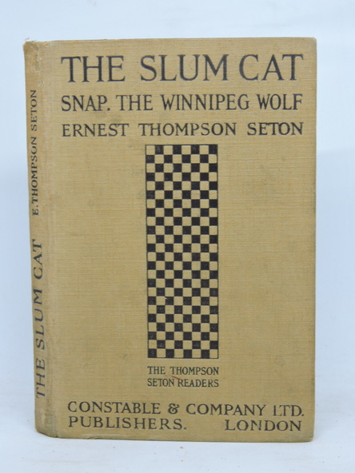

0
стр. з
0
сторінок

завантаження...

Эрнест Сетон-Томпсон
Трущобная кошка (Королевская Аналостанка)
Пособие подготовила Ольга Ламонова
Метод чтения Ильи Франка
Сontents
LIFE I
(Жизнь первая).
I
"M-e-a-t (мя-я-со)! M-e-a-t!" came shrilling down Scrimper's Alley (пронзительно разносилось по Скримперскому переулку; to come — приходить; идти; доходить, долетать, доноситься; to shrill — звучать резко, пронзительно /о голосе, звуке/; down — /предл./ указывает на движение вниз или в более отдаленное место /вниз/ по; вдоль по; alley — узкая улица, узкий переулок). Surely the Pied Piper of Hamelin was there (несомненно, там был /сам/ крысолов: «дудочник в пестрой одежде» из Гамельна[1]; pied — пестрый, разноцветный; носящий пеструю одежду; pipe — /курительная/ трубка; свирель, дудка; piper — игрок на свирели, дудке; дудочник), for it seemed that all the Cats in the neighborhood were running toward the sound (потому что казалось, что все кошки квартала сбегались на этот звук: «бежали по направлению к этому звуку»; neighborhood — соседство; близость; округа, район, окрестности), though the Dogs (хотя собаки), it must be confessed (нужно признать: «это должно быть признано»), looked scornfully indifferent (выглядели презрительно-равнодушными; to look — смотреть, глядеть; выглядеть, иметь вид).
alley ['xlI], pied [paId], neighbourhood ['neIbqhVd], though [DqV], scornfully ['skLnf(q)lI]
"M-e-a-t! M-e-a-t!" came shrilling down Scrimper's Alley. Surely the Pied Piper of Hamelin was there, for it seemed that all the Cats in the neighborhood were running toward the sound, though the Dogs, it must be confessed, looked scornfully indifferent.
"Meat (мясо)! Meat!" and louder (и /все/ громче); then the centre of attraction came in view (затем показался и сам глашатай: «затем центр притяжения пришел в поле зрения»; then — тогда, в то время; затем, позже; attraction — притяжение, тяготение; привлекательность, притягательность; to come; view — вид; пейзаж; видимость, поле зрения) — a rough, dirty little man with a push-cart (грубый неопрятный: «грязный» мужчина невысокого роста с ручной тележкой; little — маленький, небольшой /о размере/; push — толчок; толкание; cart — телега, повозка; тележка, тачка; push-cart — ручная тележка); while straggling behind him were a score of Cats (а: «в то время как» вслед за ним брели десятка два кошек; to straggle — быть беспорядочно разбросанным; блуждать, бродить; behind — за, сзади, позади; вслед за, следом за; score — счет очков /в игре/; два десятка) that joined in his cry with a sound nearly the same as his own (которые кричали почти в унисон с ним: «которые присоединялись к его крику со звуком, почти таким же, как его собственный»; to join — соединять, объединять; присоединяться /к кому-л./). Every fifty yards (/через/ каждые пятьдесят ярдов; yard — ярд /мера длины = 3 футам или 91,44 см/), that is, as soon as a goodly throng of Cats was gathered (то есть, как только собиралась внушительная толпа кошек; goodly — красивый, миловидный; крупный, значительный; throng — толчея; толпа, масса, множество, скопление), the push-cart stopped (тележка останавливалась).
louder ['laVdq], view [vjH], rough [rAf], push-cart ['pVSkRt], gathered ['gxDqd]
"Meat! Meat! "and louder; then the centre of attraction came in view — a rough, dirty little man with a push-cart; while straggling behind him were a score of Cats that joined in his cry with a sound nearly the same as his own. Every fifty yards, that is, as soon as a goodly throng of Cats was gathered, the push-cart stopped.
The man with the magic voice (человек, чей голос обладал магической силой: «человек с волшебным голосом») took out of the box in his cart a skewer (доставал из ящика, /который стоял/ в его тележке, /небольшой/ вертел; to take out) on which were pieces of strong-smelling boiled liver (на котором были кусочки сильно пахнущей вареной печенки; strong — сильный, обладающий большой физической силой; сильный, острый, резкий /о запахе, обыкн. неприятный/; to smell — обонять, чувствовать запах; пахнуть, иметь запах; liver — /анат./ печень; /кул./ печенка, ливер). With a long stick he pushed the pieces off (при помощи длинной палки он спихивал эти кусочки /с вертела/). Each Cat seized on one (каждая кошка хватала один /кусочек/; to seize — схватить, хватать; on — /нареч./ зд.: указывает на продвижение вперед в пространстве), and wheeling (и, разворачиваясь; wheel — колесо; to wheel — катить, везти, толкать /перед собой тачку и т.п./; описывать круги; /резко/ поворачиваться), with a slight depression of the ears (слегка прижав уши: «с небольшим придавливанием ушей»; slight — стройный, тонкий; легкий, небольшой, незначительный) and a little tiger growl and glare (/издав/ короткое тигриное рычание и /метнув свирепый/ взгляд: «и /с/ небольшим тигриным рычанием и взглядом»; little — маленький, небольшой /о размере/; небольшой, незначительный; glare — яркий, ослепительный свет; острый, проницательный взгляд; огонь во взгляде), she rushed away with her prize (она мчалась прочь со своей добычей; prize — награда, премия, приз; трофей, добыча) to devour it in some safe retreat (чтобы с жадностью проглотить ее в каком-нибудь надежном: «безопасном» убежище; to devour — жадно есть; глотать, давясь; retreat — отступление; уединение, удаление от общества; убежище, пристанище, приют).
magic ['mxGIk], skewer /сущ./ ['skjHq], liver ['lIvq], seize [si:z], growl [graVl], devour [dI'vaVq]
The man with the magic voice took out of the box in his cart a skewer on which were pieces of strong-smelling boiled liver. With a long stick he pushed the pieces off. Each Cat seized on one, and wheeling, with a slight depression of the ears and a little tiger growl and glare, she rushed away with her prize to devour it in some safe retreat.
"Meat (мясо)! Meat!" And still they came to get their portions (и они по-прежнему подходили, чтобы получить свою порцию: «их порции»). All were well known to the meat-man (все /они/ были хорошо известны торговцу мясом; meatman — мясник, продавец мяса). There was Castiglione's Tiger (вот /та/ — большая кошка, /которая принадлежала/ Кастильоне; there — там; вон, вот /используется для привлечения внимания к тому или иному объекту/; tiger — тигр; крупное животное из семейства кошачьих; пума, пантера); this was Jones's Black (а это — черная /кошка/ Джонса); here was Pralitsky's "Torkershell," (здесь = это "черепаховая" /кошка/ Пралицкого; torker — /искаж./, от tortoise — черепаха /сухопутная/; shell — раковина; панцирь, щит /черепахи и т.п./; tortoise-shell — панцирь черепахи; пестрая кошка) and this was Madame Danton's White (а это — белая /кошка/ мадам Дантон); there sneaked Blenkinshoff's Maltee (вон там подкрадывалась короткошерстная: «мальтийская[2]» /кошка/ Бленкинсгофа), and that climbing on the barrow was Sawyer's old Orange Billy (а тот, что карабкался на саму тачку, был старый Рыжий: «оранжевый» Билли Сойера), an impudent fraud that never had had any financial backing (нахальный плут, за которого никогда не платили: «который никогда не имел никакой финансовой поддержки»; fraud — обман, мошенничество; обманщик, плут, жулик, мошенник; back — спина; тыльная часть, задняя часть; to back — поддерживать; подкреплять; финансировать, субсидировать; backing — помощь, поддержка), — all to be remembered and kept in account (всех необходимо было запомнить и /всех/ учесть: «все должны быть запомненными и принятыми в расчет»; to keep — держать, иметь, хранить; помнить, хранить /в памяти/; account — счет; учитывание, принятие в расчет /чего-л./).
sneak [sni:k], climb [klaIm], orange ['PrInG], impudent ['ImpjVd(q)nt], fraud [frLd], financial [faI'nxnS(q)l]
"Meat! Meat!" And still they came to get their portions. All were well known to the meat-man. There was Castiglione's Tiger; this was Jones's Black; here was Pralitsky's "Torkershell," and this was Madame Danton's White; there sneaked Blenkinshoff's Maltee, and that climbing on the barrow was Sawyer's old Orange Billy, an impudent fraud that never had had any financial backing, — all to be remembered and kept in account.
This one's owner was sure pay, a dime a week (владелец этой /кошки/ был исправным плательщиком, /платил/ десять центов в неделю; sure — уверенный; верный, надежный; pay — плата, уплата; плательщик /с точки зрения его платежеспособности/; dime — монета в 10 центов /в Америке и Канаде/); that one's doubtful (/владелец/ вон той — вызывает подозрения; doubt — сомнение; doubtful — сомневающийся, нерешительный, колеблющийся; подозрительный, сомнительный). There was John Washee's Cat (а вот кошка Джона Уоши), that got only a small piece (которой достался: «которая получила» только небольшой кусочек; to get) because John was in arrears (потому что Джон просрочил платеж; arrear — задолженность, просрочка платежа; to be in arrears — просрочить платеж, иметь задолженность). Then there was the saloon-keeper's collared and ribboned ratter (кроме того: «далее», там был крысолов трактирщика, в ошейнике и с бантами; saloon — бар, кабак, питейное заведение, салун; keeper — хранитель; собственник, владелец; collar — воротник; ошейник; to collar — надеть воротник, хомут, ошейник и т.п.; ribbon — лента; to ribbon — украшать лентами; rat — крыса; ratter — крысолов /особ. о собаке/), which got an extra lump (который получал дополнительный большой кусок; lump — глыба, ком; крупный кусок) because the 'barkeep' was liberal (потому что трактирщик был щедрым; barkeep = barkeeper — буфетчик, бармен; хозяин бара, содержатель таверны); and the rounds-man's Cat (и кошка полицейского инспектора; round — /сущ./ круг, окружность; движение по кругу; обход; rounds-man — /амер./ полицейский инспектор), that brought no cash (за которую не платили: «которая /не/ приносила никакой наличности»; to bring — приносить; доставлять; cash — деньги; наличные деньги, наличный расчет), but got unusual consideration (но которая получала = которой оказывалось исключительное внимание; to get; unusual — необыкновенный; необычный; выдающийся, исключительный; consideration — вежливость, предупредительность; почет, уважение) because the meat-man did (потому что /сам/ торговец мясом приносил /наличность полицейскому инспектору/).
owner ['qVnq], doubtful ['daVtf(q)l], arrears [q'rIqz], collared ['kPlqd], unusual [An'jHZ(q)l], brought [brLt]
This one's owner was sure pay, a dime a week; that one's doubtful. There was John Washee's Cat, that got only a small piece because John was in arrears. Then there was the saloon-keeper's collared and ribboned ratter, which got an extra lump because the 'barkeep' was liberal; and the rounds-man's Cat, that brought no cash, but got unusual consideration because the meat-man did.
But there were others (но там были и другие /кошки/). A black Cat with a white nose came rushing confidently with the rest (черная кошка с белым носом подбежала стремительно /и/ уверенно вместе с остальными; to rush — бросаться, мчаться, нестись, устремляться), only to be repulsed savagely (только для того, чтобы ее беспощадно оттолкнули: «чтобы быть беспощадно оттолкнутой»; to repulse — отражать, отбивать /атаку/; отвергать, отталкивать; savagely — подобно дикарю, варварски; жестоко, свирепо, зло, беспощадно; savage — дикий). Alas (увы)! Pussy did not understand (кошечка не понимала, /что же произошло/). She had been a pensioner of the barrow for months (она так долго получала печенку из этой тележки: «она была пенсионеркой этой тележки /многие/ месяцы»). Why this unkind change (почему эта недобрая перемена)? It was beyond her comprehension (она не могла понять: «это было за пределами ее понимания»; beyond — за, по ту сторону, за пределами). But the meat-man knew (но торговец мясом знал). Her mistress had stopped payment (ее хозяйка перестала платить: «прекратила платежи»; to stop — останавливать, задерживать; приостанавливать, прекращать). The meat-man kept no books but his memory (торговец мясом не вел гроссбухов, а /все/ хранил в своей памяти: «не держал /иных/ бухгалтерских книг, кроме своей памяти»; to keep — держать; хранить; вести /записи, счета/; book — книга; конторская книга, бухгалтерская книга), and it never was at fault (и она никогда не подводила: «не ошибалась»; fault — недостаток, дефект; ошибка, промах; to be at fault — ошибаться, заблуждаться).
other ['ADq], repulsed [rI'pAlst], savagely ['sxvIGlI], alas [q'lxs], pensioner ['penS(q)nq], unkind [An'kaInd], comprehension ["kPmprI'henS(q)n]
But there were others. A black Cat with a white nose came rushing confidently with the rest, only to be repulsed savagely. Alas! Pussy did not understand. She had been a pensioner of the barrow for months. Why this unkind change? It was beyond her comprehension. But the meat-man knew. Her mistress had stopped payment. The meat-man kept no books but his memory, and it never was at fault.
Outside this patrician 'four hundred' about the barrow, were other Cats (вокруг: «за пределами» этих аристократических "четырех сотен[3]", возле тележки были /и/ другие кошки; patrician — патрицианский; аристократический, знатный; the four hundred — /амер./ четыреста богатейших семейств страны), keeping away from the push-cart (/которые/ держались поодаль от тележки) because they were not on the list (потому что они не были включены в список), the Social Register as it were (в светский альманах[4], так сказать; social — общественный, социальный; светский; register — журнал записей, реестр; официальный список, ведомость; Social Register — /амер./ светский календарь /справочник/; to be in the Social Register — принадлежать к высшему свету), yet fascinated by the heavenly smell (и все же были пленены божественным ароматом; heavenly — небесный; божественный, неземной; восхитительный, очаровательный, изумительный; smell — обоняние; запах) and the faint possibility of accidental good luck (и слабой возможностью случайной удачи; faint — слабый; вялый; тусклый, нечеткий; незначительный; luck — фортуна, судьба; счастливый случай, шанс; good luck — счастливый случай, удача).
patrician [pq'trIS(q)n], register ['reGIstq], fascinated ['fxsIneItId], accidental ["xksI'dent(q)l]
Outside this patrician 'four hundred' about the barrow, were other Cats, keeping away from the push-cart because they were not on the list, the Social Register as it were, yet fascinated by the heavenly smell and the faint possibility of accidental good luck.
Among these hangers-on was a thin gray Slummer (среди этих прихлебателей была одна тощая серая обитательница трущоб; slum — трущобы; -er — /суфф./ для обозначения человека по роду занятий, профессии; по общественному положению, возрасту, месту рождения или проживания), a homeless Cat that lived by her wits (бездомная кошка, которая жила, кое-как перебиваясь; wit — ум, разум; to live by one’s wits — изворачиваться, всеми правдами и неправдами добывать средства к жизни) — slab-sided and not over-clean (поджарая и не очень чистая; slab — плита; лист, пластина; slab-sided — имеющий плоские бока; худощавый, высокий и худой; over- — сверху, над чем-л.; чрезмерно, слишком). One could see at a glance (можно было увидеть с первого же взгляда; to see — видеть; понимать, сознавать; glance — быстрый взгляд; at a glance — с первого взгляда, сразу) that she was doing her duty by a family in some out-of-the-way corner (что она выполняла свой долг перед семьей в каком-то укромном: «отдаленном» уголке; corner — угол; закоулок, потайной уголок). She kept one eye on the barrow circle (она одним глазом зорко следила за собравшимися вокруг тележки /кошками/: «за группой /вокруг/ тележки; to keep — держать, иметь, хранить; eye — глаз, око; внимание к чему-л., присмотр; to keep an eye on smb./smth. — глаз не спускать с кого-л., чего-л., следить за кем-л., чем-л.; circle — круг; группа, круг /людей/; кружок /сообщество лиц по интересам/) and the other on the possible Dogs (а другим — за возможным появлением собак: «а другим за возможными собаками»).
among [q'mAN], glance [glRns], circle [sE:kl]
Among these hangers-on was a thin gray Slummer, a homeless Cat that lived by her wits — slab-sided and not over-clean. One could see at a glance that she was doing her duty by a family in some out-of-the-way corner. She kept one eye on the barrow circle and the other on the possible Dogs.
She saw a score of happy Cats slink off with their delicious 'daily' (она видела, как пара десятков счастливых кошек, крадучись, уносились прочь со своей вкусной ежедневной порцией; score — счет очков /в игре/; два десятка; delicious — восхитительный, очаровательный; очень вкусный, очень приятный; daily — ежедневная газета; пропитание, "хлеб насущный") and their tiger-like air (с тигриным видом; - like — подобный чему-л., напоминающий что-л.; air — воздух, атмосфера; вид, выражение лица), but no opening for her (но у нее не было никакой возможности /полакомиться печенкой/; opening — отверстие, щель; благоприятная возможность, удобный случай), till a big Tom of her own class (пока большой дворовый кот: «большой кот из ее собственного /общественного/ класса»; Tom — Том /мужское имя/; самец /различных/ животных и птиц; ср. тж.: tomcat — кот) sprang on a little pensioner with intent to rob (не напал на маленькую клиентку: «пенсионерку» с намерением ограбить; to spring — скакать, прыгать; бросаться). The victim dropped the meat (жертва уронила печенку: «мясо/пищу»; to drop — капать, стекать каплями; ронять, выпускать) to defend herself against the enemy (чтобы защитить себя от врага), and before the 'all-powerful' could intervene (и прежде чем "всемогущий" смог вмешаться), the gray Slummer saw her chance (серая трущобница воспользовалась этой возможностью: «увидела свой шанс»; chance — случайность; счастье, удача; удачное стечение обстоятельств; шанс, возможность), seized the prize (схватила добычу), and was gone (и была такова; to go — идти; уходить; исчезать).
delicious [dI'lISqs], pensioner ['penS(q)nq], all-powerful ["Ll'paVqf(q)l], intervene ["Intq'vi:n], gone [gPn]
She saw a score of happy Cats slink off with their delicious 'daily' and their tiger-like air, but no opening for her, till a big Tom of her own class sprang on a little pensioner with intent to rob. The victim dropped the meat to defend herself against the enemy, and before the 'all-powerful' could intervene, the gray Slummer saw her chance, seized the prize, and was gone.
She went through the hole in Menzie's side door (она пролезла в: «прошла сквозь» дыру в боковой двери Менци) and over the wall at the back (и /перепрыгнула/ через стену на заднем /дворе/; back — спина; задняя часть чего-л., задний план), then sat down and devoured the lump of liver (затем уселась и жадно проглотила большой кусок печенки; to sit), licked her chops (облизнулась: «облизала свои челюсти»), felt absolutely happy (почувствовала себя абсолютно счастливой; to feel — трогать, щупать, осязать; чувствовать), and set out by devious ways to the rubbish-yard (и направилась окольными путями к свалке; to set out = to set off — отправляться /в путь/; rubbish — мусор, сор, хлам; yard — двор; склад, площадка /для открытого хранения или работ/), where, in the bottom of an old cracker-box (где на дне старой коробки из-под сухого печенья; bottom — низ, нижняя часть; дно, днище), her family was awaiting her (ее семейство поджидало ее).
devour [dI'vaVq], devious ['di:vjqs], rubbish ['rAbIS]
She went through the hole in Menzie's side door and over the wall at the back, then sat down and devoured the lump of liver, licked her chops, felt absolutely happy, and set out by devious ways to the rubbish-yard, where, in the bottom of an old cracker-box, her family was awaiting her.
A plaintive mewing reached her ears (жалобное мяуканье донеслось до ее слуха: «ушей»; to reach — протягивать, вытягивать /особ. руку/; достигать, доходить; ear — ухо; слух). She went at speed and reached the box to see (она стремглав помчалась к коробке: «бросилась на большой скорости и добралась до коробки», чтобы увидеть; to go — идти, ходить; двигаться /с определенной скоростью/; speed — скорость; at speed — на большой скорости) a huge Black Tom-cat calmly destroying her brood (/как/ огромный черный дворовый кот спокойно уничтожает ее потомство: «выводок»; to destroy — разрушать, рушить, сносить; истреблять, уничтожать, лишать жизни, убивать). He was twice as big as she (он был в два раза больше ее), but she went at him with all her strength (но она бросилась на него со всей своей силой; to go at smb. — набрасываться, бросаться на кого-л.), and he did as most animals will do when caught wrong-doing (и он поступил так, как поступит большинство животных, застигнутых за дурным поступком; to catch — ловить; поймать, схватить; поймать, застигнуть; застать), he turned and ran away (он повернулся и убежал прочь; to run). Only one was left (только один /котенок/ остался /в живых/; to leave — покидать; оставлять), a little thing like its mother (маленький комочек, похожий на свою мать; thing — вещь, предмет; существо, создание; little thing — малютка, крошка), but of more pronounced color (но более яркого окраса: «более резко выраженного цвета»; to pronounce — объявлять; pronounced — резко выраженный; определенный, отчетливый, четкий, ясный, явный) — gray with black spots (/он был/ серый с черными пятнышками), and a white touch on nose (и белыми отметинами на носу; to touch — /при/касаться, трогать, притрагиваться; touch — прикосновение, касание; малое количество чего-л.: чуточка; примесь, налет; оттенок), ears (ушках), and tail-tip (и кончике хвоста).
plaintive ['pleIntIv], mewing ['mjHIN], calmly ['kRmlI], wrong-doing ['rPN"dHIN], pronounced [prq'naVnst], touch [tAC]
A plaintive mewing reached her ears. She went at speed and reached the box to see a huge Black Tom-cat calmly destroying her brood. He was twice as big as she, but she went at him with all her strength, and he did as most animals will do when caught wrong-doing, he turned and ran away. Only one was left, a little thing like its mother, but of more pronounced color — gray with black spots, and a white touch on nose, ears, and tail-tip.
There can be no question of the mother's grief for a few days (не может быть никаких сомнений в том, что мать горевала несколько дней: «в печали матери в течение нескольких дней»; question — вопрос; сомнение, возражение; ср. тж.: there is no question of that — об этом и речи нет); but that wore off (но затем печаль прошла; to wear — носить; изнашивать/ся/; протирать/ся/; to wear off — утрачиваться, заканчиваться, переставать действовать), and all her care was for the survivor (и вся ее забота сосредоточилась на уцелевшем /котенке/: «была для уцелевшего»; to survive — пережить /по времени/; продолжать существовать; сохраняться; survivor — оставшийся в живых, уцелевший). That benevolence was as far as possible from the motives of the murderous old Tom (такая /материнская/ щедрость была полной противоположностью мотивам /поступка/: «была так далеко, как /только/ возможно, от мотивов» кровожадного старого кота; benevolence — благожелательность, доброжелательность; благотворительность, филантропия, щедрость; murderous — смертоносный, смертельный; кровожадный, жестокий) there can be no doubt (в этом можно не сомневаться: «/не/ может быть сомнений»); but he proved a blessing in deep disguise (но он = старый кот оказался невольным благодетелем: «благословением в хорошей маскировке»; to prove — доказывать; оказываться; deep — глубокий; интенсивный, сильный, серьезный), for both mother and Kit were visibly bettered in a short time (потому что оба /они/ — мать и котенок — заметно похорошели: «улучшились» за короткое время; short — короткий; краткий, недолгий).
question ['kwestSqn], survivor [sq'vaIvq], benevolence [bI'nevqlqns], murderous ['mE:d(q)rqs], prove [prHv], disguise [dIs'gaIz]
There can be no question of the mother's grief for a few days; but that wore off, and all her care was for the survivor. That benevolence was as far as possible from the motives of the murderous old Tom there can be no doubt; but he proved a blessing in deep disguise, for both mother and Kit were visibly bettered in a short time.
The daily quest for food continued (каждодневные поиски пищи продолжались). The meat-man rarely proved a success (торговец мясом редко приносил /ей/ удачу: «оказывался удачей»; to prove — доказывать; оказываться, показывать на практике), but the ash-cans were there (но там были ящики для мусора; ash — зола, пепел; can — жестяная коробка или банка; /амер./ урна, мусорный ящик; ash-can — ящик, урна для мусора), and if they did not afford a meat-supply (и, хотя они и не предоставляли мясного провианта; to afford — быть в состоянии /сделать что-л./; позволить себе /что-л./; давать, доставлять; приносить; supply — снабжение, поставка; запас, припасы, продовольствие, провиант), at least they were sure to produce potato-skins (по меньшей мере, они обязательно давали картофельную шелуху; to produce — производить, выпускать; приносить, давать; skin — кожа; кожура, кожица) that could be used (которой можно было воспользоваться) to allay the gripe of hunger for another day (чтобы приглушить голодные колики до следующего дня; to allay — успокаивать, подавлять /страх, волнение, боль/; gripe — схватывание, зажим, зажатие; /разг./ резь, колики).
quest [kwest], success [sqk'ses], afford [q'fLd], supply /поставка/ [sq'plaI], produce /гл./ [prq'djHs], potato [pq'teItqV], allay [q'leI]
The daily quest for food continued. The meat-man rarely proved a success, but the ash-cans were there, and if they did not afford a meat-supply, at least they were sure to produce potato-skins that could be used to allay the gripe of hunger for another day.
One night the mother Cat smelt a wonderful smell (однажды ночью мама-кошка учуяла удивительный аромат; to smell — слышать запах; пахнуть; smell — обоняние; запах) that came from the East River at the end of the alley (который исходил от Восточной реки[5], в /самом/ конце переулка). A new smell always needs investigating (каждый новый запах всегда требует изучения; to need — нуждаться, иметь надобность; требовать, чувствовать необходимость /чего-л./; to investigate — расследовать; собирать сведения; изучать, исследовать), and when it is attractive as well as new (а когда он привлекателен, будучи к тому же и новым: «и когда он привлекательный так же как новый»), there is but one course open (тогда остается: «является открытым» лишь один путь; course — курс, направление). It led Pussy to the docks a block away (он повел кошечку к докам, /расположенным/ в квартале /от ее жилища/; to lead — вести, быть проводником путь; вести, служить каналом; block — чурбан, колода; жилищный массив, /амер./ квартал), and then out on a wharf (а затем /из доков/, на причал; wharf — верфь; причал, пристань), away from any cover but the night (где ее единственным прикрытием осталась ночь: «прочь от любого другого прикрытия, кроме ночи»; cover — покрышка, обертка; убежище, укрытие, прикрытие).
alley ['xlI], investigating [In'vestIgeItIN], course [kLs], wharf [wLf], cover ['kAvq]
One night the mother Cat smelt a wonderful smell that came from the East River at the end of the alley. A new smell always needs investigating, and when it is attractive as well as new, there is but one course open. It led Pussy to the docks a block away, and then out on a wharf, away from any cover but the night.
A sudden noise (неожиданный шум), a growl and a rush (рычание и стремительный натиск; rush — стремительное движение, бросок, напор, натиск), were the first notice she had (первыми предупредили ее о том: «были первыми предупреждениями, которые она имела»; notice — извещение, сообщение, уведомление; предупреждение) that she was cut off by her old enemy, the Wharf Dog (что она оказалась отрезанной /от берега/ ее старым врагом, собакой с причала; to cut — резать, разрезать; to cut off — отрубить, отсечь; отрезать /путь/, изолировать). There was only one escape (был только один /путь/ спасения; escape — бегство, побег; избавление, спасение). She leaped from the wharf to the vessel (она прыгнула с причала на то /самое/ судно; vessel — сосуд /для жидкости/; судно, корабль) from which the smell came (с которого доносился запах; to come — приходить, идти; происходить, истекать /из какого-л. источника/). The Dog could not follow (собака не могла последовать /за ней/), so when the fish-boat sailed in the morning (так что, когда рыбачья лодка отчалила утром; sail — парус; to sail — плавать, совершать плавание; отплывать, отходить /о судне/) Pussy unwillingly went with her (кошечка, сама того не желая, отправилась с ней; unwillingly — неохотно, против желания) and was seen no more (и больше ее не видели).
noise [nOIz], escape [Is'keIp], unwillingly [An'wIlINI]
A sudden noise, a growl and a rush, were the first notice she had that she was cut off by her old enemy, the Wharf Dog. There was only one escape. She leaped from the wharf to the vessel from which the smell came. The Dog could not follow, so when the fish-boat sailed in the morning Pussy unwillingly went with her and was seen no more.
II
The Slum Kitten waited in vain for her mother (трущобная кошечка/-дочь/ напрасно ждала свою мать; kitten — котенок). The morning came and went (наступило и закончилось утро: «утро пришло и ушло»). She became very hungry (она сильно проголодалась: «стала очень голодной»; to become). Toward evening a deep-laid instinct drove her forth to seek food (ближе к вечеру глубоко заложенный инстинкт погнал ее на улицу в поисках пищи: «наружу, чтобы искать пищу»; to drive — гнать; forth — вперед, дальше; наружу). She slunk out of the old box (она крадучись выбралась из старой коробки; to slink — красться, идти крадучись), and feeling her way silently among the rubbish (и стала ползать, не издавая ни звука, среди мусора: «и нащупывала дорогу молча среди мусора»; to feel — трогать, щупать; to feel one’s way — идти ощупью, нащупывать дорогу), she smelt everything that seemed eatable (она обнюхала все, что казалось съедобным; to smell — обонять, чувствовать запах; нюхать, вдыхать запах), but without finding food (но еды так и не нашла: «но без нахождения пищи»).
toward [tq'wLd], eatable ['i:tqbl], without [wI'DaVt]
The Slum Kitten waited in vain for her mother. The morning came and went. She became very hungry. Toward evening a deep-laid instinct drove her forth to seek food. She slunk out of the old box, and feeling her way silently among the rubbish, she smelt everything that seemed eatable, but without finding food.
At length she reached the wooden steps (наконец, она добралась до деревянных ступеней; length — длина; продолжительность, протяженность /во времени/; at length — наконец, в итоге; step — шаг; ступенька) leading down into Jap Malee's bird-store underground (которые вели вниз, в подвал птичьей лавки Япошки Мали; store — запас, резерв; /амер./ магазин, лавка; underground — подпочва, нижние слои грунта; подвал; подземные помещения; Jap — /пренебр./ японец, японка, сокр. от Japanese). The door was open a little (дверь была приоткрыта: «открыта немного»). She wandered into a world of rank and curious smells (она забрела в мир резких и странных запахов; to wander — бродить, странствовать; rank — прогорклый, протухший /о жирах/; вонючий, дурно пахнущий) and a number of living things in cages all about her (и некоторого количества живых существ в клетках, /которые окружали/ ее со всех сторон; number — число, количество; a number — некоторое количество, несколько).
wooden ['wVd(q)n], Jap [dZxp], wander ['wPndq], curious ['kjVqrIqs], cage [keIG]
At length she reached the wooden steps leading down into Jap Malee's bird-store underground. The door was open a little. She wandered into a world of rank and curious smells and a number of living things in cages all about her.
A negro was sitting idly on a box in a corner (какой-то негр сидел, ничего не делая: «праздно», на ящике в углу; negro — /презр./ черномазый, черномазая; /уст./ негр). He saw the little stranger enter (он видел, как вошла маленькая незнакомка) and watched it curiously (и стал наблюдать за ней с любопытством; curiously — любопытно, странно; с любопытством). It wandered past some Rabbits (она пробралась мимо нескольких клеток с кроликами). They paid no heed (они не обратили /на нее/ внимания; to pay — платить; оказывать, обращать /внимание/). It came to a wide-barred cage in which was a Fox (она подошла к клетке с широкой решеткой, в которой сидел: «был» лис; bar — полоса, брусок; решетка /тюремная/, прутья /решетки/). The gentleman with the bushy tail was in a far corner (джентльмен с пушистым хвостом находился в дальнем углу /клетки/; bush — куст, кустарник; bushy — покрытый кустарником; пушистый /о хвосте лисицы и др. животных/). He crouched low (он низко припал к земле; to crouch — припадать к земле; согнуться, сжаться); his eyes glowed (глаза его горели; to glow — накаливаться; гореть, сверкать /о глазах/).
negro ['nJgrqV], idly ['aIdlI], stranger ['streIndZq], bushy ['bVSI], crouched [kraVtSt], low [lqV]
A negro was sitting idly on a box in a corner. He saw the little stranger enter and watched it curiously. It wandered past some Rabbits. They paid no heed. It came to a wide-barred cage in which was a Fox. The gentleman with the bushy tail was in a far corner. He crouched low; his eyes glowed.
The Kitten wandered, sniffing, up to the bars (кошечка подобралась, принюхиваясь, к прутьям решетки; to sniff — сопеть, шмыгать носом; обнюхивать, принюхиваться), put its head in (просунула свою голову в /клетку/), sniffed again (снова принюхалась), then made toward the feed-pan (затем двинулась к миске с едой; to make — делать, производить; двигаться /в каком-л. направлении/; to feed — кормить; pan — кастрюля; миска, таз), to be seized in a flash by the crouching Fox (и была тут же схвачена: «чтобы быть схваченной в одно мгновение» припавшим к земле лисом; flash — вспышка, яркий свет; мгновение, миг; in a flash — в один миг, в мгновение ока). It gave a frightened "mew," (она испуганно мяукнула: «издала испуганное "мяу"»; to give) but a single shake cut that short (но один-единственный толчок заставил ее замолкнуть: «один удар тут же оборвал его = мяуканье»; shake — встряска; толчок, удар; to cut — резать, разрезать; short — /нареч./ резко, круто, внезапно; to cut short — обрывать, внезапно прерывать) and would have ended Kitty's nine lives at once (и немедленно положил бы конец девяти жизням киски[6]; end — конец; to end — кончать, заканчивать; прекращать), had not the negro come to the rescue (если бы негр не пришел /ей/ на помощь; rescue — спасение /жизни/; избавление, освобождение; to come to the rescue — приходить на выручку).
mew [mjH], frightened ['fraIt(q)nd], rescue ['reskjH]
The Kitten wandered, sniffing, up to the bars, put its head in, sniffed again, then made toward the feed-pan, to be seized in a flash by the crouching Fox. It gave a frightened "mew," but a single shake cut that short and would have ended Kitty's nine lives at once, had not the negro come to the rescue.
He had no weapon (у него не было оружия) and could not get into the cage (и /он/ не мог зайти в клетку; to get — получить; приходить; прибывать, достигать), but he spat with such copious vigor in the Fox's face (но он плюнул с такой силой и мощью: «с такой обильной силой» в морду лиса; to spit) that he dropped the Kitten and returned to the corner (что тот выронил киску и вернулся в угол; to drop — капать, стекать каплями; ронять, выпускать), there to sit blinking his eyes in sullen fear (чтобы /снова/ сидеть там, моргая глазами, в угрюмом страхе). The negro pulled the Kitten out (негр вытащил кошечку из /клетки/).
weapon ['wepqn], copious ['kqVpIqs], vigor ['vIgq], fear [fIq]
He had no weapon and could not get into the cage, but he spat with such copious vigor in the Fox's face that he dropped the Kitten and returned to the corner, there to sit blinking his eyes in sullen fear. The negro pulled the Kitten out.
The shake of the beast of prey seemed to have stunned the victim (встряска, /учиненная/ хищным зверем, казалось, оглушила жертву; beast — зверь, животное; prey — жертва; добыча; beast of prey — хищный зверь, хищник), really to have saved it much suffering (/но/ на самом деле уберегла ее от множества страданий; to save — спасать; избавлять, освобождать /от чего-л./). The Kitten seemed unharmed, but giddy (кошечка, казалось, не получила никаких повреждений, но голова у нее шла кругом: «котенок казался невредимым, но испытывающим головокружение»). It tottered in a circle for a time (она проковыляла по кругу какое-то время), then slowly revived (после чего медленно пришла в себя; to revive — возрождаться, воскресать; приходить в себя, в сознание), and a few minutes later was purring in the negro's lap (а несколькими минутами позже мурлыкала, /сидя/ на коленях у негра; lap — подол; пола, фалда; колени /верхняя часть ног у сидящего человека/), apparently none the worse (очевидно, /чувствуя себя/ ничуть не хуже /чем раньше/; none the worse — ничуть не хуже, еще лучше), when Jap Malee, the bird-man, came home (когда Япошка Мали, торговец птицами, пришел домой).
unharmed [An'hQ:md], giddy ['gIdI], revive [rI'vaIv], purring ['pE:rIN], worse [wE:s]
The shake of the beast of prey seemed to have stunned the victim, really to have saved it much suffering. The Kitten seemed unharmed, but giddy. It tottered in a circle for a time, then slowly revived, and a few minutes later was purring in the negro's lap, apparently none the worse, when Jap Malee, the bird-man, came home.
Jap was not an Oriental (Япошка не был уроженцем Востока; Oriental — /сущ., пренебр./ житель Востока; азиат); he was a full-blooded Cockney (он был чистокровным кокни; cockney — кокни /лондонское просторечие/; /пренебр./ кокни, коренной лондонец /уроженец Лондона, особ. его восточной части/), but his eyes were such little accidental slits (но его глаза были такими маленькими, /кажущимися/ второстепенными /среди остальных черт/ щелками; accidental — случайный; второстепенный; вспомогательный, дополнительный) aslant in his round, flat face (косо /посаженными/ на его круглом плоском лице), that his first name was forgotten (что его настоящее: «первое» имя было позабыто; to forget) in the highly descriptive title of "Jap" (ради этого чрезвычайно наглядного = выразительного имени "Япошка"; title — заглавие, название; имя).
Oriental ["LrI'ent(q)l], full-blooded ["fVl'blAdId], cockney ['kPknI], accidental ["xksI'dent(q)l], aslant [q'slQ:nt]
Jap was not an Oriental; he was a full-blooded Cockney, but his eyes were such little accidental slits aslant in his round, flat face, that his first name was forgotten in the highly descriptive title of "Jap."
He was not especially unkind to the birds and beasts (он не был как-то по-особенному недобр = жесток с птицами и животными) whose sales were supposed to furnish his living (торговля которыми должна была обеспечивать: «снабжать» его средствами к существованию; sale — продажа; реализация, сбыт; to suppose — подразумевать в качестве условия; to be to supposed — быть обязанным), but his eye was on the main chance (но он всегда чуял, где можно поживиться: «но его взор был на главной возможности»; eye — глаз, око; взгляд, взор; chance — случайность, случай; счастливый случай, удача; the main chance — нажива, обогащение; личные /корыстные/ цели, корысть; ср.тж.: to have an eye to the main chance — преследовать корыстные цели, стремиться к выгоде, наживе, обогащению); he knew what he wanted (/и/ он знал, что ему нужно; to want — хотеть, желать; нуждаться /в ком-л., чем-л.). He didn't want the Slum Kitten (ему не нужна была кошечка из трущоб). The negro gave it all the food it could eat (негр дал ей столько еды, сколько: «всю еду, которую» она смогла съесть), then carried it to a distant block (после чего отнес ее в какой-то удаленный квартал; block — чурбан, колода; жилищный массив, /амер./ квартал) and dropped it in a neighboring iron-yard (и оставил ее на прилегающем /к нему/ железном /складе; to drop — капать, стекать каплями; оставлять, бросать; yard — внутренний двор; открытая площадка для хранения).
furnish ['fE:nIS], chance [tSQ:ns], distant ['dIst(q)nt], iron-yard ['aIqn"jRd]
He was not especially unkind to the birds and beasts whose sales were supposed to furnish his living, but his eye was on the main chance; he knew what he wanted. He didn't want the Slum Kitten. The negro gave it all the food it could eat, then carried it to a distant block and dropped it in a neighboring iron-yard.
III
One full meal is as much as anyone needs in two or three days (одного сытного обеда вполне достаточно на два-три дня: «один обильный прием пищи — это столько, сколько необходимо любому на два или три дня»; full — полный, наполненный целиком; обильный; ср.т ж.: full meal — сытная еда), and under the influence of this stored-up heat and power (и под влиянием этого запасенного тепла и энергии; store — запас, резерв; to store — снабжать; наполнять; to store up — запасать, сберегать, заготовлять; heat — жара, зной; тепло; power — сила, мощь; энергия, мощность), Kitty was very lively (кошечка была очень оживленной). She walked around the piled-up rubbish (она стала прохаживаться по сваленному в кучи мусору; around — вокруг, кругом; повсюду; по, в неопределенном направлении по; pile — куча, груда; to pile — складывать, сваливать в кучу), cast curious glances on far-away Canary-birds in cages (бросая любопытствующие взгляды на далеких канареек в клетках; to cast — бросать, кидать, швырять; бросать /взгляды и т.п./) that hung from high windows (которые свисали с /расположенных/ высоко окон; to hang — вешать; висеть); she peeped over fences (она заглядывала через заборы), discovered a large Dog (обнаружила большую собаку), got quietly down again (снова бесшумно спустилась вниз), and presently finding a sheltered place in full sunlight (и вскоре, отыскав укрытие на самом солнцепеке: «защищенное место при полном солнечном свете»), she lay down and slept for an hour (она прилегла и проспала /целый/ час; to lie; to sleep).
influence ['InflVqns], lively ['laIvlI], canary-bird [kq'neqrI"bE:d], discovered [dI'skAvqd]
One full meal is as much as anyone needs in two or three, and under the influence of this stored-up heat and power, Kitty was very lively. She walked around the piled-up rubbish, cast curious glances on far-away Canary-birds in cages that hung from high windows; she peeped over fences, discovered a large Dog, got quietly down again, and presently finding a sheltered place in full sunlight, she lay down and slept for an hour.
A slight 'sniff' awakened her (легкое фырканье разбудило ее; slight — худощавый, тонкий; слабый, незначительный; sniff — сопение, шмыганье носом; фырканье, хмыканье), and before her stood a large Black Cat with glowing green eyes (перед ней стоял большой черный кот с горящими зелеными глазами; to stand; to glow — накаливаться; гореть, сверкать /о глазах/), and the thick neck (толстой шеей) and square jaws (и квадратными челюстями) that distinguish the Tom (которые говорили о том, что это был тот самый котище: «которые отличали того самого кота»; to distinguish — различить; характеризовать, служить отличительным признаком); a scar marked his cheek (шрам украшал его щеку: «шрам оставил след на его щеке»; to mark — ставить знак, метку; оставлять след, пятно, шрам, рубец), and his left ear was torn (и его левое ухо было порвано; to tear). His look was far from friendly (вид его был совсем недружелюбным: «его вид был далек от дружелюбного»; look — взгляд; вид, наружность); his ears moved backward a little (он пригнул уши: «его уши подались назад немного»), his tail twitched (хвост его подергивался; to twitch — дергать, тащить; дергаться, подергиваться), and a faint, deep sound came from his throat (и приглушенный низкий звук донесся из его горла; faint — слабый, ослабевший; нечеткий, расплывчатый /недостаточный для физического или умственного восприятия/; deep — глубокий; низкий /о звуке/).
square [skweq], jaw [dZL], distinguish [dI'stINgwIS], ear [Iq], throat [TrqVt]
A slight 'sniff' awakened her, and before her stood a large Black Cat with glowing green eyes, and the thick neck and square jaws that distinguish the Tom; a scar marked his cheek, and his left ear was torn. His look was far from friendly; his ears moved backward a little, his tail twitched, and a faint, deep sound came from his throat.
The Kitten innocently walked toward him (кошечка простодушно пошла к нему; innocent — невинный, непорочный; наивный, простодушный). She did not remember him (она не помнила его). He rubbed the sides of his jaws on a post (он потерся мордой: «потер /боковые/ стороны своих челюстей» о столб), and quietly, slowly turned and disappeared (спокойно/бесшумно, медленно повернулся и исчез). The last that she saw of him (последнее, что она увидела: «увидела из него») was the end of his tail twitching from side to side (был кончик его хвоста, который подергивался из стороны в сторону); and the little Slummer had no idea (маленькая трущобница и понятия не имела; idea — идея, мысль; представление, понятие) that she had been as near death to-day (что сегодня она была так же близка к смерти), as she had been when she ventured into the fox-cage (как /в тот момент/, когда она осмелилась /войти/ в клетку лиса; to venture — рисковать, ставить на карту; отважиться, решиться, осмелиться).
innocently ['Inqs(q)ntlI], disappeared ["dIsq'pIqd], idea [aI'dIq], death [deT], ventured ['ventSqd]
The Kitten innocently walked toward him. She did not remember him. He rubbed the sides of his jaws on a post, and quietly, slowly turned and disappeared. The last that she saw of him was the end of his tail twitching from side to side; and the little Slummer had no idea that she had been as near death to-day, as she had been when she ventured into the fox-cage.
As night came on (когда наступила ночь) the Kitten began to feel hungry (кошечка проголодалась: «начала чувствовать себя голодной»; to begin). She examined carefully the long invisible colored stream (она /стала/ тщательно принюхиваться к длинному, невидимому, окрашенному /разными запахами/ потоку; to examine — рассматривать, осматривать; исследовать; изучать; проверять /на какой-л. предмет/) that the wind is made of (из которого состоит: «сделан» ветер; to make). She selected the most interesting of its strands (она выбрала самые интересные из его течений; strand — прядь /каната, троса/; /мор./ стренга /веревки, из которых свиваются тросы/), and, nose-led, followed (и, ведомая носом, последовала /за ними/; to lead). In the corner of the iron-yard was a box of garbage (в углу железного /склада/ стоял ящик с мусором). Among this she found something (посреди него она обнаружила нечто) that answered fairly well for food (что вполне могло сойти за пищу: «что соответствовало довольно хорошо пище»; to answer — отвечать; подходить, соответствовать, удовлетворять /чему-л./; fairly — красиво, мило; должным образом; довольно; в некоторой степени); a bucket of water under a faucet (ведро с водой, /стоявшее/ под краном; faucet — /тех./ вентиль; втулка; раструб; затычка; /амер./ кран, водопроводный кран) offered a chance to quench her thirst (дало ей возможность утолить жажду; to offer — предлагать; выдвигать, предлагать вниманию; to quench — гасить, тушить, заливать /огонь, пламя/; утолять /жажду/).
garbage ['gRbIG], fairly ['feqlI], faucet ['fLsIt], quench [kwentS], thirst [TE:st]
As night came on the Kitten began to feel hungry. She examined carefully the long invisible colored stream that the wind is made of. She selected the most interesting of its strands, and, nose-led, followed. In the corner of the iron-yard was a box of garbage. Among this she found something that answered fairly well for food; a bucket of water under a faucet offered a chance to quench her thirst.
The night was spent chiefly in prowling about (ночь прошла главным образом за рысканьем /по двору/; to spend — тратить, растрачивать; проводить /время/; to prowl /about, around/ — красться, бродить; рыскать в поисках добычи) and learning the main lines of the iron-yard (и изучением основных границ железного склада; line — линия; граница, предела). The next day she passed as before (следующий день она провела, как и прежде; to pass — идти, проходить; проводить /время, день и т.п./), sleeping in the sun (проспав на солнышке). Thus the time wore on (таким образом время медленно тянулось; to wear — носить; изнашивать/ся/; to wear on — /медленно/ тянуться /о времени/; проходить). Sometimes she found a good meal at the garbage-box (иногда она находила вкусную: «хорошую» еду в мусорном ящике), sometimes there was nothing (иногда она ничего не находила: «иногда там ничего не было»). Once she found the big Black Tom there (один раз она встретила там большого черного кота; to find — находить, отыскивать; найти /случайно/, наткнуться, встретиться), but discreetly withdrew before he saw her (но осторожно удалилась прежде, чем он ее заметил: «увидел»; to withdraw — отнимать, отдергивать; уходить, удаляться).
prowling ['praVlIN], discreetly [dIs'kri:tlI], withdrew [wID'drH]
The night was spent chiefly in prowling about and learning the main lines of the iron-yard. The next day she passed as before, sleeping in the sun. Thus the time wore on. Sometimes she found a good meal at the garbage-box, sometimes there was nothing. Once she found the big Black Tom there, but discreetly withdrew before he saw her.
The water-bucket was usually at its place (ведро с водой обычно было на своем месте), or, failing that (или, в случае его отсутствия; to fail — недоставать, не хватать /о чем-л. необходимом или желательном/), there were some muddy little pools on the stone below (несколько мутных лужиц оставалось на камне под /краном/; muddy — грязный, перепачканный; непрозрачный, мутный). But the garbage-box was very unreliable (но мусорный ящик часто ее подводил: «был очень ненадежным»; to rely — полагаться, доверять; reliable — надежный, заслуживающий доверия; unreliable — ненадежный, не заслуживающий доверия). Once it left her for three days without food (однажды он оставил ее на три дня без еды; to leave — покидать; оставлять). She searched along the high fence (она рыскала вдоль высокого забора; to search — искать, разыскивать; обшаривать, обыскивать; прочесывать /в поисках чего-л./), and seeing a small hole (и, увидев небольшую дыру), crawled through that (проползла в нее: «сквозь ту») and found herself in the open street (и оказалась на улице: «обнаружила себя на открытой улице»).
bucket ['bAkIt], unreliable ["AnrI'laIqbl], crawled [krLld]
The water-bucket was usually at its place, or, failing that, there were some muddy little pools on the stone below. But the garbage-box was very unreliable. Once it left her for three days without food. She searched along the high fence, and seeing a small hole, crawled through that and found herself in the open street.
This was a new world (это был /совершенно/ новый мир), but before she had ventured far (но прежде, чем она отважилась /двинуться/ дальше: «далеко»), there was a noisy, rumbling rush (/послышался/ шумный грохочущий звук: «натиск») — a large Dog came bounding (прыжками неслась большая собака; to bound — прыгать; скакать), and Kitty had barely time (и у кошечки едва было время /для того/; barely — просто, только, всего лишь; едва, еле-еле, с трудом) to run back into the hole in the fence (чтобы забежать обратно в дыру в заборе). She was dreadfully hungry (она была ужасно голодна), and glad to find some old potato-peelings (и обрадовалась: «/была/ рада», отыскав какие-то старые картофельные очистки), which gave a little respite from the hunger-pang (которые временно ослабили муки голода: «дали небольшую передышку от мук голода»; pang — внезапная острая боль; муки, мучения).
venture ['ventSq], noisy ['nOIzI], dreadfully ['dredf(q)lI]
This was a new world, but before she had ventured far, there was a noisy, rumbling rush — a large Dog came bounding, and Kitty had barely time to run back into the hole in the fence. She was dreadfully hungry, and glad to find some old potato-peelings, which gave a little respite from the hunger-pang.
In the morning she did not sleep (утром она /уже/ не спала), but prowled for food (а отправилась за пищей; to prowl — красться, бродить; рыскать в поисках добычи). Some Sparrows chirruped in the yard (несколько воробьев чирикали на складе). They were often there (они там часто бывали), but now they were viewed with new eyes (но теперь на них посмотрели другими: «новыми» глазами). The steady pressure of hunger had roused the wild hunter in the Kitten (постоянное чувство: «давление» голода разбудило в кошечке дикого охотника; pressure — давление, сжатие; давление, воздействие; to rouse — вспугивать, поднимать /дичь/; будить, пробуждать); those Sparrows were game (эти воробьи стали дичью) — were food (стали пищей).
prowl [praVl], sparrow ['spxrqV], chirrup ['tSIrqp], viewed [vjHd], pressure ['preSq]
In the morning she did not sleep, but prowled for food. Some Sparrows chirruped in the yard. They were often there, but now they were viewed with new eyes. The steady pressure of hunger had roused the wild hunter in the Kitten; those Sparrows were game — were food.
She crouched instinctively (она инстинктивно прижалась к земле) and stalked from cover to cover (и, стала подбираться /к ним/, крадучись от одного укрытия к другому: «от укрытия к укрытию»; stalk — подкрадывание; осторожное преследование; cover — покрышка, обертка; убежище, укрытие, прикрытие), but the chirpers were alert (но щебечущие воробышки были настороже; chirper — кричащая птица; звенящее, пищащее, стрекочущее насекомое) and flew in time (и вовремя улетали; to fly). Not once, but many times (/и/ не единожды, а много раз; time — время; раз, случай), she tried without result (она пыталась безрезультатно) except to confirm the Sparrows in the list of things to be eaten if obtainable (за исключением того, что подтвердила /позицию/ воробьев в списке съедобных, по мере доступности, продуктов: «подтвердил воробьев в списке предметов, которые можно съесть, если /это будет/ достижимо»; to obtain — получать; добывать; obtainable — достижимый, доступный).
cover ['kAvq], chirper ['tSE:pq], alert [q'lE:t], obtainable [qb'teInqbl]
She crouched instinctively and stalked from cover to cover, but the chirpers were alert and flew in time. Not once, but many times, she tried without result except to confirm the Sparrows in the list of things to be eaten if obtainable.
On the fifth day of ill luck (на пятый день неудач; ill — больной, нездоровый; нехороший, дурной; luck — фортуна, судьба; ill luck — неудача) the Slum Kitty ventured forth into the street (трущобная кошечка отважилась /выбраться/ на улицу; forth — вперtд, дальше; вовне, наружу), desperately bent on finding food (отчаянно решив найти еду; to bend — гнуть, сгибать; to be bent on smth. — решиться на что-л., твердо решить сделать что-л.). When far from the haven hole (когда /она была/ далеко от лаза, который вел в ее убежище; haven — гавань; убежище, приют, пристанище; hole — дыра, отверстие; прорезь) some small boys opened fire at her with pieces of brick (несколько маленьких мальчишек начали обстреливать ее: «открыли по ней огонь» кусочками кирпича; fire — огонь, пламя; to fire — зажигать, поджигать; стрелять, вести огонь; open — открытый; to open — открывать; начинать). She ran in fear (она бежала в страхе; to run). A Dog joined in the chase (какая-то собака присоединилась к погоне), and Kitty's position grew perilous (и положение кошечки стало опасным; position — положение, местонахождение; положение, состояние; to grow — расти, увеличиваться; делаться, становиться; peril — опасность; риск, угроза); but an old-fashioned iron fence round a house-front was there (но там была = рядом оказалась старомодная железная ограда, /которая шла/ вдоль: «вокруг» фасада дома; front — перед, передняя сторона; фасад, лицевая сторона), and she slipped in between the rails (и она проскользнула /во двор/ между /прутьями/ ограды; to slip — скользить, плавно и быстро передвигаться; двигаться тихо или незаметно; rail — перила, поручни; ограда, ограждение) as the Dog overtook her (когда собака догнала ее; to overtake).
haven ['heIv(q)n], perilous ['perIlqs], old-fashioned ["qVld'fxS(q)nd], front [frAnt], overtook ["qVvq'tVk]
On the fifth day of ill luck the Slum Kitty ventured forth into the street, desperately bent on finding food. When far from the haven hole some small boys opened fire at her with pieces of brick. She ran in fear. A Dog joined in the chase, and Kitty's position grew perilous; but an old-fashioned iron fence round a house-front was there, and she slipped in between the rails as the Dog overtook her.
A woman in a window above shouted at the Dog (какая-то женщина в окне над /ними/: «наверху» /при/крикнула на собаку). Then the boys dropped a piece of cat-meat down to the unfortunate (после чего мальчики бросили несчастной кусочек мяса: «кусочек мяса для кошек — несчастной»); and Kitty had the most delicious meal of her life (и кошечка съела самый вкусный обед за /всю/ свою жизнь; to have — иметь; принимать пищу, пить, есть; delicious — восхитительный, очаровательный; очень вкусный). The stoop afforded a refuge (крыльцо со ступеньками предоставило /ей/ убежище = послужило ей убежищем; stoop — /амер./ крыльцо со ступенями; открытая веранда). Under this she sat patiently (под ним она /и/ сидела терпеливо; to sit) till nightfall came with quiet (пока не наступил вечер и не принес с собой покой: «…вечер с покоем»; quiet — тишина, безмолвие; покой, спокойствие), then sneaked back like a shadow to her old iron-yard (после чего /она/ прокралась обратно, словно тень, на свой старый железный склад).
unfortunate [An'fLtS(q)nqt], delicious [dI'lISqs], refuge ['refjHdZ], quiet ['kwaIqt]
A woman in a window above shouted at the Dog. Then the boys dropped a piece of cat-meat down to the unfortunate; and Kitty had the most delicious meal of her life. The stoop afforded a refuge. Under this she sat patiently till nightfall came with quiet, then sneaked back like a shadow to her old iron-yard.
Thus the days went by for two months (таким образом в течение двух месяцев проходили дни). She grew in size and strength (она подросла и стала сильной: «увеличилась в размере и силе»; to grow — расти, произрастать; расти, увеличиваться; усиливаться) and in an intimate knowledge of the immediate neighborhood (и хорошо узнала ближайшие окрестности: «и /обогатилась/ глубокими знаниями о непосредственном соседстве»; intimate — внутренний, глубокий, глубинный; neighborhood — близость, смежность; сопредельность, соседство; область, окрестности, округа, район). She made the acquaintance of Downey Street (она познакомилась: «осуществила знакомство» с Дауни-стрит), where long rows of ash-cans were to be seen every morning (где длинные ряды мусорных баков можно было видеть = лицезреть каждое утро). She formed her own ideas of their proprietors (у нее сформировались собственные представления об их владельцах; to form — придавать форму, вид; создавать, составлять, формулировать).
intimate /прил./ ['IntImqt], immediate [I'mJdIqt], neighborhood ['neIbqhVd], acquaintance [q'kweInt(q)ns], row /ряд/ [rqV], proprietor [prq'praIqtq]
Thus the days went by for two months. She grew in size and strength and in an intimate knowledge of the immediate neighborhood. She made the acquaintance of Downey Street, where long rows of ash-cans were to be seen every morning. She formed her own ideas of their proprietors.
The big house was to her (большой дом был для нее) not a Roman Catholic mission (не домом римско-католического миссионера; mission — миссия, делегация; миссия, резиденция миссионера), but a place whose garbage-tins abounded in choicest fish scrapings (а местом, чьи мусорные баки изобиловали самыми отборными рыбными объедками; garbage — /кухонные/ отбросы; остатки, гниющий мусор; tin — олово; жестяная консервная банка; жестянка; to scrape — скоблить, скрести, чистить; scraping — выскабливание). She soon made the acquaintance of the meat-man (вскоре она познакомилась: «совершила знакомство» с торговцем мясом; acquaintance — знакомство; to make the acquaintance of smb. — познакомиться с кем-л.), and joined in the shy fringe of Cats (и присоединилась к осторожной группке кошек; to join — соединять, связывать; присоединяться, входить в компанию; shy — застенчивый, стеснительный; пугливый, осторожный /о птицах, животных/; fringe — бахрома; край, каемка; группа, примыкающая к какому-л. движению) that formed the outer circle (которая образовывала внешний круг /кошек, вившихся вокруг тележки/).
Roman Catholic ['rqVmqn'kxTqlIk], abound [q'baVnd], acquaintance [q'kweInt(q)ns], joined [dZOInd], shy [SaI], fringe [frInG], outer ['aVtq]
The big house was to her not a Roman Catholic mission, but a place whose garbage-tins abounded in choicest fish scrapings. She soon made the acquaintance of the meat-man, and joined in the shy fringe of Cats that formed the outer circle.
She also met the Wharf Dog (она также познакомилась с собакой с причала; to meet — встречать; знакомиться) as well as two or three other horrors of the same class (так же как и с двумя или тремя другими внушающими ужас /представителями/ того же класса; horror — ужас, страх, боязнь; что-л. или кто-л., вызывающее ужас, кошмар). She knew what to expect of them (она узнала, что ожидать от них) and how to avoid them (и как избегать их); and she was happy in being the inventor of a new industry (и она была счастлива /оттого, что/ стала изобретателем нового промысла: «новой отрасли»; industry — индустрия, промышленность, производство; отрасль промышленности).
horror ['hPrq], being ['bJIN], inventor [In'ventq], industry ['IndqstrI]
She also met the Wharf Dog as well as two or three other horrors of the same class. She knew what to expect of them and how to avoid them; and she was happy in being the inventor of a new industry.
Many thousand Cats have doubtless hung (множество кошек, разумеется, увивались: «многие тысячи кошек несомненно увивались»; thousand — тысяча; масса, множество; to hang — вешать, подвешивать; увиваться, окружать, льнуть /к кому-л., чему-л./), in hope (в надежде), about the tempting milk-cans (вокруг соблазнительных бидонов с молоком; to tempt — соблазнять, искушать; прельщать, привлекать, притягивать; tempting — заманчивый, привлекательный, соблазнительный; can — жестяная коробка или банка; бидон) that the early milk-man leaves on steps and window-ledges (которые молочник утром: «ранний молочник» оставляет на ступенях или оконных карнизах), and it was by the merest accident (и по чистейшей случайности; mere — простой, не более чем, всего лишь; /уст./ абсолютный, совершенный, полный; accident — несчастный случай, катастрофа; случай, случайность) that Kitty found one with a broken lid (кошечка отыскала один /бидон/ со погнутой крышкой; broken — разбитый, сломанный; неровный; извилистый; гнутый), and so was taught to raise it (и таким образом /она/ научилась: «была наученной» поднимать ее; to teach — учить, обучать; научить) and have a satisfying drink (и выпивать достаточное количество напитка; satisfying — доставляющий удовлетворение; to satisfy — удовлетворять; drink — питье; напиток; ср. тж.: satisfying meal — сытная еда).
doubtless ['daVtlqs], merest ['mIqrest], accident ['xksId(q)nt], taught [tLt], satisfying ['sxtIsfaIIN]
Many thousand Cats have doubtless hung, in hope, about the tempting milk-cans that the early milk-man leaves on steps and window-ledges, and it was by the merest accident that Kitty found one with a broken lid, and so was taught to raise it and have a satisfying drink.
Bottles, of course, were beyond her (бутылки, конечно же, она открывать не умела: «бутылки, конечно, были выше ее /понимания/»), but many a can has a misfit lid (но у большого количества бидонов была неподходящая по размеру крышка; to misfit — плохо сидеть /о платье/, быть не впору /об обуви/), and Kitty was very painstaking in her efforts to discover the loose-jointed ones (и кошечка прилагала очень много усилий: «была очень усердной в своих попытках», /чтобы/ отыскать бидоны с плохо пригнанными крышками; loose — свободный; неприлегающий, незакрепленный; joint — место соединения, стык). Finally she extended her range by exploration (в конце концов она расширила сферу своей /деятельности/ посредством исследований; range — ряд, линия /зданий и т.п./; сфера, зона, область, круг) till she achieved the heart of the next block (пока она не достигла самого центра соседнего квартала; heart — сердце; центральная часть, середина; next — следующий; ближайший, соседний), and farther (и дальше /него/), till once more among the barrels and boxes of the yard (до тех пор, пока однажды /она/ снова /не оказалась/ среди бочек и коробок в том самом дворе) behind the bird-man's cellar (позади подвала торговца птицами).
beyond [bI'jPnd], painstaking ['peInz"teIkIN], effort ['efqt], exploration ["eksplq'reIS(q)n], cellar ['selq]
Bottles, of course, were beyond her, but many a can has a misfit lid, and Kitty was very painstaking in her efforts to discover the loose-jointed ones. Finally she extended her range by exploration till she achieved the heart of the next block, and farther, till once more among the barrels and boxes of the yard behind the bird-man's cellar.
The old iron-yard never had been home (старый железный склад никогда не был /ей/ домом), she had always felt like a stranger there (она всегда ощущала себя там чужой; to feel — трогать, щупать; чувствовать, ощущать; stranger — незнакомец; посторонний человек); but here she had a sense of ownership (но здесь у нее появилось: «было» чувство собственности), and at once resented the presence of another small Cat (и тут же она возмутилась присутствием другой маленькой кошки). She approached this newcomer with threatening air (она приблизилась к этой новоприбывшей с угрожающим видом; air — воздух, атмосфера; вид, выражение лица, манеры). The two had got as far as snarling and spitting (эти двое дошли уже до рычания и фырканья; to spit — плевать, брызгать слюной; фыркать, шипеть /о животных/) when a bucket of water from an upper window drenched them both (когда ведро воды, /вылитое/ из окна наверху, промочило их обеих насквозь; to drench — промокать насквозь; орошать, смачивать) and effectually cooled their wrath (и эффективно остудило их ярость).
ownership ['qVnqSIp], resent [rI'zent], newcomer ['njHkAmq], threatening ['Tret(q)nIN], effectually [I'fekCVqlI], wrath [rPT]
The old iron-yard never had been home, she had always felt like a stranger there; but here she had a sense of ownership, and at once resented the presence of another small Cat. She approached this newcomer with threatening air. The two had got as far as snarling and spitting when a bucket of water from an upper window drenched them both and effectually cooled their wrath.
They fled (они бросились наутек; to flee — убегать, спасаться бегством), the newcomer over the wall (захожая /кошка/ — через стену), Slum Kitty under the very box (а трущобная кошечка под ту самую коробку) where she had been born (в которой она родилась: «была рождена»; to bear — переносить, перевозить; рождать, производить на свет). This whole back region appealed to her strongly (эти задворки чрезвычайно манили ее: «этот весь задний район привлекал ее сильно»; to appeal — апеллировать, взывать, обращаться с призывом; привлекать, интересовать, волновать, трогать), and here again she took up her abode (и здесь она снова и поселилась; abode — /книжн./ жилище, обиталище; to take one’s abode somewhere — поселиться где-л.).
very ['verI], region ['ri:dZ(q)n], strongly ['strPNlI]
They fled, the newcomer over the wall, Slum Kitty under the very box where she had been born. This whole back region appealed to her strongly, and here again she took up her abode.
The yard had no more garbage food than the other (в этом дворе было объедков: «мусорной еды» не больше, чем в том, другом) and no water at all (и вовсе не было воды), but it was frequented by stray Rats (но в него часто наведывались заблудившиеся крысы) and a few Mice of the finest quality (и несколько мышей превосходнейшего вкуса: «качества»; fine — тонкий, утонченный; хороший, прекрасный, превосходный, совершенный); these were occasionally secured (их можно было раздобыть время от времени; to secure — обеспечивать безопасность, надежно защищать; получать, доставать, приобретать), and afforded not only a palatable meal (и они составляли не только вкусную еду; to afford — иметь возможность, быть в состоянии /сделать что-л./; предоставлять, давать; palatable — аппетитный, вкусный), but were the cause of her winning a friend (но и оказались причиной того, что она = кошечка нашла себе друга; to win — выиграть, победить; заслужить, снискать, добиться, завоевать).
frequent /гл./ [frJ'kwent], quality ['kwPlqtI], occasionally [q'keIZ(q)n(q)lI], palatable ['pxlqtqbl]
The yard had no more garbage food than the other and no water at all, but it was frequented by stray Rats and a few Mice of the finest quality; these were occasionally secured, and afforded not only a palatable meal, but were the cause of her winning a friend.
IV
Kitty was now fully grown (кошечка теперь /уже/ совсем выросла: «была теперь совершенно выросшей = взрослой»; to grow — расти, произрастать; расти, вырастать). She was a striking-looking Cat of the tiger type (она выглядела очень эффектно и была похожа на тигренка: «она была изумительно выглядящей кошкой тигриного типа»; striking — поразительный, изумительный, необыкновенный; выдающийся, замечательный; to look — смотреть, глядеть; выглядеть, иметь вид; -looking — /как компонент сложных слов/ имеющий такой-то вид). Her marks were black on a very pale gray (у нее были черные полосы на совсем: «ее пятна были черными на очень» бледно-сером /фоне меха/; mark — знак; /родимое/ пятно, родинка), and the four beauty-spots of white (и четыре белых пятнышка; beauty — красота; spot — пятно, пятнышко; beauty-spot — мушка /на лице/, родинка) on nose (на носу), ears (ушках), and tail-tip (и кончике хвоста) lent a certain distinction (/которые/ придавали /ей/ определенную оригинальность; to lend — давать взаймы, на время; придавать, оказывать; certain — точный, определенный; некий, некоторый, определенного рода; distinction — различение, распознавание; отличительный признак, отличительная особенность; исключительность). She was very expert at getting a living (она была очень искусной в /способах/ добывания пропитания: «средств к существованию»), and yet she had some days of starvation (и все же и у нее было несколько дней, когда она голодала: «несколько дней голодания»; to starve — голодать, умирать от голода) and failed in her ambition of catching a Sparrow (или не могла поймать воробья: «и терпела неудачу в своем стремлении поймать воробья»; ambition — честолюбие; стремление). She was quite alone (она была совершенно одинока), but a new force was coming into her life (но /вот уже/ новая сила собиралась войти: «входила» в ее жизнь).
beauty ['bjHtI], expert ['ekspE:t], starvation [stQ:'veIS(q)n], ambition [xm'bIS(q)n]
Kitty was now fully grown. She was a striking-looking Cat of the tiger type. Her marks were black on a very pale gray, and the four beauty-spots of white on nose, ears, and tail-tip lent a certain distinction. She was very expert at getting a living, and yet she had some days of starvation and failed in her ambition of catching a Sparrow. She was quite alone, but a new force was coming into her life.
She was lying in the sun one August day (она лежала на солнышке одним августовским днем), when a large Black Cat came walking along the top of a wall in her direction (когда большой черный кот, прогуливаясь, приближался по /самому/ верху стены к ней: «в ее направлении»). She recognized him at once by his torn ear (она тут же узнала его по разорванному уху). She slunk into her box and hid (она прокралась в свою коробку и спряталась = притаилась; to slink; to hide). He picked his way gingerly (он же ступал: «выбирал свой путь» осмотрительно; gingerly — осторожно, осмотрительно, предусмотрительно; робко), bounded lightly to a shed that was at the end of the yard (легко спрыгнул на сарай, который стоял в /самом/ конце двора; lightly — слегка, едва, чуть-чуть; проворно, быстро, легко), and was crossing the roof (и /уже/ шел по крыше /сарая/: «пересекал крышу») when a Yellow Cat rose up (когда появился желтый кот; to rise — подниматься, вставать; to rise up — вырастать; появляться).
August ['Lgqst], recognize ['rekqgnaIz], gingerly ['dZIndZ(q)lI], yellow ['jelqV]
She was lying in the sun one August day, when a large Black Cat came walking along the top of a wall in her direction. She recognized him at once by his torn ear. She slunk into her box and hid. He picked his way gingerly, bounded lightly to a shed that was at the end of the yard, and was crossing the roof when a Yellow Cat rose up.
The Black Torn glared and growled (черный кот с рваным /ухом/ зло уставился и зарычал; to glare — ослепительно сверкать, ярко светить; пристально или сердито смотреть /на кого-л./), so did the Yellow Tom (то же самое сделал и желтый кот). Their tails lashed from side to side (их хвосты хлестали из стороны в сторону; lash — плеть; бич; ремень). Strong throats growled and yowled (сильные глотки рычали и выли). They approached each other with ears laid back (они приблизились друг к другу с прижатыми ушами: «с ушами, положенными назад»; to lay), with muscles a-tense (с напряженными мышцами; tense — натянутый; тугой).
throat [TrqVt], yowl [jaVl], muscle [mAsl]
The Black Torn glared and growled, so did the Yellow Tom. Their tails lashed from side to side. Strong throats growled and yowled. They approached each other with ears laid back, with muscles a-tense.
"Yow-yow-ow (мяу-яу-ау)!" said the Black One (сказал черный кот).
"Wow-w-w (уау-у-у)!" was the slightly deeper answer (последовал ответ голосом чуть пониже: «был немногим более низкий ответ»; deep — глубокий; низкий /о звуке/).
"Ya-wow-wow-wow!" said the Black One (сказал черный кот), edging up half an inch nearer (пододвигаясь на полдюйма поближе; edge — кромка, край; to edge — пододвигать незаметно или постепенно; продвигаться незаметно, продираться, проползать, пролезать; inch — дюйм /единица длины = 1/12 фута = 2,54 см/).
"Yow-w-w!" was the Yellow answer (последовал ответ желтого /кота/), as the blond Cat rose to full height (и одновременно он выпрямился во весь рост: «в то время как светлый кот поднялся на полную высоту»; height — высота, вышина; рост) and stepped with vast dignity a whole inch forward (и с огромным достоинством сделал шаг на целый дюйм вперед; vast — обширный, громадный; безбрежный, пространный).
yow [jaV], wow [waV], half [hQ:f], height [haIt]
"Yow-yow-ow!" said the Black One.
"Wow-w-w!" was the slightly deeper answer.
"Ya-wow-wow-wow!" said the Black One, edging up half an inch nearer.
"Yow-w-w!" was the Yellow answer, as the blond Cat rose to full height and stepped with vast dignity a whole inch forward.
"Yow-w!" and he went another inch (и он пододвинулся еще на один дюйм: «прошел еще один дюйм»), while his tail went swish, thump, from one side to the other (в то время как его хвост метался из стороны в сторону и ударялся о его бока: «пока его хвост двигался свистяще, глухо, от одной стороны к другой»; swish — свист /хлыста и т. п./, взмах /косы и т. п./ со свистом; to swish — рассекать воздух со свистом; thump — тяжелый удар /кулаком, дубинкой/; глухой звук /удара/; to thump — наносить тяжелый удар, ударять; ударяться, биться с глухим шумом).
"Ya-wow-yow-w!" screamed the Black in a rising tone (завопил черный /кот/ повышающимся тоном), and he backed the eighth of an inch (и он попятился на восьмую часть дюйма; to back — поддерживать, подкреплять; двигаться в обратном направлении, пятиться, отступать), as he marked the broad, unshrinking breast before him (когда он заметил широкую непреклонную грудь /соперника/ перед собой; to mark — ставить знак, метку; обращать внимание, замечать; to shrink — уменьшать/ся/, сокращать/ся/; отскочить; отпрянуть, отшатнуться; unshrinking — неколебимый, непоколебимый, непреклонный, неустрашимый, твердый, неотступающий).
Windows opened all around (окна распахнулись со всех сторон), human voices were heard (были слышны человеческие голоса), but the Cat scene went on (но кошачья ссора продолжалась; scene — место действия /в пьесе, романе и т.п./; сцена, ссора, скандал; to go on — продолжать; продвигаться, развиваться /о действии, процессе, состоянии/).
eighth [eItT], broad [brLd], breast [brest], scene [si:n]
"Yow-w!" and he went another inch, while his tail went swish, thump, from one side to the other.
"Ya-wow-yow-w!" screamed the Black in a rising tone, and he backed the eighth of an inch, as he marked the broad, unshrinking breast before him.
Windows opened all around, human voices were heard, but the Cat scene went on.
"Yow-yow-ow!" rumbled the Yellow Peril (урчала желтая угроза: «опасность»; to rumble — громыхать, грохотать; урчать), his voice deepening as the other's rose (его голос становился все ниже: «углублялся», в то время как голос другого /кота/ поднимался).
"Yow!" and he advanced another step (и он приблизился: «продвинулся вперед» еще на один шаг; to advance — двигать вперед, продвигать; продвигаться вперед).
Now their noses were but three inches apart (теперь их носы находились всего в трех дюймах друг от друга: «порознь»); they stood sidewise (они стояли боком; to stand), both ready to clinch (оба /они были/ готовы сцепиться; to clinch — забивать гвоздь /не до конца, загибая оставшуюся часть со шляпкой, чтобы надежнее держалось/; захватить противника, войти в клинч /в боксе/), but each waiting for the other (но каждый /из них/ ждал, когда противник начнет первым: «каждый ждал другого»). They glared for three minutes in silence (они зло смотрели /друг на друга/ три минуты в /полном/ молчании; silence — тишина, безмолвие; молчание) and like statues (похожие на изваяния), except that each tail-tip was twisting (за исключением того, что у каждого подрагивал кончик хвоста: «каждый кончик хвоста изгибался»; to twist — скручивать, сплетать; виться, изгибаться).
sidewise ['saIdwaIz], ready ['redI], clinch [klIntS], statue ['stxtSH]
"Yow-yow-ow!" rumbled the Yellow Peril, his voice deepening as the other's rose.
"Yow!" and he advanced another step.
Now their noses were but three inches apart; they stood sidewise, both ready to clinch, but each waiting for the other. They glared for three minutes in silence and like statues, except that each tail-tip was twisting.
The Yellow began again (желтый начал заново; to begin). "Yow-ow-ow!" in deep tone (низким голосом: «тоном»).
"Ya-a-a-a-a!" screamed the Black (завопил черный), with intent to strike terror by his yell (намереваясь: «с намерением» вселить страх своим воплем; to strike — ударять, наносить удар; вселять /страх и т.п./); but he retreated one sixteenth of an inch (но он отступил на одну шестнадцатую дюйма). The Yellow walked up a long half-inch (желтый же прошел вперед на целых полдюйма: «на длинные полдюйма»; up — /нареч./ вверх, наверх; обозначает приближение к кому-л., чему-л.; ср. тж.: to come up — подойти); their whiskers were mixing now (их усы теперь уже спутались: «их усы спутывались теперь»; whisker — бакенбарды; усы /кошки, тигра и т.п./; to mix — мешать, смешивать; перемешивать, сбивать, спутывать); another advance (еще один шаг вперед: «одно движение вперед»), and their noses almost touched (и их носы почти что соприкоснулись).
"Yo-w-w!" said Yellow, like a deep moan (сказал желтый, словно /это был/ глубокий стон).
terror ['terq], whisker ['wIskq], advance [qd'vQ:ns]
The Yellow began again. "Yow-ow-ow!" in deep tone.
"Ya-a-a-a-a!" screamed the Black, with intent to strike terror by his yell; but he retreated one sixteenth of an inch. The Yellow walked up a long half-inch; their whiskers were mixing now; another advance, and their noses almost touched.
"Yo-w-w!" said Yellow, like a deep moan.
"Y-a-a-a-a-a-a!" screamed the Black (завопил черный), but he retreated a thirty-second of an inch (но он отступил на одну тридцать вторую дюйма), and the Yellow Warrior closed and clinched like a demon (и желтый воин приблизился вплотную и сцепился /с ним/, словно демон; to close — закрывать; подходить близко, сближаться вплотную; войти в ближний бой, схватиться в рукопашной; войти в соприкосновение /с противником/). Oh, how they rolled and bit and tore (о, как же они катались, кусались и царапались; to bite; to tear — рвать, разрывать; оцарапать, поранить), especially the Yellow One (особенно желтый кот)! How they pitched and gripped and hugged (как же они бросались /друг на друга/, схватывались и крепко сжимали /друг друга/; to pitch — сооружать, устанавливать; набрасываться, нападать на кого-л.; to grip — схватить; сжать; схватываться, цепляться; to hug — крепко обнимать, сжимать в объятиях), but especially the Yellow One (но особенно желтый кот)!
warrior ['wPrIq], close /гл./ [klqVz], demon ['di:mqn], roll [rqVl], especially [I'speS(q)lI]
"Y-a-a-a-a-a-a!" screamed the Black, but he retreated a thirty-second of an inch, and the Yellow Warrior closed and clinched like a demon. Oh, how they rolled and bit and tore, especially the Yellow One! How they pitched and gripped and hugged, but especially the Yellow One!
Over and over (снова и снова), sometimes one on top (иногда один /был/ сверху), sometimes another (иногда — другой), but mostly the Yellow One (но по большей части желтый кот); and farther till they rolled off the roof (и /катились все/ дальше, пока они не скатились с крыши), amid cheers from all the windows (под одобрительные возгласы: «среди одобрительных возгласов» изо всех окон; cheer — настроение; аплодисменты, одобрительные возгласы). They lost not a second in that fall to the junk-yard (они не потеряли ни секунды за время того падения на свалку; to lose; junk — утиль, отбросы; yard — двор; склад, площадка; junk-yard — свалка); they tore and clawed all the way down (они царапались и рвали /друг друга/ когтями все то время, пока падали: «/в течение/ всего пути вниз»; claw — коготь), but especially the Yellow One (но особенно желтый кот).
cheers [tSIqz], junk [dZANk], yard [jQ:d], clawed [klLd]
Over and over, sometimes one on top, sometimes another, but mostly the Yellow One; and farther till they rolled off the roof, amid cheers from all the windows. They lost not a second in that fall to the junk-yard; they tore and clawed all the way down, but especially the Yellow One.
And when they struck the ground, still fighting (и когда они коснулись земли: «ударили землю», все еще сражаясь; to strike), the one on top was chiefly the Yellow One (то сверху главным образом был желтый кот: «тем, кто был сверху, главным образом, /был/ желтый кот»); and before they separated (и прежде чем они расстались; to separate — отделять, разделять; /о людях/ разлучаться, расставаться) both had had as much as they wanted (каждый получил по заслугам: «оба имели столько, сколько они хотели»; as much as — столько /же/ сколько), especially the Black One (особенно черный кот)! He scaled a wall (он взобрался на стену; to scale — подниматься, взбираться /по лестнице и т. п./) and, bleeding and growling, disappeared (и, покрытый кровоточащими ранами и рычащий, исчез; to bleed — кровоточить; истекать кровью), while the news was passed from window to window (в то время как новость передавалась от окна к окну; news — известие, новость, сообщение; to pass — идти, проходить; ходить, циркулировать, распространяться) that Cayley's Nig had been licked at last by Orange Billy (что Черныш Кейли был поколочен наконец-то Рыжим Билли; Nig = nigger — /груб./ негр, черномазый; шоколадно-коричневый цвет; to lick — лизать, облизывать; /разг./ колотить, колошматить).
fighting ['faItIN], chiefly ['tSi:flI], separate /гл./ ['sep(q)reIt], wall [wLl], orange ['PrIndZ]
And when they struck the ground, still fighting, the one on top was chiefly the Yellow One; and before they separated both had had as much as they wanted, especially the Black One! He scaled a wall and, bleeding and growling, disappeared, while the news was passed from window to window that Cayley's Nig had been licked at last by Orange Billy.
Either the Yellow Cat was a very clever seeker (или желтый кот был очень умелым искателем; clever — сообразительный, хитрый; искусный, умелый; to seek — искать, разыскивать; seeker — человек, ищущий что-л., исследователь), or else Slum Kitty did not hide very hard (или же трущобная кошечка пряталась не очень старательно; hard — /нареч./ энергично, активно, решительно, настойчиво); but he discovered her among the boxes (но он отыскал ее среди коробок), and she made no attempt to get away (и она не сделала попытки убежать), probably because she had witnessed the fight (возможно из-за того, что она была свидетельницей драки; fight — бой; драка).
clever ['klevq], among [q'mAN], witnessed ['wItnIst]
Either the Yellow Cat was a very clever seeker, or else Slum Kitty did not hide very hard; but he discovered her among the boxes, and she made no attempt to get away, probably because she had witnessed the fight.
There is nothing like success in warfare (ничто не сравнится с успехом на поле битвы: «нет ничего подобного успеху на войне») to win the female heart (/в деле/ завоевания женского сердца; to win — выиграть, победить; заслужить, снискать, добиться, завоевать), and thereafter the Yellow Tom and Kitty became very good friends (и с тех самых пор: «после этого» желтый кот и кошечка стали очень хорошими друзьями), not sharing each other's lives or food (не то чтобы они делились с друг другом жизнями или пищей = не то чтобы они жили вместе и делились пищей; to share — делить, распределять; делиться), — Cats do not do that way much (кошки не заходят столь далеко; way — путь, дорога; манера, привычка, образ действия), — but recognizing each other as entitled to special friendly privileges (но признавали друг друга как имеющих право на особенные дружеские привилегии; to entitle — называть, давать название; давать право; entitled — имеющий право; title — титул, звание; право).
success [sqk'ses], warfare ['wLfeq], female ['fJmeIl], thereafter ["Deq'rQ:ftq], entitle [In'taItl], privilege ['prIv(q)lIG]
There is nothing like success in warfare to win the female heart, and thereafter the Yellow Tom and Kitty became very good friends, not sharing each other's lives or food, — Cats do not do that way much, — but recognizing each other as entitled to special friendly privileges.
V
September had gone (сентябрь прошел). October's shortening days were on (стояли убывающие: «происходили укорачивающиеся» октябрьские дни) when an event took place in the old cracker-box (когда в старой коробке из-под печенья произошло событие; to take place). If Orange Billy had come (если бы Рыжий Билли пришел /сюда/) he would have seen five little Kittens (он бы увидел пятерых маленьких котят) curled up in the embrace of their mother (свернувшихся в объятиях своей матери), the little Slum Cat (маленькой трущобной кошечки).
event [I'vent], cracker ['krxkq], curl [kE:l], embrace [Im'breIs]
September had gone. October's shortening days were on when an event took place in the old cracker-box. If Orange Billy had come he would have seen five little Kittens curled up in the embrace of their mother, the little Slum Cat.
It was a wonderful thing for her (это было для нее удивительным событием; thing — вещь, предмет; дело, обстоятельство, случай, факт). She felt all the elation an animal mother can feel (она испытывала все ликование, которое может испытывать мама-кошка: «мать-животное»), all the delight (все удовольствие), and she loved them (и она любили их) and licked them (и вылизывала их) with a tenderness that must have been a surprise to herself (с /такой/ нежностью, которая, вероятно, была неожиданностью для нее самой; surprise — удивление; неожиданность, сюрприз), had she had the power to think of such things (если бы она обладала способностью размышлять о таких вещах; power — сила, мощь; способность, возможность). She had added a joy to her joyless life (она внесла радость в свою безрадостную жизнь: «добавила радости к своей безрадостной жизни»), but she had also added a care (но она также внесла: «добавила» и заботу) and a heavy weight to her heavy load (и /добавила/ тяжелое бремя к своей тяжелой доле; weight — вес, масса; тяжесть, бремя; load — груз; бремя, тяжесть).
elation [I'leIS(q)n], surprise [sq'praIz], weight [weIt]
It was a wonderful thing for her. She felt all the elation an animal mother can feel, all the delight, and she loved them and licked them with a tenderness that must have been a surprise to herself, had she had the power to think of such things. She had added a joy to her joyless life, but she had also added a care and a heavy weight to her heavy load.
All her strength was taken now to find food (вся ее сила уходила теперь на поиски пищи: «чтобы найти пищу»; to take — брать, хватать; занимать, отнимать, требовать /времени, активности, энергии и т.д./). The burden increased (тяжесть /бремени/ возросла; burden — ноша; груз; тяжесть) as the offspring grew up big enough (когда потомство достаточно подросло: «выросло достаточно большим») to scramble about the boxes (чтобы /начать/ ползать по коробкам; to scramble — продираться, протискиваться; карабкаться, ползти), which they did daily during her absence (что они делали каждый день, пока ее не было: «во время ее отсутствия») after they were six weeks old (после того, как им исполнилось шесть недель). That troubles go in flocks (то, что беда не ходит одна: «беды ходят стаями») and luck in streaks (а удача — редкий гость: «приходит полосками»), is well known in Slumland (хорошо известно в трущобном мире; land — земля, суша; страна, государство, район).
burden ['bE:dn], increase /гл./ [In'krJs], absence ['xbs(q)ns], trouble [trAbl]
All her strength was taken now to find food. The burden increased as the offspring grew up big enough to scramble about the boxes, which they did daily during her absence after they were six weeks old. That troubles go in flocks and luck in streaks, is well known in Slumland.
Kitty had had three encounters with Dogs (кошечка три раза столкнулась с собаками: «у кошечки было три столкновения с собаками»; encounter — случайная встреча; столкновение, стычка), and had been stoned by Malee's negro during a two days' starve (и в нее швырялся камнями негр, /служивший у/ Мали, во время двухдневного голодания; stone — камень). Then the tide turned (после чего дела приняли другой оборот: «повернулись»; tide — прилив и отлив /на море/; течение, общее направление /событий и т.п./). The very next morning she found a full milk-can without a lid (прямо на следующее утро она нашла полный бидон молока без крышки), successfully robbed a barrow pensioner (удачно обокрала клиентку: «пенсионерку» тележки /с печенкой/), and found a big fish-head (и нашла большую рыбью голову), all within two hours (и все это в течение: «в пределах» двух часов). She had just returned with that perfect peace (она только что вернулась с /чувством/ совершенного умиротворения; peace — мир; мир, покой) which comes only of a full stomach (которое происходит только от сытого: «полного» желудка; to come — идти, приходить; происходить, истекать, следовать), when she saw a little brown creature in her junk-yard (когда она увидела маленькое коричневое существо на своей свалке).
encounter [In'kaVntq], pensioner ['penS(q)nq], stomach ['stAmqk], brown [braVn], creature ['krJCq]
Kitty had had three encounters with Dogs, and had been stoned by Malee's negro during a two days' starve. Then the tide turned. The very next morning she found a full milk-can without a lid, successfully robbed a barrow pensioner, and found a big fish-head, all within two hours. She had just returned with that perfect peace which comes only of a full stomach, when she saw a little brown creature in her junk-yard.
Hunting memories came back in strength (охотничьи воспоминания вернулись /к ней/ со /всей/ силой; memory — память; воспоминание; strength — сила; интенсивность, мощность); she didn't know what it was (она не знала, что это было /за существо/), but she had killed and eaten several Mice (но она /в свое время/ убила и съела несколько мышей; to eat), and this was evidently a big Mouse with bob-tail and large ears (а это, по-видимому, была большая мышь с коротко обрезанным хвостом и большими ушами). Kitty stalked it with elaborate but unnecessary caution (кошечка подкралась к ней с тщательной, но /вовсе/ необязательной, осторожностью); the little Rabbit simply sat up and looked faintly amused (маленький кролик просто приподнялся, и выглядел слегка изумленным; to sit up — приподняться, сесть /в постели/; to amuse — развлекать; позабавить, развеселить). He did not try to run (он не пытался убежать), and Kitty sprang on him and bore him off (и кошечка прыгнула на него и унесла его /с собой/; to spring; to bear).
evidently ['evId(q)ntlI], elaborate /прил./ [I'lxb(q)rIt], unnecessary [An'nesqs(q)rI], caution ['kLS(q)n], bore [bL]
Hunting memories came back in strength; she didn't know what it was, but she had killed and eaten several Mice, and this was evidently a big Mouse with bob-tail and large ears. Kitty stalked it with elaborate but unnecessary caution; the little Rabbit simply sat up and looked faintly amused. He did not try to run, and Kitty sprang on him and bore him off.
As she was not hungry (так как она не была голодна), she carried him to the cracker-box (она отнесла его в коробку из-под печенья) and dropped him among the Kittens (и бросила его среди котят = котятам). He was not much hurt (ему не сильно досталось; to hurt — причинять боль, ранить, ушибить). He got over his fright (он преодолел свой испуг; to get over — перейти, перелезть /через что-л./; оправиться, прийти в себя /после болезни, от испуга и т.д./), and since he could not get out of the box (и так как он не мог выбраться из коробки), he snuggled among the Kittens (он уютно устроился среди котят; to snuggle — прислонять, прижимать; уютно устроиться, свернуться калачиком), and when they began to take their evening meal (и когда они начали кушать свой ужин: «вечерний прием пищи»; to take — брать, хватать; есть, пить) he very soon decided to join them (он очень скоро решил присоединиться к ним).
fright [fraIt], snuggle [snAgl], join [dZOIn]
As she was not hungry, she carried him to the cracker-box and dropped him among the Kittens. He was not much hurt. He got over his fright, and since he could not get out of the box, he snuggled among the Kittens, and when they began to take their evening meal he very soon decided to join them.
The old Cat was puzzled (старая = взрослая кошка была озадачена). The hunter instinct had been dominant (/до этого/ инстинкт охотника был преобладающим), but absence of hunger had saved the Rabbit (но отсутствие голода спасло кролика) and given the maternal instinct a chance to appear (и дало материнскому инстинкту возможность проявиться: «показаться»). The result was that the Rabbit became a member of the family (результатом было то, что кролик стал членом семьи), and was thenceforth guarded and fed with the Kittens (и впредь его охраняли и кормили вместе с котятами; to feed). Two weeks went by (прошло две недели). The Kittens romped much among the boxes (котята шумно возились среди коробок; romp — веселая возня, шумная игра) during their mother's absence (во время отсутствия своей матери).
instinct /сущ./ ['InstINkt], dominant ['dPmInqnt], result [rI'zAlt], thenceforth ["Dens'fLT], guarded ['gRdId]
The old Cat was puzzled. The hunter instinct had been dominant, but absence of hunger had saved the Rabbit and given the maternal instinct a chance to appear. The result was that the Rabbit became a member of the family, and was thenceforth guarded and fed with the Kittens. Two weeks went by. The Kittens romped much among the boxes during their mother's absence.
The Rabbit could not get out of the box (кролик не мог выбраться из коробки). Jap Malee, seeing the Kittens about the back yard (Япошка Мали, увидев котят неподалеку от заднего двора), told the negro to shoot them (приказал негру пристрелить их; to tell — говорить, сказать; приказывать, велеть; to shoot — стрелять; застрелить). This he was doing one morning with a 22-calibre rifle (это он и проделал однажды утром при помощи винтовки 22-го калибра). He had shot one after another (он подстрелил /их/ одного за другим) and seen them drop from sight into the crannies of the lumber-pile (и наблюдал за тем, как они попáдали, /исчезнув/ из вида, в щели /сложенного/ в кучу хлама; sight — зрение; поле зрения, видимость; lumber — ненужные громоздкие вещи, брошенная мебель; хлам; pile — куча, груда, штабель), when the old Cat came running along the wall from the dock (когда старая = взрослая кошка прибежала по стене из дока), carrying a small Wharf Rat (неся /в зубах/ небольшую крысу с причала).
calibre ['kxlIbq], sight [saIt], crannies ['krxnIz]
The Rabbit could not get out of the box. Jap Malee, seeing the Kittens about the back yard, told the negro to shoot them. This he was doing one morning with a 22-calibre rifle. He had shot one after another and seen them drop from sight into the crannies of the lumber-pile, when the old Cat came running along the wall from the dock, carrying a small Wharf Rat.
He had been ready to shoot her, too (он был готов пристрелить и ее тоже), but the sight of that Rat changed his plans (но вид крысы изменил его планы; sight — зрение; вид, зрелище): a rat-catching Cat was worthy to live (кошка, умеющая ловить крыс: «ловящая крыс», была достойна того, чтобы жить). It happened to be the very first one she had ever caught (оказалось, что это была самая первая крыса, которую она вообще поймала; to happen — происходить, случаться; /случайно/ оказываться; ever — всегда, вечно; постоянно; когда-либо, в какой-либо ситуации; употр. также для эмоционального усиления/), but it saved her life (но это спасло ей жизнь: «ее жизнь»). She threaded the lumber-maze to the cracker-box (она проскользнула по лабиринту хлама в коробку из-под печенья; thread — нитка, нить; to thread — продевать нитку /в иголку/; /перен./ пробираться, проскальзывать, проникать /куда-л., подобно нитке, вдеваемой в игольное ушко/) and was probably puzzled to find (и, вероятно, была озадачена, обнаружив) that there were no Kittens to come at her call (что ни один котенок не пришел на ее зов: «не было котят, чтобы прийти на ее крик»), and the Rabbit would not partake of the Rat (а кролик не захотел отведать крысы; to partake — принимать участие; отведать, съесть, выпить /чего-л./).
worthy ['wE:DI], threaded ['TredId], partake [pQ:'teIk]
He had been ready to shoot her, too, but the sight of that Rat changed his plans: a rat-catching Cat was worthy to live. It happened to be the very first one she had ever caught, but it saved her life. She threaded the lumber-maze to the cracker-box and was probably puzzled to find that there were no Kittens to come at her call, and the Rabbit would not partake of the Rat.
Pussy curled up to nurse the Rabbit (кошечка свернулась /калачиком/, чтобы покормить кролика; curl — локон; завиток; to curl — виться /о волосах/; кривить, искривлять; to curl up — скручивать/ся/, сморщивать/ся/; to nurse — быть сиделкой; ухаживать за больным; кормить, выкармливать /ребенка/), but she called from time to time to summon the Kittens (но она мяукала: «кричала» время от времени, созывая котят; to summon — вызвать, позвать; созывать /собрание/). Guided by that call (ведомый этим мяуканьем: «криком»), the negro crawled quietly to the place (негр тихо подполз к тому месту), and peering down into the cracker-box, saw (и, заглянув в коробку из-под печенья, увидел), to his intense surprise (к своему немалому удивлению; intense — крепкий, сильный, глубокий, значительный /об эмоциях/), that it contained the old Cat (что в ней были взрослая кошка: «что она содержала в себе…»; to contain — содержать в себе, включать, иметь в своем составе; вмещать), a live Rabbit (живой кролик), and a dead Rat (и дохлая: «мертвая» крыса). The mother Cat laid back her ears and snarled (мама-кошка прижала: «положила назад» уши и зарычала).
nurse [nE:s], crawl [krLl], intense [In'tens], live /живой/ [laIv], snarl [snQ:l]
Pussy curled up to nurse the Rabbit, but she called from time to time to summon the Kittens. Guided by that call, the negro crawled quietly to the place, and peering down into the cracker-box, saw, to his intense surprise, that it contained the old Cat, a live Rabbit, and a dead Rat. The mother Cat laid back her ears and snarled.
The negro withdrew (негр удалился; to withdraw — отодвигать, отдергивать; отнимать; ретироваться, удаляться, уходить), but a minute later a board was dropped on the opening of the cracker-box (но минутой позже какая-то доска была брошена на отверстие коробки из-под печенья; opening — открывание, раскрытие; отверстие, дыра, пролом), and the den with its tenants, dead and alive (и убежище со /всеми/ его обитателями, живыми и мертвыми; den — берлога, нора; укрытие, убежище; tenant — владелец /преим. недвижимости/; жилец, обитатель), was lifted into the bird-cellar (было поднято /и унесено/ в птичий подвал).
"Say, boss, look a-hyar (эй, босс, поглядите-ка сюда; say — зд. межд.: эй!; черт возьми!; послушай/те/!; a-hyar = here — здесь, тут, в этом месте; сюда) — hyar's where de little Rabbit got to wot we lost (вот куда тот маленький кролик забрался, которого мы потеряли; de = the; to get — получить; to get to a place — прибывать куда-л., добираться до какого-л. места; wot = what). Yo' sho t'ought Ah stoled him for de 'tater-bake (вы еще подумали, что я украл его ради = чтобы купить себе печеной картошки; yo’ = you; sho = should; t’ought = thought; Ah = I; stoled = stole /инфинитив to steal/; ’tater — /диалект./ картофель /= potato/; to bake — печь, выпекать)."
board [bLd], tenant ['tenqnt], alive [q'laIv], cellar ['selq]
The negro withdrew, but a minute later a board was dropped on the opening of the cracker-box, and the den with its tenants, dead and alive, was lifted into the bird-cellar.
"Say, boss, look a-hyar — hyar's where de little Rabbit got to wot we lost. Yo' sho t'ought Ah stoled him for de 'tater-bake."
Kitty and Bunny were carefully put in a large wire cage (кошечку и кролика предусмотрительно посадили в большую проволочную клетку; to put — класть, ставить; bunny — /ласк./ кролик; carefully — тщательно, внимательно; осмотрительно, осторожно) and exhibited as a happy family till a few days later (и выставляли в качестве /образца/ счастливой семьи до тех пор, пока несколькими днями спустя), when the Rabbit took sick and died (кролик /не/ заболел и /не/ умер; sick — /преим. амер./ больной; to take sick — заболеть).
Pussy had never been happy in the cage (кошечка вовсе: «никогда» не была счастлива в клетке). She had enough to eat and drink (у нее было достаточно еды и питья: «достаточно /того/ чтобы есть и пить»), but she craved her freedom (но она тосковала о свободе; to crave — страстно желать, жаждать; тосковать /о чем-л./) — would likely have gotten 'death or liberty' now (/и/ вероятно, /теперь устроила бы так, что/ получила бы "смерть или свободу[7]"), but that during the four days' captivity (если бы за время четырехдневного плена; but that — если бы не) she had so cleaned and slicked her fur (она так не вычистила и не вылизала свой мех; slick — гладкий; скользкий; to slick — сглаживать, полировать; наводить лоск, украшать; приводить в порядок) that her unusual coloring was seen (что стал виден ее необычный окрас; coloring — окрашивание, раскрашивание; окраска, расцветка, цвет), and Jap decided to keep her (и Япошка решил оставить ее; to keep — держать, оставлять у себя, не отдавать).
exhibited [Ig'zIbItId], family ['fxm(q)lI], liberty ['lIbqtI], captivity [kxp'tIvqtI], fur [fE:], unusual [An'jHZ(q)l]
Kitty and Bunny were carefully put in a large wire cage and exhibited as a happy family till a few days later, when the Rabbit took sick and died.
Pussy had never been happy in the cage. She had enough to eat and drink, but she craved her freedom — would likely have gotten 'death or liberty' now, but that during the four days' captivity she had so cleaned and slicked her fur that her unusual coloring was seen, and Jap decided to keep her.
LIFE II
(Жизнь вторая).
VI
Jap Malee was as disreputable a little Cockney bantam (Япошка Мали был самым бесчестным из всех низкорослых: «маленьких» задиристых кокни; bantam — бентамка /порода кур небольшого размера/; /разг./ петушок, задира /о человеке маленького роста, но драчливого характера/) as ever sold cheap Canary-birds in a cellar (которые когда-либо торговали дешевыми канарейками в подвале; to sell — продавать; торговать, вести торговлю). He was extremely poor (он был чрезвычайно беден), and the negro lived with him (и негр жил с ним) because the 'Henglish-man' was willing to share bed and board (потому, что "англичанин" был готов делить /с ним/ кров и стол; Henglish = English; to share — делить, распределять; пользоваться совместно; bed — кровать, ложе; board — доска; пища, питание, стол; bed and board — «ночлег и стол», квартира и стол, пансион), and otherwise admit a perfect equality (и во всем остальном /также/ допускал полное равноправие; otherwise — иначе, иным способом; в других отношениях; во всем остальном; perfect — совершенный, безупречный; абсолютный, полный; equality — равенство; паритетность, равноправие) that few Americans conceded (которое признавали /лишь/ немногие американцы; to concede — уступать; признавать).
disreputable [dIs'repjVtqbl], extremely [Iks'trJmlI], poor [pVq], otherwise ['ADqwaIz], equality [I'kwPlItI], concede [kqn'sJd]
Jap Malee was as disreputable a little Cockney bantam as ever sold cheap Canary-birds in a cellar. He was extremely poor, and the negro lived with him because the 'Henglish-man' was willing to share bed and board, and otherwise admit a perfect equality that few Americans conceded.
Jap was perfectly honest according to his lights (Япошка был совершенно честным, в соответствии со своими убеждениям; light — свет; освещение; просвещtнность, образованность; lights — мнение, оценка, индивидуальные стандарты; система принципов), but he hadn't any lights (но у него/на самом деле/ не было никаких убеждений); and it was well known (и было хорошо известно) that his chief revenue was derived (что его главный доход извлекался) from storing and restoring stolen Dogs and Cats (из укрывания и возвращения обратно украденных собак и кошек; to store — снабжать, наполнять; хранить, сохранять; to steal). The half-dozen Canaries were mere blinds (с полдюжины канареек были просто ширмой; blind — /прил./ слепой; /сущ./ штора, занавеска, жалюзи, ставень; повод, предлог; уловка). Yet Jap believed in himself (и все же Япошка верил в себя).
honest ['PnIst], revenue ['revInjH], derive [dI'raIv], blind [blaInd]
Jap was perfectly honest according to his lights, but he hadn't any lights; and it was well known that his chief revenue was derived from storing and restoring stolen Dogs and Cats. The half-dozen Canaries were mere blinds. Yet Jap believed in himself.
"Hi tell you, Sammy, me boy (говорю тебе, Сэмми, дружище: «мой мальчик»; Hi = I; me = my), you'll see me with 'orses of my own yet (ты еще увидишь, у меня будут собственные лошади; ’ orses = horses; own — /сущ./ собственность, принадлежность)," he would say (бывало, говаривал он), when some trifling success inflated his dirty little chest (когда какой-нибудь пустяковый успех наполнял его грязную маленькую грудь /гордостью/; trifle — мелочь, пустяк; trifling — пустой, праздный; пустячный, пустяковый; мелкий, незначительный; to inflate — надувать, наполнять газом, воздухом; накачивать; chest — ящик, сундук; грудная клетка, грудь). He was not without ambition (он был не лишен честолюбия), in a weak, flabby, once-in-a-while way (в вялой, расплывчатой манере, /которое проявлялось/ время от времени; weak — слабый /физически/; безвольный, нерешительный; flabby — отвислый, дряблый; вялый, расплывчатый; once in a while — иногда, изредка; время от времени; way — путь, дорога; манера, способ, образ действия), and he sometimes wished to be known as a fancier (и иногда ему хотелось, чтобы его знали как разводчика /животных/; fancier — знаток, любитель; разводчик /животных/).
trifling ['traIflIN], ambition [xm'bIS(q)n], fancier ['fxnsIq]
"Hi tell you, Sammy, me boy, you'll see me with 'orses of my own yet," he would say, when some trifling success inflated his dirty little chest. He was not without ambition, in a weak, flabby, once-in-a-while way, and he sometimes wished to be known as a fancier.
Indeed, he had once gone the wild length (в самом деле, он однажды даже решился на сумасбродный /поступок/; length — длина; to go the length of smth. — пойти, решиться на что-л.; wild — дикий, дикорастущий; сумасбродный, нелепый, фантастический) of offering a Cat for exhibition (и предложил одну кошку /для участия/ в показе; exhibition — выставка; показ, демонстрация) at the Knickerbocker High Society Cat and Pet Show (на выставке кошек и домашних любимцев великосветского общества Никербокеров; Knickerbocker — никербокер, потомок голландских переселенцев в Нью-Йорке; high — высокий; высший, высокопоставленный; society — общественный строй, общество; свет, светское общество; show — спектакль; шоу, представление; показ; выставка), with three not over-clear objects (с тремя смутными: «не чересчур ясными» намерениями; clear — ясный, светлый; ясный, понятный; object — предмет, вещь; конечная цель, намерение, движущий мотив): first, to gratify his ambition (во-первых, чтобы удовлетворить свое честолюбие); second, to secure the exhibitor's free pass (во-вторых, чтобы получить бесплатное приглашение на выставку в качестве участника: «бесплатный пропуск экспонента»; to secure — охранять; защищать; оберегать; получать; free — свободный, вольный; бесплатный, даровой); and, third (и, в-третьих), "well, you kneow, one 'as to kneow the valuable Cats, you kneow (ну, знаешь ли, надо бы знать ценных/дорогостоящих кошек, знаешь ли; kneow = know; ’as = has), when one goes a-catting (когда занимаешься кошками)."
length [leNT], gratify ['grxtIfaI], secure [sI'kjVq], exhibitor [Ig'zIbItq]
Indeed, he had once gone the wild length of offering a Cat for exhibition at the Knickerbocker High Society Cat and Pet Show, with three not over-clear objects: first, to gratify his ambition; second, to secure the exhibitor's free pass; and, third, "well, you kneow, one 'as to kneow the valuable Cats, you kneow, when one goes a-catting."
But this was a society show (но это была великосветская выставка), the exhibitor had to be introduced (и участник выставки должен был быть представлен; to introduce — вводить, вставлять; представлять, вводить /в общество и т.п./), and his miserable alleged half-Persian was scornfully rejected (и его жалкая, сомнительного происхождения персидская полукровка: «наполовину персидская кошка» была с презрением отвергнута; alleged — утверждаемый /обыкн. голословно/; сомнительный, мнимый, не внушающий доверия; Persian — перс, персиянка; персидская кошка). The 'Lost and Found' columns of the papers (колонки "Бюро находок": «утерянное и найденное» в газетах; to lose — терять; lost — потерянный, пропавший; to find — находить; paper — бумага; журнал, газета) were the only ones of interest to Jap (представляли единственный интерес для Япошки), but he had noticed and saved a clipping about 'breeding for fur' (но он заметил и сохранил /также/ газетную вырезку о том, как "разводить /животных/ на мех"; to clip — стричь, обрезать, отрезать /ножницами/; clipping — газетная вырезка; to breed — размножаться, плодиться; разводить /животных/). This was stuck on the wall of his den (она была прикреплена к стене в его каморке; to stick —втыкать, вонзать; приклеивать; наклеивать; den — берлога, логово; маленькая, тесная комнатка, каморка), and under its influence (и под ее влиянием) he set about what seemed a cruel experiment with the Slum Cat (он приступил к тому, что представлялось жестоким экспериментом над трущобной кошкой; to set — ставить, помещать, класть; to set about smth. — приниматься за что-л., начинать делать что-л.).
society [sq'saIqtI], introduced ["Intrq'djHst], miserable ['mIz(q)rqbl], alleged [q'leG(q)d], Persian ['pE:Sqn,'pE:Zqn], cruel ['krHql, krVql]
But this was a society show, the exhibitor had to be introduced, and his miserable alleged half-Persian was scornfully rejected. The 'Lost and Found' columns of the papers were the only ones of interest to Jap, but he had noticed and saved a clipping about 'breeding for fur.' This was stuck on the wall of his den, and under its influence he set about what seemed a cruel experiment with the Slum Cat.
First, he soaked her dirty fur with stuff (во-первых, он промочил ее грязный мех /насквозь каким-то/ средством; soak — замачивание, вымачивание; to soak — погружать /в воду/; замачивать /что-л./; промочить; stuff — материал, вещество; лекарство, микстура) to kill the two or three kinds of creepers she wore (чтобы уничтожить два или три вида ползучих насекомых, которые у нее были: «которых она носила /на себе/»; to creep — ползать, ползти; creeper — тот, кто ползает; ползающие насекомые; to wear); and, when it had done its work (и, когда оно выполнило свою работу), he washed her thoroughly in soap and warm water (он вымыл ее тщательно в мыльной теплой воде), in spite of her teeth (не обращая внимания: «несмотря» на ее зубы), claws (когти), and yowls (и вопли: «вой»). Kitty was savagely indignant (кошечка была разгневана и возмущена: «разгневанно возмущена»; savagely — подобно дикарю, варварски; разгневанно, в ярости, взбешенно), but a warm and happy glow spread over her (но ее охватило приятное тепло: «теплота и счастливое ощущение тепла распространились по ней»; glow — свет /от чего-л. Раскаленного/; жар, пыл; теплота, ощущение тепла; to spread — распространять /по поверхности/, расстилать; распространяться, простираться) as she dried off in a cage near the stove (когда она высохла в клетке рядом с печкой), and her fur began to fluff out (и ее мех начал распушаться; fluff — пух, пушинки; to fluff /out, up/ — взбивать; встряхивать; распушить; взбиться, распушиться) with wonderful softness and whiteness (с удивительной мягкостью и белизной).
soak [sqVk], creeper ['kri:pq], thoroughly ['TArqlI], claw [klL], yowl [jqVl]
First, he soaked her dirty fur with stuff to kill the two or three kinds of creepers she wore; and, when it had done its work, he washed her thoroughly in soap and warm water, in spite of her teeth, claws, and yowls. Kitty was savagely indignant, but a warm and happy glow spread over her as she dried off in a cage near the stove, and her fur began to fluff out with wonderful softness and whiteness.
Jap and his assistant were much pleased with the result (Япошка и его помощник были очень довольны результатом), and Kitty ought to have been (и кошечке следовало бы быть /довольной/). But this was preparatory (но это была только подготовка: «это было подготовительное»): now for the experiment (а теперь к самому эксперименту). "Nothing is so good for growing fur (ничто не является таким хорошим для роста меха) as plenty of oily food (как обилие жирной: «маслянистой» пищи) and continued exposure to cold weather (и длительное воздействие холодной погоды; to continue — продолжать/ся/, длиться; continued — непрерывный; беспрерывный, продолжающийся; exposure — подвергание какому-л. воздействию; выставление, оставление на солнце, под дождем и т.п.)," said the clipping (говорилось в газетной вырезке; to say — говорить, сказать; гласить, говориться).
assistant [q'sIst(q)nt], ought [Lt], preparatory [prI'pxrqt(q)rI], exposure [Ik'spqVZq]
Jap and his assistant were much pleased with the result, and Kitty ought to have been. But this was preparatory: now for the experiment. "Nothing is so good for growing fur as plenty of oily food and continued exposure to cold weather," said the clipping.
Winter was at hand (зима была /совсем/ близко; at hand — близко, рядом, под рукой, поблизости, по соседству; рукой подать; налицо), and Jap Malee put Kitty's cage out in the yard (и Япошка Мали выставил клетку кошечки на улицу во двор), protected only from the rain and the direct wind (защитив /ее/ только от дождя и прямого ветра), and fed her with all the oil-cake and fish-heads she could eat (и давал ей столько жмыха[8] и рыбьих голов, сколько она могла съесть; to feed — кормить; откармливать, усиленно питать; all — весь, вся, всё; наибольший, предельный, максимально возможный). In a week a change began to show (через неделю стали видны изменения: «перемена начала появляться»; to show — показывать; выделяться, виднеться, обнаруживаться; появляться). She was rapidly getting fat and sleek (она стала быстро толстеть и /шерстка ее стала/ лосниться: «становиться толстой и лоснящейся») — she had nothing to do but get fat and dress her fur (/ведь/ ей нечего было делать, кроме как набирать жирок и ухаживать за своей шерсткой: «мехом»; to dress — одевать, наряжать; причесывать, делать прическу; чистить /лошадь/; придавать /текстильным изделиям/ блеск, глянец).
yard [jQ:d], oilcake ['OIlkeIk], fur [fE:]
Winter was at hand, and Jap Malee put Kitty's cage out in the yard, protected only from the rain and the direct wind, and fed her with all the oil-cake and fish-heads she could eat. In a week a change began to show. She was rapidly getting fat and sleek — she had nothing to do but get fat and dress her fur.
Her cage was kept clean (ее клетка содержалась в чистоте: «чистой»), and nature responded to the chill weather and the oily food (и природа отреагировала на холодную погоду и жирную пищу /тем/; to respond — отвечать; to respond to smth. — реагировать, отзываться на /что-л./) by making Kitty's coat thicker and glossier every day (/что/ делала шерсть кошечки все более густой и блестящей с каждым днем; coat — пиджак, жакет, куртка; мех, шерсть, шкура /животного/; thick — толстый; густой, частый), so that by midwinter she was an unusually beautiful Cat (так что к середине зимы она предстала необычайно красивой кошкой) in the fullest and finest of fur (с самым что ни на есть густым и прекрасным мехом; full — полный, наполненный; полный, достигший полноты, высшей степени), with markings that were at least a rarity (с отметинами, которые были, по меньшей мере, редкостью).
weather ['weDq], midwinter ["mId'wIntq], beautiful ['bjHtqfql], rarity ['reqrqtI]
Her cage was kept clean, and nature responded to the chill weather and the oily food by making Kitty's coat thicker and glossier every day, so that by midwinter she was an unusually beautiful Cat in the fullest and finest of fur, with markings that were at least a rarity.
Jap was much pleased with the result of the experiment (Япошка был очень доволен результатом эксперимента), and as a very little success had a wonderful effect on him (и, так как /даже/ очень небольшой успех производил на него удивительное действие; effect — результат, следствие; действие, влияние, воздействие), he began to dream of the paths of glory (он начал мечтать о путях: «тропинках» славы). Why not send the Slum Cat to the show now coming on (почему бы не отправить трущобную кошечку на предстоящую сейчас выставку; to come on — наступать, надвигаться; приближаться)? The failure of the year before (неудача предыдущего года) made him more careful as to details (сделала его более внимательным к деталям; careful — заботливый, проявляющий заботу; старательный, аккуратный; внимательный, тщательный).
effect [I'fekt], glory ['glLrI], failure ['feIljq], detail ['dJteIl]
Jap was much pleased with the result of the experiment, and as a very little success had a wonderful effect on him, he began to dream of the paths of glory. Why not send the Slum Cat to the show now coming on? The failure of the year before made him more careful as to details.
" 'T won't do, ye kneow, Sammy (не пойдет, знаешь ли, Сэмми; t = it; to do — делать, производить действие; годиться, подходить; that will not do — это не подойдет; так не выйдет, так не годится; ye = you; kneow = know), to henter 'er as a tramp Cat, ye kneow (участвовать /в выставке/ в качестве бродячей кошки, знаешь ли; to henter = to enter — входить; to enter /for/ — вносить в список, вписывать для /участия в соревновании, испытании/; ’er = there)," he observed to his help (заметил он, /обращаясь/ к своему помощнику; to observe — наблюдать, следить /за чем-л./; сделать замечание, высказаться; help — помощь; помощник); "but it kin be arranged to suit the Knickerbockers (а надо такое семейство ей организовать, которое устроило бы /общество/ Никербокеров; it = its; kin — родня, родственники; род, семейство, семья; to arrange — приводить в порядок; устраивать, организовывать, подготавливать). Nothink like a good noime, ye kneow (ничего нет лучше хорошего имени, знаешь ли; nothing like a good name, you know). Ye see now it had orter be 'Royal' somethink or other (видишь ли, оно должно так или иначе быть "королевским"; orter = order — порядок, расположение в определенном порядке; приказ; распоряжение; предписание; заказ; somethink = something) — nothink goes with the Knickerbockers like 'Royal' anythink (ничего так не подходит = нравится Никербокерам, как что-нибудь "королевское"; to go with — идти вместе; подходить, гармонировать). Now 'Royal Dick,' (так вот, "Королевский Дик") or 'Royal Sam' (или "Королевский Сэм"), 'ow's that (как /тебе/ это; ’ ow’s = how is)? But 'owld on; them's Tom names (но, постой-ка, это все мужские имена: «они имена для самца»; to hold on — держаться, вцепиться /во что-л./; hold on! — держись, не сдавайся; стой! подожди!; them’s = they are). Oi say, Sammy, wot's the noime of that island where ye wuz born (послушай: «я говорю», Сэмми, как название того острова = как называется тот остров, где ты родился; I say, Sammy, what’s the name of that island where you was born; name — имя, фамилия; название, наименование)?"
observe [qb'zE:v], suit [s(j)Ht], Knickerbocker ['nIkq"bPkq], royal ['rOIql]
" 'T won't do, ye kneow, Sammy, to henter 'er as a tramp Cat, ye kneow," he observed to his help; "but it kin be arranged to suit the Knickerbockers. Nothink like a good noime, ye kneow. Ye see now it had orter be 'Royal' somethink or other — nothink goes with the Knickerbockers like 'Royal' anythink. Now 'Royal Dick,' or 'Royal Sam,' 'ow's that? But 'owld on; them's Tom names. Oi say, Sammy, wot's the noime of that island where ye wuz born?"
"Analostan Island, sah (остров Аналостан, сэр; sah = sir), was my native vicinity, sah (был моей родиной: «был моими родными окрестностями», сэр; vicinity — соседство, близость /к чему-л./; окружающий район, окрестность)."
"Oi say, now, that's good, ye kneow (послушай, так вот, это хорошо, знаешь ли; Oi = I; now — сейчас, теперь; вот /в начале предложения/). 'Royal Analostan,' by Jove ("Королевская Аналостанка", ей-богу; Jove — Юпитер; by Jove — клянусь Юпитером! ей-богу!)! The onliest pedigreed 'Royal Analostan' in the 'ole sheow, ye kneow (единственная породистая "Королевская Аналостанка" на целой выставке, знаешь ли; whole show; you know; pedigree — родословная, генеалогия; pedigreed — племенной, породистый /о скоте/). Ain't that foine (ну разве не прекрасно; Isn’t that fine; ain’t — /сокр. разг., диал./ = are not; am not, is not; have not)?" and they mingled their cackles (и они вместе загоготали: «смешали свой гогот»; cackle — кудахтанье, клохтанье; гогот, хихиканье, фырканье).
native ['neItIv], vicinity [vI'sInqtI], pedigreed ['pedIgri:d]
"Analostan Island, sah, was my native vicinity, sah."
"Oi say, now, that's good, ye kneow. 'Royal Analostan,' by Jove! The onliest pedigreed 'Royal Analostan' in the 'ole sheow, ye kneow. Ain't that foine?" and they mingled their cackles.
"But we'll 'ave to 'ave a pedigree, ye kneow (но нам придется заиметь родословную, знаешь ли; to have to do smth. — быть должным что-л. сделать)." So a very long fake pedigree on the recognized lines was prepared (так что была подготовлена очень длинная поддельная родословная из /представителей/ привилегированных семей; to recognize — узнавать, опознавать; ценить, отдавать должное; recognized — признанный, общепризнанный; привилегированный; line — линия; происхождение, родословная, линия). One dark afternoon (одним хмурым днем; dark — темный, лишенный света, освещения) Sam, in a borrowed silk hat (Сэм, в одолженном цилиндре: «во взятой взаймы шелковой шляпе»; silk hat — цилиндр), delivered the Cat and the pedigree at the show door (доставил кошку и родословную к двери выставки). The darkey did the honors (негр: «черномазый» вел переговоры: «выполнял обязанности хозяина»; honor — слава, почет, честь; почтение, уважение; to do the honors — быть хозяином, исполнять обязанности хозяина).
recognized ['rekqgnaIzd], silk hat ["sIlk'hxt], delivered [dI'lIvqd], honour ['Pnq]
"But we'll 'ave to 'ave a pedigree, ye kneow." So a very long fake pedigree on the recognized lines was prepared. One dark afternoon Sam, in a borrowed silk hat, delivered the Cat and the pedigree at the show door. The darkey did the honors.
He had been a Sixth Avenue barber (когда-то он был цирюльником на Шестой авеню), and he could put on more pomp and lofty hauteur in five minutes (и он умел за пять минут напустить /на себя/ больше великолепия и величественного высокомерия; to put on — надевать; принимать вид, прикидываться, притворяться; lofty — очень высокий; /неодобр./ величественный) than Jap Malee could have displayed in a lifetime (чем Япошка Мали смог бы продемонстрировать за /всю свою/ жизнь), and this, doubtless, was one reason for the respectful reception (и это, без сомнения, было одной из причин того уважительного приема; reception — прием, принятие; прием /гостей, официальных представителей и т.п./) awarded the Royal Analostan at the Cat Show (которым наградили Королевскую Аналостанку на кошачьей выставке).
avenue ['xvqnjH], hauteur /фр./ [qV'tE:], reason ['rJz(q)n], award [q'wLd]
He had been a Sixth Avenue barber, and he could put on more pomp and lofty hauteur in five minutes than Jap Malee could have displayed in a lifetime, and this, doubtless, was one reason for the respectful reception awarded the Royal Analostan at the Cat Show.
Jap was very proud to be an exhibitor (Япошка очень гордился тем, что он был участником выставки); but he had all a Cockney's reverence for the upper class (но он испытывал, /как и/ все кокни, благоговение к /представителям/ высших классов), and when on the opening day he went to the door (и когда в день открытия /выставки/ он подошел к двери; opening — первый, начальный), he was overpowered to see the array of carriages and silk hats (он был ошеломлен, увидев длинную вереницу экипажей и цилиндров: «шелковых шляп»; to overpower — пересиливать, брать верх; одолевать, сломить, раздавить; array — строевой, боевой порядок; масса, множество). The gate-man looked at him sharply (привратник внимательно взглянул на него; gate — ворота; вход, выход; gateman — сторож, привратник; sharp — острый, отточенный; проницательный, наблюдательный), but passed him on his ticket (но пропустил его по билету), doubtless taking him for stable-boy to some exhibitor (без сомнения, приняв его за помощника конюха какого-нибудь участника выставки; to take — брать, хватать; to take smb. for smb. — принимать кого-л. за кого-л.; stable — конюшня; stable-boy — помощник конюха).
exhibitor [Ig'zIbItq], reverence ['rev(q)r(q)ns], overpowered ["qVvq'paVqd], array [q'reI], carriage ['kxrIG]
Jap was very proud to be an exhibitor; but he had all a Cockney's reverence for the upper class, and when on the opening day he went to the door, he was overpowered to see the array of carriages and silk hats. The gate-man looked at him sharply, but passed him on his ticket, doubtless taking him for stable-boy to some exhibitor.
The hall had velvet carpets (в зале были /расстелены/ бархатные ковры) before the long rows of cages (перед длинными рядами клеток). Jap, in his small cunning (Япошка, проявляя незначительные познания /в проводимых выставках/; cunning — /устар./ знания, познания, образованность), was sneaking down the side rows (крадучись передвигался вдоль боковых рядов), glancing at the Cats of all kinds (посматривая на кошек всех разновидностей; to glance — бросить взгляд; взглянуть мельком, одним глазом /на кого-л., на что-л./; едва заметить; kind — сорт, класс; вид, разновидность), noting the blue ribbons and the reds (обращая внимание на голубые ленты и красные), peering about but not daring to ask for his own exhibit (всматривался по сторонам, но не осмеливался спросить о своей собственной кошечке: «о своем собственном выставочном экспонате»), only trembling to think what the gorgeous gathering of fashion would say (/и/ только дрожал от мысли, что же сказало бы это великолепное фешенебельное общество; gathering — собирание; сборище, скопление, собрание; fashion — образ, манера; фешенебельное общество, высший свет) if they discovered the trick he was playing on them (если бы обнаружило, какую шутку он с ними играет; trick — хитрость, обман; to play smb. a trick — обмануть, надуть кого-л., сыграть с кем-л. шутку).
velvet ['velvIt], row /ряд/ [rqV], daring ['deqrIN], gorgeous ['gLdZqs]
The hall had velvet carpets before the long rows of cages. Jap, in his small cunning, was sneaking down the side rows, glancing at the Cats of all kinds, noting the blue ribbons and the reds, peering about but not daring to ask for his own exhibit, only trembling to think what the gorgeous gathering of fashion would say if they discovered the trick he was playing on them.
He had passed all around the outer aisles (он прошелся вдоль всех внешних рядов; aisle — боковой неф храма; придел; проход /между рядами в театре, вагоне, между полками или витринами в супермаркете/) and seen many prize-winners (и увидел множество призеров; prize — вознаграждение, премия, приз; winner — победитель; первый призер; prize-winner — лауреат, призер), but no sign of Slum Kitty (но никаких признаков трущобной кошечки; sign — знак; символ; признак, примета). The inner aisles were more crowded (внутренние ряды были более запружены людьми; crowd — толпа, скопление людей). He picked his way down them (он пошел по ним: «выбрал свой путь вдоль них»), but still no Kitty (но по прежнему никаких /следов/ кошечки), and he decided that it was a mistake (и он решил, что произошла ошибка: «что это была ошибка»); the judges had rejected the Cat later (/что/ позже судьи отвергли кошку). Never mind (ничего страшного; never mind — ничего, неважно; не беда; /разг./ не бери/те/ в голову); he had his exhibitor's ticket (у него был его билет участника выставки), and now knew where several valuable Persians and Angoras were to be found (и теперь он знал, где можно отыскать несколько ценных персидских и ангорских кошек).
aisle [aIl], sign [saIn], crowd [kraVd], judge [dZAdZ], valuable ['vxljVqbl], angora [xN'gLrq]
He had passed all around the outer aisles and seen many prize-winners, but no sign of Slum Kitty. The inner aisles were more crowded. He picked his way down them, but still no Kitty, and he decided that it was a mistake; the judges had rejected the Cat later. Never mind; he had his exhibitor's ticket, and now knew where several valuable Persians and Angoras were to be found.
In the middle of the centre aisle were the high-class Cats (в середине центрального ряда располагались /самые/ породистые: «высококлассные» кошки). A great throng was there (там стояла настоящая толчея: «большая толчея была там»). The passage was roped (проход был отгорожен канатом; rope — канат, веревка, трос; to rope — привязывать, связывать /канатом, веревкой/; огораживать канатом, веревкой), and two policemen were in place to keep the crowd moving (и там стояли: «были на месте» двое полицейских, которые /следили за тем, чтобы/ люди не задерживались: «заставляли толпу продолжать движение»; to keep smb. doing smth. — заставлять кого-л. продолжать действовать). Jap wriggled in among them (Япошка пробрался в толпу: «среди них»; to wriggle — извиваться /о черве, змее/; пробираться вперед); he was too short to see over (он был слишком низкого роста, чтобы взглянуть над /толпой/; short — короткий; низкий, невысокий), and though the richly gowned folks shrunk from his shabby old clothes (и хотя богато разодетая публика сторонилась его потертой старой одежды; gown — платье /женское/; to gown — надевать; одеваться; folk — люди, народ; to shrink — садиться, давать усадку; to shrink from smth. — избегать чего-л., уклоняться от чего-л.; брезговать), he could not get near (он не мог подобраться поближе); but he gathered from the remarks (но он понял из высказываний /посетителей/; to gather — собираться /о людях, животных/; делать вывод, умозаключение /из чего-л., на основании чего-л./; remark — замечание; высказывание) that the gem of the show was there (что там находилась жемчужина /всей/ выставки; gem — драгоценный камень, самоцвет; драгоценность, жемчужина /лучшая вещь в коллекции и т.п./).
passage ['pxsIG], policemen [pq'lJsmqn], wriggle [rIgl], gowned [gaVnd], folk [fqVk], shabby ['SxbI], clothes [klqVDz], gem [Gem]
In the middle of the centre aisle were the high-class Cats. A great throng was there. The passage was roped, and two policemen were in place to keep the crowd moving. Jap wriggled in among them; he was too short to see over, and though the richly gowned folks shrunk from his shabby old clothes, he could not get near; but he gathered from the remarks that the gem of the show was there.
"Oh, isn't she a beauty (о, ну разве она не красавица; beauty — красота; красавица)!" said one tall woman (сказала одна высокая дама: «женщина»).
"What distinction (какая эксклюзивность; distinction — различение, распознавание; высокие качества, исключительность)!" was the reply (последовал ответ).
"One cannot mistake the air (невозможно спутать манеры; mistake — ошибка; to mistake — ошибаться; неправильно понимать; неправильно интерпретировать; air — атмосфера, воздух; вид, манеры, выражение лица) that comes only from ages of the most refined surroundings (которые вырабатываются исключительно /в течение/ многовековой /жизни/ в самом утонченном окружении; age — возраст; век; период, эпоха; refined — очищенный, рафинированный; утонченный, изысканный; surroundings — окрестности; среда; окружение)."
"How I should like to own that superb creature (как бы мне хотелось владеть этим: «тем» благородным созданием; superb — великолепный; роскошный, величественный; благородный)!"
"Such dignity (такое достоинство) — such repose (такое хладнокровие; repose — отдых, передышка; уравновешенность, самообладание, хладнокровие)!"
reply [rI'plaI], refined [rI'faInd], surroundings [sq'raVndINz], superb [sH'pE:b], creature ['kri:tSq], repose [rI'pqVz]
"Oh, isn't she a beauty!" said one tall woman.
"What distinction!" was the reply.
"One cannot mistake the air that comes only from ages of the most refined surroundings."
"How I should like to own that superb creature!"
"Such dignity — such repose!"
"She has an authentic pedigree (у нее документально подтвержденная родословная; authentic — подлинный, аутентичный; /юр./ действительный, документально доказанный) nearly back to the Pharaohs, I hear (/которая ведет/ почти что к фараонам, как я слышала)"; and poor, dirty little Jap marvelled at his own cheek (и бедный, грязный низенький Япошка подивился собственной наглости; cheek — щека; /разг./ наглость, нахальство; дерзость) in sending his Slum Cat into such company (/состоявшей в том, что он/ отправил свою трущобную кошку в такое общество).
"Excuse me, madame (извините, мадам)." The director of the show now appeared (тем временем появился директор выставки), edging his way through the crowd (/и теперь он/ пробирался сквозь толпу; edge — кромка, край; to edge — пододвигать незаметно или постепенно; продвигаться незаметно, продираться, проползать, пролезать).
authentic [L'TentIk], Pharaoh ['feqrqV], marvelled ['mRv(q)ld], company ['kAmpqnI], director [dI'rektq, daI(q)'rektq], through [TrH]
"She has an authentic pedigree nearly back to the Pharaohs, I hear"; and poor, dirty little Jap marvelled at his own cheek in sending his Slum Cat into such company.
"Excuse me, madame." The director of the show now appeared, edging his way through the crowd.
"The artist of the 'Sporting Element' is here (здесь художник из "Стихии азарта"; sporting — спортивный; охотничий; связанный с азартными играми, игрой на скачках и т п.; element — стихия), under orders to sketch the 'pearl of the show' for immediate use (у него задание зарисовать "жемчужину выставки" для срочного опубликования: «под приказаниями сделать наброски "жемчужины выставки" для немедленного использования»; order — порядок, последовательность; приказ, распоряжение, инструкция; sketch — эскиз, набросок; immediate — непосредственный, прямой; немедленный, безотлагательный). May I ask you to stand a little aside (могу я попросить вас чуть-чуть посторониться: «встать немного в стороне»; aside — в сторону; в стороне /от остальных/, отдельно, поодаль)? That's it; thank you (вот так, благодарю) ”.
"Oh, Mr. Director, cannot you persuade him to sell that beautiful creature (о, господин директор, не могли бы вы убедить владельца: «его» продать это прекрасное: «красивое» создание)?"
pearl [pE:l], immediate [I'mi:dIqt], persuade [pq'sweId]
"The artist of the 'Sporting Element' is here, under orders to sketch the 'pearl of the show' for immediate use. May I ask you to stand a little aside? That's it; thank you.”
"Oh, Mr. Director, cannot you persuade him to sell that beautiful creature?"
"Hm, I don't know (гм, я не знаю)," was the reply (последовал ответ). "I understand he is a man of ample means (я /так/ понимаю, что он очень состоятельный человек: «человек с богатыми средствами»; ample — богатый, изобильный, обильный; means — средство, способ; средства, состояние) and not at all approachable (и к нему не так-то легко обратиться: «и /он/ вовсе не доступный»; to approach — подходить, приближаться; обращаться /к кому-л. с просьбой, предложением/, вступать в переговоры); but I'll try, I'll try, madame (но я попытаюсь, попытаюсь, мадам). He was quite unwilling to exhibit his treasure at all (он совершенно не испытывал желания выставлять свое сокровище; unwilling — нерасположенный, несклонный), so I understand from his butler (так я понял от его = со слов его дворецкого). Here, you, keep out of the way (эй, вы, посторонитесь: «держитесь в стороне от дороги»; to keep out of smth. — оставаться в стороне от чего-л.)," growled the director (рявкнул директор), as the shabby little man eagerly pushed (когда невысокий оборванец стал энергично протискиваться; shabby — поношенный, потрепанный /об одежде, вещах/; одетый в лохмотья, пообтрепавшийся /о человеке/; to push — толкать, пихать; проталкиваться) between the artist and the blue-blooded Cat (между художником и чистокровной кошкой: «кошкой голубых кровей»).
approachable [q'prqVtSqbl], treasure ['treZq], eagerly ['i:gqlI], blue-blooded ["blH'blAdId]
"Hm, I don't know," was the reply. "I understand he is a man of ample means and not at all approachable; but I'll try, I'll try, madame. He was
quite unwilling to exhibit his treasure at all, so I understand from his butler. Here, you, keep out of the way," growled the director, as the shabby little man eagerly pushed between the artist and the blue-blooded Cat.
But the disreputable one wanted to know (но человеку в поношенной /одежде/ хотелось знать; disreputable — позорный, постыдный; истрепанный, поношенный) where valuable Cats were to be found (где же можно было найти /таких/ ценных кошек). He came near enough to get a glimpse of the cage (он подобрался достаточно близко, чтобы мельком увидеть клетку; glimpse — проблеск; мелькание; быстрый взгляд; беглый взгляд; беглое знакомство; to get a glimpse — увидеть мельком; бегло ознакомиться), and there read a placard which announced that (и там он прочитал объявление, которое сообщало, что) "The blue ribbon and gold medal of the Knickerbocker High Society Cat and Pet Show (голубая лента и золотая медаль выставки кошек и /других/ домашних любимцев великосветского общества Никербокеров)" had been awarded to the "thoroughbred, pedigreed Royal Analostan (присуждены чистокровной породистой Королевской Аналостанке), imported and exhibited by J. Malee, Esq. (ввезенной /в страну/ и выставленной Дж. Мали, эсквайром; esquire — эсквайр /мелкопоместный дворянин в Англии/; Esq. — господин /письменная форма вежливого обращения; обычно стоит после имени адресата/), the well-known fancier (знаменитым разводчиком). (Not for sale (не продается: «не для продажи»).)"
disreputable [dIs'repjVtqbl], enough [I'nAf], placard ['plxkQ:d], thoroughbred ['TArqbred]
But the disreputable one wanted to know where valuable Cats were to be found. He came near enough to get a glimpse of the cage, and there read a placard which announced that "The blue ribbon and gold medal of the Knickerbocker High Society Cat and Pet Show" had been awarded to the "thoroughbred, pedigreed Royal Analostan, imported and exhibited by J. Malee, Esq., the well-known fancier. (Not for sale.)"
Jap caught his breath and stared again (Япошка затаил дыхание и снова уставился /на объявление/; to catch — поймать, ловить, схватить; breath — дыхание; to catch one’s breath — отдышаться; затаить дыхание). Yes, surely (да, все верно); there, high in a gilded cage (там, высоко, в золоченой клетке), on velvet cushions (на бархатных подушках; cushion — диванная подушка), with four policemen for guards (с четырьмя полисменами в качестве охраны), her fur bright black and pale gray (с ярко-черным и светло-серым мехом; pale — бледный; неяркий), her bluish eyes slightly closed (со слегка прикрытыми = прижмуренными голубоватыми глазами), was his Slum Kitty (располагалась его трущобная кошечка), looking the picture of a Cat bored to death with a lot of fuss (которая выглядела как воплощение кошки, до смерти утомленной всем этим ажиотажем; picture — картина; рисунок; воплощение; символ /чего-л./; to bore — надоедать, наскучить; fuss — возражение, протест; суета; ажиотаж, шумиха /намеренно созданная вокруг кого-л./) that she likes as little as she understands it (который ей совершенно не нравился и который она совсем не понимала: «который нравился ей так же мало, как она его понимала»).
caught [kLt], breath [breT], gilded ['gIldId], cushion ['kVS(q)n], guard [gQ:d]
Jap caught his breath and stared again. Yes, surely; there, high in a gilded cage, on velvet cushions, with four policemen for guards, her fur bright black and pale gray, her bluish eyes slightly closed, was his Slum Kitty, looking the picture of a Cat bored to death with a lot of fuss that she likes as little as she understands it.
VII
Jap Malee lingered around that cage (Япошка Мали задерживался = простаивал у той клетки), taking in the remarks (выслушивая все высказывания; to take in — воспринимать: «брать в себя»; смотреть; видеть; выслушивать), for hours (часами) — drinking a draught of glory (испытывая мгновение /такой/ славы: «выпивая глоток славы»; draught — тяга; глоток) such as he had never known in life before (какой он никогда прежде не знал в /своей/ жизни) and rarely glimpsed in his dreams (и редко мельком видел в своих снах; glimpse —проблеск, слабый свет, слабая вспышка; мелькание; мимолетное впечатление; to glimpse — мерцать, слабо светиться; бегло взглянуть, увидеть мельком). But he saw (но он понимал; to see — видеть; понимать, сознавать) that it would be wise for him to remain unknown (что для него было бы благоразумным оставаться неизвестным; wise — мудрый; благоразумный, разумный); his "butler" must do all the business (его "дворецкий" должен выполнить всю работу; business — дело, занятие; работа).
linger ['lIngq], draught [drQ:ft], unknown [An'nqVn]
Jap Malee lingered around that cage, taking in the remarks, for hours — drinking a draught of glory such as he had never known in life before and rarely glimpsed in his dreams. But he saw that it would be wise for him to remain unknown; his "butler" must do all the business.
It was Slum Kitty who made that show a success (именно благодаря трущобной кошечке выставка имела успех: «это была трущобная кошечка, кто сделал выставку успехом»; success — успех, удача; произведение, получившее признание). Each day her value went up in her owner's eyes (с каждым днем ее стоимость увеличивалась в глазах ее владельца; value — ценность; важность, полезность; стоимость, цена; to go up — считаться более стоящим; повышаться, увеличиваться). He did not know what prices had been given for Cats (он не знал, какие цены давали за кошек), and thought that he was touching a record pitch (и думал, что он достиг неслыханной: «рекордной» высоты; to touch — касаться, трогать; доходить до /чего-л./, достигать; pitch — уклон, скат, наклон; степень, уровень, стадия; /уст./ вершина, кульминация, зенит) when his "butler" gave the director authority (когда его "дворецкий" предоставил директору /выставки/ полномочия; authority — власть; полномочие, право, компетенция) to sell the Analostan for one hundred dollars (продать Аналостанку за сто долларов).
value ['vxljH], owner ['qVnq], record /прил./ ['rekLd], authority [L'TPrItI]
It was Slum Kitty who made that show a success. Each day her value went up in her owner's eyes. He did not know what prices had been given for Cats, and thought that he was touching a record pitch when his "butler" gave the director authority to sell the Analostan for one hundred dollars.
This is how it came about (вот как вышло) that the Slum Cat found herself transferred from the show to a Fifth Avenue mansion (что трущобная кошка оказалась: «обнаружила себя перевезенной» с выставки в большой особняк на Пятой авеню[9]). She evinced a most unaccountable wildness at first (поначалу она продемонстрировала совершенно необъяснимую дикость; to evince — ясно показывать; делать очевидным; выказывать, проявлять; демонстрировать). Her objection to petting, however (ее протест против /всяческого/ нежничанья, однако; to pet — баловать, ласкать), was explained on the ground of her aristocratic dislike of familiarity (был объяснен с позиции: «на основании» ее аристократической неприязни к фамильярности; ground — земля, поверхность земли; основание, причина, мотив; familiarity — близкое общение, дружеские отношения; фамильярность). Her retreat from the Lap-dog onto the centre of the dinner-table (ее бегство: «отступление» от комнатной собачки на середину обеденного стола; lap — подол; пола; колени /верхняя часть ног у сидящего человека/; lap-dog — комнатная собачка) was understood to express a deep-rooted though mistaken idea (было объяснено: «понято» /желанием/ выразить глубоко укоренившееся, хотя и ошибочное, убеждение; root — корень; idea — идея, мысль; мнение, взгляд, убеждение) of avoiding a defiling touch (/заключавшееся/ в /стремлении/ избежать: «в избегании» оскверняющих прикосновений; to defile — пачкать, загрязнять; осквернять, пятнать).
transfer /гл./ [trans'fE:], mansion ['mxnS(q)n], evince [I'vIns], unaccountable ["Anq'kaVntqbl], familiarity [fq"mIlI'xrqtI], touch [tAC]
This is how it came about that the Slum Cat found herself transferred from the show to a Fifth Avenue mansion. She evinced a most unaccountable wildness at first. Her objection to petting, however, was explained on the ground of her aristocratic dislike of familiarity. Her retreat from the Lap-dog onto the centre of the dinner-table was understood to express a deep-rooted though mistaken idea of avoiding a defiling touch.
Her assaults on a pet Canary were condoned for the reason (с ее /попытками/ напасть на домашнюю канарейку смирились по той причине; to assault — атаковать, штурмовать; накидываться, набрасываться; assault — нападение; pet — баловень, любимец; любимое животное) that in her native Orient (что на ее родном Востоке) she had been used to despotic example (она привыкла к жестокости: «к деспотической модели»; to be used to smb./smth. — быть привыкшим, иметь привычку к кому-л., чему-л.; example — пример; модель, образец). The patrician way in which she would get the cover off a milk-can (аристократические манеры, с которыми она, бывало, снимала крышку с бидона с молоком; patrician — патрицианский; аристократический, знатный) was especially applauded (вызывали особое восхищение; to applaud — аплодировать, рукоплескать; восхищаться, одобрять). Her dislike of her silk-lined basket (ее неприязнь к своей обитой шелком корзине; to line — класть на подкладку, подбивать; обивать, выстилать), and her frequent dashes against the plate-glass windows (и ее частые сокрушительные удары об оконные стекла: «окна с зеркальным стеклом[10]»; to dash — бросаться; dash — рывок, бросок; plate — тарелка; пластинка; плита, лист, полоса /металла/; glass — стекло; plate glass — зеркальное стекло), were easily understood (были легко объяснимы: «поняты»): the basket was too plain (корзина была слишком простой; plain — ясный, отчетливый; простой, незамысловатый, обыкновенный), and plate-glass was not used in her royal home (а зеркальное стекло не использовалось в ее королевском доме).
assault [q'sLlt], patrician [pq'trIS(q)n], applaud [q'plLd], frequent /прил./ ['frJkwqnt]
Her assaults on a pet Canary were condoned for the reason that in her native Orient she had been used to despotic example. The patrician way in which she would get the cover off a milk-can was especially applauded. Her dislike of her silk-lined basket, and her frequent dashes against the plate-glass windows, were easily understood: the basket was too plain, and plate-glass was not used in her royal home.
Her spotting of the carpet (то, что она пачкала = гадила на ковер; spot — пятнышко; пятно; капля; spot — пятнать, пачкать; капать /о любой жидкости/) evidenced her Eastern modes of thought (свидетельствовало о ее восточном образе мышления; mode — метод, методика; образ действий, манера поведения; thought — мысль; мышление). The failure of her several attempts (неудачи нескольких ее попыток) to catch Sparrows in the high-walled back yard (поймать воробьев на заднем дворе, /огороженном/ высокими стенами) was new proof of the royal impotency of her bringing up (были новым = еще одним доказательством королевской беспомощности ее воспитания; to bring up — вскармливать, воспитывать); while her frequent wallowings in the garbage-can (тогда как ее частые визиты в мусорный бак; to wallow — валяться; барахтаться; купаться; наслаждаться /чем-л. плохим/) were understood to be the manifestation of a little pardonable high-born eccentricity (понимались как проявление небольшой простительной эксцентричности /особы/ знатного происхождения).
carpet ['kQ:pIt], impotency ['ImpqtqnsI], wallowing ['wPlqVIN], high-born ["haI'bLn], eccentricity ["eksen'trIsqtI]
Her spotting of the carpet evidenced her Eastern modes of thought. The failure of her several attempts to catch Sparrows in the high-walled back yard was new proof of the royal impotency of her bringing up; while her frequent wallowings in the garbage-can were understood to be the manifestation of a little pardonable high-born eccentricity.
She was fed and pampered (ее кормили и баловали; to feed), shown and praised (демонстрировали и восхваляли; to show); but she was not happy (но она не была счастлива). Kitty was homesick (кошечка тосковала по родине; sick — больной, нездоровый; тоскующий, скучающий /по кому-л., чему-л./; homesick — тоскующий по дому, по родине)! She clawed at that blue ribbon round her neck (она рвала когтями ту самую голубую ленту, украшавшую ее шею: «вокруг ее шеи»; claw — коготь; to claw — царапать, скрести; рвать когтями) till she got it off (пока она не сорвала ее); she jumped against the plate-glass (она прыгала = кидалась на оконные стекла: «зеркальное стекло») because that seemed the road to outside (потому что они казались дорогой на улицу); she avoided people and Dogs (она избегала людей и собак) because they had always proved hostile and cruel (потому что раньше они всегда оказывались враждебными и жестокими; to prove — доказывать; оказываться; hostile — неприятельский, вражеский; враждебный, недружелюбный); and she would sit and gaze on the roofs and back yards at the other side of the window (и она часто сидела и пристально смотрела на крыши и задние дворы за окном: «на другой стороне окна»), wishing she could be among them for a change (желая, чтобы она смогла оказаться там: «среди них» для разнообразия; change — перемена, изменение, сдвиг; замена; череда, чередование; for a change — для разнообразия, разнообразия ради).
pampered ['pxmpqd], hostile ['hPstaIl], cruel ['krHql, krVql]
She was fed and pampered, shown and praised; but she was not happy. Kitty was homesick! She clawed at that blue ribbon round her neck till she got it off; she jumped against the plate-glass because that seemed the road to outside; she avoided people and Dogs because they had always proved hostile and cruel; and she would sit and gaze on the roofs and back yards at the other side of the window, wishing she could be among them for a change.
But she was strictly watched (но за ней строго следили), was never allowed outside (никогда не позволяли /ей выходить/ на улицу) — so that all the happy garbage-can moments occurred (так что все эти счастливые моменты, /связанные с/ мусорными баками случались) while these receptacles of joy were indoors (пока эти вместилища радости были в доме; indoors — внутри дома, в помещении). One night in March, however (однажды мартовским вечером, тем не менее; night — ночь; вечер), as they were set out a-row for the early scavenger (когда их выстроили в ряд, чтобы их забрал мусорщик утром: «ранний сборщик мусора»), the Royal Analostan saw her chance (Королевская Аналостанка увидела свой шанс), slipped out of the door (выскользнула за дверь: «из двери»), and was lost to view (и скрылась из виду: «была потеряна для видения»; to lose — терять).
allowed [q'laVd], occurred [q'kE:d], receptacle [rI'septqkl], scavenger ['skxvIndZq]
But she was strictly watched, was never allowed outside — so that all the happy garbage-can moments occurred while these receptacles of joy were indoors. One night in March, however, as they were set out a-row for the early scavenger, the Royal Analostan saw her chance, slipped out of the door, and was lost to view.
Of course there was a grand stir (конечно же, поднялся огромный переполох; stir — шевеление, движение; суматоха, суета, переполох); but Pussy neither knew nor cared anything about that (но кошечка ничего не знала, да и не волновалась о нем; to care — заботиться /о ком-л., чем-л./; тревожиться, волноваться) — her one thought was to go home (ее единственным намерением было вернуться домой; thought — мысль; мышление; намерение, цель). It may have been chance (вероятнее всего, случайность) that took her back in the direction of Gramercy Grange Hill (привела ее обратно в направлении Грамерси-Грэйндж-Хилла), but she did arrive there after sundry small adventures (но она действительно добралась туда после различных незначительных приключений; sundry — различный, разный; small — маленький, небольшой; мелкий, незначительный). And now what (и что же теперь)? She was not at home (она была не дома), and she had cut off her living (и она лишилась средств к существованию; to cut off — обрезать, отрезать; прекращать, кончать, прерывать). She was beginning to be hungry (она начинала чувствовать голод), and yet she had a peculiar sense of happiness (и все же, она испытывала необычное чувство счастья; peculiar — специфический, особенный; необычный, специальный).
stir [stE:], adventure [qd'ventSq], peculiar [pI'kjHlIq]
Of course there was a grand stir; but Pussy neither knew nor cared anything about that — her one thought was to go home. It may have been chance that took her back in the direction of Gramercy Grange Hill, but she did arrive there after sundry small adventures. And now what? She was not at home, and she had cut off her living. She was beginning to be hungry, and yet she had a peculiar sense of happiness.
She cowered in a front garden for some time (она на какое-то время /притаилась/, сжавшись, в саду перед домом: «в переднем саду»; to cower — сжиматься, съtживаться). A raw east wind had been rising (поднимался промозглый восточный ветер; raw — сырой /о пище, еде/; слякотный, промозглый /о погоде/; to rise), and now it came to her with a particularly friendly message (и совсем скоро он долетел до нее с особенным дружеским сообщением; now — сейчас, теперь; тотчас же, сию же минуту); man would have called it an unpleasant smell of the docks (человек назвал бы его неприятным запахом доков; to call — кричать, закричать; называть, звать), but to Pussy it was welcome tidings from home (но для кошечки это были долгожданные известия из дома; to welcome — приветствовать /кого-л./; /радушно/ принимать; welcome — /прил./ желанный; долгожданный, приятный). She trotted down the long Street due east (она засеменила вдоль по длинной улице, /ведущей/ точно на восток; to trot — идти рысью /о лошади/; спешить, торопиться; down — указывает на движение вниз или в более отдаленное место /вниз/ по; вдоль по; due — /нареч./ точно, прямо), threading the rails of front gardens (пробираясь сквозь ограды садов перед домами; thread — нитка, нить; to thread — продевать нитку /в иголку/; пробираться, проскальзывать, проникать /куда-л./; прокладывать путь), stopping like a statue for an instant (замирая: «останавливаясь», словно статуя, на какое-то мгновение), or crossing the street in search of the darkest side (или пересекая улицу в поисках самой темной стороны), and came at length to the docks and to the water (и пришла, наконец, к докам и реке: «к воде»; at length — наконец, в итоге; water — вода; водоем /река, озеро и т.п./).
cowered ['kaVqd], front [frAnt], raw [rL], particularly [pq'tIkjqlqlI], friendly ['frendlI], unpleasant [An'plez(q)nt], tidings ['taIdINz], due [djH], threading ['TredIN]
She cowered in a front garden for some time. A raw east wind had been rising, and now it came to her with a particularly friendly message; man would have called it an unpleasant smell of the docks, but to Pussy it was welcome tidings from home. She trotted down the long Street due east, threading the rails of front gardens, stopping like a statue for an instant, or crossing the street in search of the darkest side, and came at length to the docks and to the water.
But the place was strange (но место было незнакомым; strange — чужой; чуждый; незнакомый, неизвестный). She could go north or south (она могла бы двинуться в северном или в южном направлении; north — /нареч./ к северу, на север, севернее; в северном направлении; south — на юг, к югу, в южном направлении). Something turned her southward (что-то /заставило/ ее повернуть на юг); and, dodging among docks and Dogs (и, лавируя среди доков и собак; to dodge — избегать, увертываться, уклоняться /например, от удара/), carts and Cats (повозок и кошек), crooked arms of the bay (извилистых рукавов залива; arm — рука /от кисти до плеча/; узкий морской залив; рукав /реки/; crooked — изогнутый, кривой; искривленный) and straight board fences (и прямых дощатых заборов), she got (она очутилась; to get — получить; приходить; прибывать, достигать), in an hour or two (через час или два), among familiar scenes and smells (среди хорошо знакомых местечек и запахов; familiar — близкий, привычный; хорошо знакомый, легко узнаваемый); and, before the sun came up (и, прежде чем взошло солнце), she had crawled back (она заползла назад) — weary (изнуренная) and foot-sore (со стертыми лапами; foot — ступня; лапа /животного/; sore — больной; болезненный, чувствительный; воспаленный; footsore — со стертыми ногами) — through the same old hole (сквозь тот же самый старый лаз; hole — дыра; отверстие; прорезь) in the same old fence (в той же самой старой ограде) and over a wall to her junk-yard back of the bird-cellar (и через стену к ее /родной/ мусорной свалке позади подвала торговца птицами: «птичьего подвала») — yes, back into the very cracker-box where she was born (да, назад, в ту самую коробку из-под печенья, где она родилась).
north [nLT], south [saVT], southward ['saVTwqd], straight [streIt], weary ['wIqrI]
But the place was strange. She could go north or south. Something turned her southward; and, dodging among docks and Dogs, carts and Cats, crooked arms of the bay and straight board fences, she got, in an hour or two, among familiar scenes and smells; and, before the sun came up, she had crawled back — weary and foot-sore through the same old hole in the same old fence and over a wall to her junk-yard back of the bird-cellar — yes, back into the very cracker-box where she was born.
Oh, if the Fifth Avenue family (о, если бы семейство с Пятой авеню) could only have seen her in her native Orient (смогло бы только увидеть ее на ее родном Востоке)! After a long rest she came quietly down from the cracker-box (после продолжительного отдыха она спокойно спустилась от коробки из-под печенья; long — длинный; долгий, продолжительный) toward the steps leading to the cellar (к ступеням, ведущим в подвал; step — шаг; ступень), engaged in her old-time pursuit of seeking for eatables (поглощенная своим старым добрым занятием — поисками съестного; to engage — привлекать, увлекать, занимать; заниматься чем-л.; engaged in smth. — поглощенный чем-л.; old-time — старинный, прежних времен; относящийся к старым, добрым временам; pursuit — преследование; занятие, дело). The door opened (дверь открылась), and there stood the negro (и показался негр: «и там = за ней стоял негр»). He shouted to the bird-man inside (он крикнул торговцу птицами, /который остался/ внутри): "Say, boss, come hyar (эй, босс, идите-ка сюда; here). Ef dere ain't dat dar Royal Ankalostan am comed back (уж не та ли самая чертова Королевская Аналостанка вернулась; if there isn’t that darn Royal Analostan has come back; darn = damn — проклятый)!"
avenue ['xvqnjH], cellar ['selq], engaged [In'geIGd], pursuit [pq'sjHt], eatables ['i:tqblz]
Oh, if the Fifth Avenue family could only have seen her in her native Orient! After a long rest she came quietly down from the cracker-box toward the steps leading to the cellar, engaged in her old-time pursuit of seeking for eatables. The door opened, and there stood the negro. He shouted to the bird-man inside: "Say, boss, come hyar. Ef dere ain't dat dar Royal Ankalostan am comed back!"
Jap came in time to see the Cat jumping the wall (Япошка вышел /как раз/ вовремя, чтобы увидеть, как кошка запрыгивает на стену). They called loudly (они стали громко звать /ее/) and in the most seductive, wheedling tones (самыми чарующими и вкрадчивыми голосами: «соблазнительными и льстивыми тонами»): "Pussy, Pussy, poor Pussy (кис-кис, бедная киска; pussy — кошечка, киска; кис-кис!; poor — бедный, неимущий; бедный, несчастный)! Come, Pussy (иди сюда, киска)!" But Pussy was not prepossessed in their favor (но кошечка не была благосклонно к ним расположена; to prepossess — овладевать, охватывать /о чувстве, идее и т.п./; favor /амер./ = favour — расположение; благосклонность; поддержка, одобрение), and disappeared to forage in her old-time haunts (и исчезла, в поисках пропитания: «чтобы добывать продовольствие», в своих старых добрых кормушках; forage — еда, корм /для животных/, фураж; to forage — /воен./ фуражировать; добывать продовольствие; haunt — часто посещаемое, любимое место; место кормежки или выпаса диких птиц и животных). The Royal Analostan had been a windfall for Jap (Королевская Аналостанка оказалась для Япошки неожиданной удачей; windfall — падалица, плод, сбитый ветром; неожиданная удача, непредвиденный доход) — had been the means of adding many comforts to the cellar (средством, /при помощи которого он/ добавил множество удобств = усовершенствований своему подвалу; comfort — утешение, поддержка; comforts — удобства) and several prisoners to the cages (и несколько пленников в клетки).
seductive [sI'dAktIv], wheedling ['wi:dlIN], pussy /киска/ ['pVsI], prepossessed ["prIpq'zest], forage ['fPrIG], comfort ['kAmfqt]
Jap came in time to see the Cat jumping the wall. They called loudly and in the most seductive, wheedling tones: "Pussy, Pussy, poor Pussy! Come, Pussy!" But Pussy was not prepossessed in their favor, and disappeared to forage in her old-time haunts. The Royal Analostan had been a windfall for Jap — had been the means of adding many comforts to the cellar and several prisoners to the cages.
It was now of the utmost importance to recapture her majesty (теперь же было особенно важным: «/делом/ величайшей важности» отловить ее величество; utmost — самый отдаленный; крайний, предельный; величайший; to recapture — брать обратно; ловить /беглеца/; to capture — захватывать силой; брать в плен). Stale meat-offal (мясные потроха с душком; stale — несвежий, черствый; затхлый) and other infallible lures were put out (и другие надежные приманки были выставлены /для кошечки/; infallible — непогрешимый, не допускающий ошибок; безотказный, надежный, верный; lure — соблазн, привлекательность; приманка) till Pussy, urged by the reestablished hunger-pinch (пока киска, гонимая вновь усилившимися: «восстановленными» муками голода; pinch — щипок; крайняя нужда; стесненное положение), crept up to a large fish-head in a box-trap (не заползла за большой рыбьей головой в коробку-ловушку; to creep); the negro, in watching, pulled the string (негр же, подкараулив /ее/, потянул за веревку; to watch — наблюдать, следить; подстерегать, подкарауливать) that dropped the lid (которая захлопнула: «уронила» крышку), and, a minute later (и минутой спустя), the Analostan was once more among the prisoners in the cellar (Аналостанка снова: «еще раз» оказалась среди пленников подвала; prison — тюрьма; prisoner — заключенный, арестант, узник).
recapture ["ri:'kxptSq], majesty ['mxdZqstI], reestablish ["rJI'stxblIS], infallible [In'fxlqbl], lure [l(j)Vq]
It was now of the utmost importance to recapture her majesty. Stale meat-offal and other infallible lures were put out till Pussy, urged by the reestablished hunger-pinch, crept up to a large fish-head in a box-trap; the negro, in watching, pulled the string that dropped the lid, and, a minute later, the Analostan was once more among the prisoners in the cellar.
Meanwhile Jap had been watching the 'Lost and Found' column (тем временем Япошка следил за колонкой "Бюро находок": «утерянное и найденное»). There it was (там оно и было), "$25 reward (вознаграждение в двадцать пять долларов)," etc (и так далее). That night Mr. Malee's butler called at the Fifth Avenue mansion with the missing cat (тем же вечером дворецкий господина Мали нанес визит в роскошный особняк на Пятой авеню по поводу пропавшей кошки: «с пропавшей кошкой»; to call — кричать; заходить; навещать, наносить визит; окликать; mansion — большой особняк, большой дом; дворец). "Mr. Malee's compliments, sah (поклон от мистера Мали, сэр; compliment — комплимент, похвала; привет, поклон). De Royal Analostan had recurred in her recent proprietor's vicinity and residence, sah (Королевская Аналостанка возвратилась в окрестности дома: «в окрестности и дом» ее недавнего владельца; de = the; vicinity — близость, соседство; окрестности; residence — местожительство; жилье, дом; резиденция). Mr. Malee had pleasure in recuperating the Royal Analostan, sah (мистер Мали был рад тому: «имел удовольствие в /том/», что удалось вернуть Королевскую Аналостанку, сэр; to recuperate /oneself/ — вернуть /себе/ утраченное)."
column ['kPlqm], recurred [rI'kE:d], recent ['rJs(q)nt], vicious ['vISqs], pleasure ['pleZq], recuperate [rI'kjHp(q)reIt]
Meanwhile Jap had been watching the 'Lost and Found' column. There it was, "$25 reward," etc. That night Mr. Malee's butler called at the Fifth Avenue mansion with the missing cat. "Mr. Malee's compliments, sah. De Royal Analostan had recurred in her recent proprietor's vicinity and residence, sah. Mr. Malee had pleasure in recuperating the Royal Analostan, sah."
Of course Mr. Malee could not be rewarded (конечно же, мистер Мали не мог /лично/ получить вознаграждение: «быть вознагражденным»), but the butler was open to any offer (но дворецкий был открыт для любых предложений), and plainly showed that he expected the promised reward (и откровенно продемонстрировал, что он ожидает обещанную награду; plainly — ясно, различимо, отчетливо; откровенно, прямо, открыто) and something more (и даже больше: «и чего-то больше»). Kitty was guarded very carefully after that (кошечку стали охранять очень тщательно после этого); but so far from being disgusted with the old life of starving (но вместо того, чтобы испытывать отвращение к старой голодной жизни; far from being — далеко не), and glad of her ease (и радоваться своему избавлению /от невзгод/; ease — облегчение, избавление, покой; отсутствие боли, дискомфорта, неприятностей), she became wilder and more dissatisfied (она становилась все более дикой и менее довольной: «более неудовлетворенной»).
butler ['bAtlq], disgusted [dIs'gAstId], ease [Jz], wilder ['waIldq], dissatisfied ["dIs'sxtIsfaId]
Of course Mr. Malee could not be rewarded, but the butler was open to any offer, and plainly showed that he expected the promised reward and something more. Kitty was guarded very carefully after that; but so far from being disgusted with the old life of starving, and glad of her ease, she became wilder and more dissatisfied.
VIII
The spring was doing its New York best (весна в Нью-Йорке старалась изо всех сил; best — /сущ./ самое лучшее; to do one’s best — сделать все возможное, не щадить усилий). The dirty little English Sparrows were tumbling over each other (грязные маленькие домовые воробьи играли в чехарду: «английские воробьи кувыркались друг через друга»; to tumble — падать; спотыкаться; кувыркаться, показывать акробатические номера) in their gutter brawls (поднимая гомон в водосточных трубах; gutter — канавка, бороздка /сделанная водой/; водосточный желоб; brawl — шумная ссора, перебранка; шум, гомон), Cats yowled all night in the areas (коты орали ночами напролет под окнами: «в проходах, /ведущих к входам/ в подвал»; area — площадь; пространство; проход в подвал), and the Fifth Avenue family were thinking of their country residence (и семейство с Пятой авеню подумывало о своей загородной резиденции: «о своем сельском доме»; residence — местожительство, местопребывание; жилье, дом, резиденция). They packed up (они упаковали /вещи/), closed house (закрыли дом) and moved off to their summer home (и уехали в свой летний дом), some fifty miles away (/расположенный/ милях в пятидесяти /от города/), and Pussy, in a basket, went with them (и кошечка, в корзине, отправилась с ними).
brawl [brLl], yowl [jaVl], area ['eqrIq], basket ['bQ:skIt]
The spring was doing its New York best. The dirty little English Sparrows were tumbling over each other in their gutter brawls, Cats yowled all night in the areas, and the Fifth Avenue family were thinking of their country residence. They packed up, closed house and moved off to their summer home, some fifty miles away, and Pussy, in a basket, went with them.
"Just what she needed (как раз то, что ей необходимо): a change of air and scene to wean her away from her former owners (перемена обстановки и окружения, чтобы отучить ее = чтобы она отвыкла от прежних владельцев; air — воздух, атмосфера; обстановка; scene — место действия /в пьесе, романе/; обстановка, ситуация; окружение; to wean — отнимать от груди /ребенка/; отучать /от чего-л. нежелательного/) and make her happy (и сделать ее счастливой)." The basket was lifted into a Rumble-shaker (корзину подняли /и поставили/ в дорожный ящик, расположенный позади /громоздкого/ тряского экипажа; rumble — громыхание, грохот; /ист./ сиденье для слуги или место для багажа позади экипажа; shaker — человек или инструмент, который раскачивает, приводит в движение; сосуд или контейнер, в котором что-л. трясут). New sounds and passing smells were entered and left (новые звуки и мимолетные запахи возникали и исчезали: «были впускаемы и оставляемы»). A turn in the course was made (экипаж повернул: «поворот в направлении был выполнен»).
air [eq], scene [si:n], course [kLs]
"Just what she needed: a change of air and scene to wean her away from her former owners and make her happy." The basket was lifted into a Rumble-shaker. New sounds and passing smells were entered and left. A turn in the course was made.
Then a roaring of many feet (затем гул многочисленных ног = шагов), more swinging of the basket (корзина закачалась еще больше: «больше раскачивания корзины»); a short pause (короткая остановка: «пауза»), another change of direction (еще одно изменение направления /движения/), then some clicks (затем щелчки), some bangs (несколько хлопков; bang — сильный удар; /звукоподр./ бах, бац), a long shrill whistle (продолжительный резкий свист), and door-bells of a very big front door (и /звон/ дверных звонков очень большого парадного входа: «передней двери»); a rumbling (громыхание), a whizzing (свист /рассекаемого воздуха/; to whizz — просвистеть, пронестись со свистом), an unpleasant smell (неприятный запах), a hideous smell (отвратительный запах), a growing horrible, hateful choking smell (все усиливающийся: «нарастающий» ужасный, ненавистный удушающий запах), a deadly, griping, poisonous stench (убийственное удушливое: «сжимающее» ядовитое зловоние), with roaring (и рев) that drowned poor Kitty's yowls (который заглушал вопли несчастной кошечки; to drown — тонуть, топить; заглушить, пересиливать), and just as it neared the point where endurance ceased (и вот уже когда это стало почти что невыносимым: «почти приблизило тот момент, когда выносливость прекратилась»; point — точка; момент /времени/), there was relief (последовало облегчение).
roaring ['rLrIN], pause [pLz], whistle [wIsl], hideous ['hJdIqs], poisonous ['pOIz(q)nqs], drown [draVn], endurance [In'djVqr(q)ns], ceased [sJst]
Then a roaring of many feet, more swinging of the basket; a short pause, another change of direction, then some clicks, some bangs, a long shrill whistle, and door-bells of a very big front door; a rumbling, a whizzing, an unpleasant smell, a hideous smell, a growing horrible, hateful choking smell, a deadly, griping, poisonous stench, with roaring that drowned poor Kitty's yowls, and just as it neared the point where endurance ceased, there was relief.
She heard clicks and clacks (она услышала щелчки и треск). There was light (появился: «там был» свет); there was air (и воздух). Then a man's voice called (затем мужской голос крикнул), "All out for 125th Street (всем на выход к 125-й улице)," though of course to Kitty it was a mere human bellow (хотя, конечно, для кошечки это было простым человеческим воплем; bellow — мычание, рев /животных/; крик, вопль /человека/). The roaring almost ceased (рев почти замер: «прекратился») — did cease (/и/ замер /совсем/).
voice [vOIs], human ['hjHmqn], bellow ['belqV]
She heard clicks and clacks. There was light; there was air. Then a man's voice called, "All out for 125th Street," though of course to Kitty it was a mere human bellow. The roaring almost ceased — did cease.
Later the rackety-bang was renewed (позднее беспорядочный шум возобновился; bang — громкий удар; внезапный шум; to renew — обновлять, восстанавливать; возобновлять) with plenty of sounds and shakes (со множеством звуков и встрясок; plenty — /из/обилие, достаток; множество; избыток, масса), though not the poisonous gas (хотя без ядовитого газа); a long, hollow, booming roar (продолжительный, глухой, рокочущий грохот; hollow — пустой, полый; глухой /о звуке/) with a pleasant dock smell was quickly passed (с приятным запахом доков быстро прекратился; to pass — идти, проходить; пройти, исчезнуть, прекратиться), and then there was a succession of jolts (а после этого последовала серия: «была последовательность» толчков), roars (рева), jars (неприятных звуков; jar — неприятный, резкий, дребезжащий звук или сочетание звуков), stops (остановок), clicks (щелчков), clacks (треска), smells (запахов), jumps (скачков), shakes (встряхиваний), more smells (еще большего /количества/ запахов), more shakes (еще большего /количества/ встряхиваний), — big shakes (больших = сильных встряхиваний), little shakes (маленьких встряхиваний = встряхиваний послабее), — gases (газов), smokes (дыма), screeches (визгов; screech — визг, хрип; скрип, визг /издаваемый неодушевленным объектом, например, тормозами, дверью и т.п./), door-bells (дверных звонков), tremblings (содроганий), roars (рева), thunders (раскатистого грохота; thunder — гром; раскатистый звук, грохот), and some new smells (и каких-то новых запахов), raps (легких ударов), taps (негромких стуков), heavings (подбрасываний), rumblings (громыханий), and more smells (еще большего /количества/ запахов), but all without any of the feel that the direction is changed (но все это больше не указывало на перемену направления движения: «но все без какого-либо ощущения, что направление изменилось»; feel — осязание; ощущение).
succession [sqk'seS(q)n], screech [skri:tS], thunder ['TAndq], heaving ['hJvIN]
Later the rackety-bang was renewed with plenty of sounds and shakes, though not the poisonous gas; a long, hollow, booming roar with a pleasant dock smell was quickly passed, and then there was a succession of jolts, roars, jars, stops, clicks, clacks, smells, jumps, shakes, more smells, more shakes, — big shakes, little shakes, — gases, smokes, screeches, door-bells, tremblings, roars, thunders, and some new smells, raps, taps, heavings, rumblings, and more smells, but all without any of the feel that the direction is changed.
When at last it stopped (когда, наконец, /все/ это остановилось), the sun came twinkling through the basket-lid (появилось солнышко, которое замелькало: «блестящее» сквозь крышку корзины). The Royal Cat was lifted into a Rumble-shaker of the old familiar style (королевскую кошку подняли /и поставили/ в дорожный ящик /экипажа/ старого привычного фасона: «стиля»), and, swerving aside from their past course (и, свернув в сторону от их прежнего: «прошлого» курса), very soon the noises of its wheels were grittings and rattlings (очень скоро его колеса зашуршали /по гравию/ и задребезжали: «шумы его колес представляли собой шуршание /по песку/ и дребезжание»; to grit — скрипеть, шуршать; to rattle — трещать, грохотать); a new and horrible sound was added (добавился: «был добавлен» новый ужасный звук) — the barking of Dogs, big and little and dreadfully close (лай собак — больших и маленьких — и ужасающе близко). The basket was lifted (корзину подняли), and Slum Kitty had reached her country home (и трущобная кошечка прибыла в свой загородный: «сельский» дом; to reach — протягивать, вытягивать /особ. руку/; достигать /места назначения/, прибывать, приезжать).
twinkling ['twINklIN], swerving ['swE:vIN], horrible ['hPrqbl], close /нареч./ [klqVs]
When at last it stopped, the sun came twinkling through the basket-lid. The Royal Cat was lifted into a Rumble-shaker of the old familiar style, and, swerving aside from their past course, very soon the noises of its wheels were grittings and rattlings; a new and horrible sound was added — the barking of Dogs, big and little and dreadfully close. The basket was lifted, and Slum Kitty had reached her country home.
Everyone was officiously kind (все были назойливо добры: «каждый был навязчиво добр»). They wanted to please the Royal Cat (им хотелось угодить королевской кошке; to please — радовать, доставлять удовольствие; быть в радость, нравиться /кому-л./; угождать), but somehow none of them did (но почему-то никому из них /этого не удалось/ сделать; somehow — как-нибудь, как-то; почему-то), except, possibly, the big, fat cook (за исключением, вероятно, высокой тучной кухарки; big — большой, крупный; высокий; fat — толстый, упитанный, тучный) that Kitty discovered on wandering into the kitchen (которую кошечка обнаружила, забредя на кухню). This unctuous person smelt more like a slum (эта лоснящаяся особа больше пахла трущобами; unctuous — маслянистый; жирный и липкий; to smell) than anything she had met for months (чем все, с чем она встречалась уже несколько месяцев; to meet), and the Royal Analostan was proportionately attracted (и Королевская Аналостанка была соответственно: «соразмерно» прельщена /ею/; to attract — притягивать; завоевывать, пленять, покорять, прельщать).
officiously [q'fISqslI], wandering ['wPnd(q)rIN], unctuous ['ANktSVqs], proportionately [prq'pLS(q)nqtlI]
Everyone was officiously kind. They wanted to please the Royal Cat, but somehow none of them did, except, possibly, the big, fat cook that Kitty discovered on wandering into the kitchen. This unctuous person smelt more like a slum than anything she had met for months, and the Royal Analostan was proportionately attracted.
The cook, when she learned (кухарка, когда она узнала; to learn — учиться; учить /что-л./; узнавать) that fears were entertained about the Cat staying (что /хозяева/ испытывают страхи относительно того, не убежит ли: «останется ли» кошка; to entertain — принимать, угощать /гостей/; питать /какие-л. чувства/), said (сказала): "Shure, she'd 'tind to thot (конечно же, она позаботится об этом; sure; she'd attend to that); wanst a Cat licks her futs (когда кошка лижет свои лапы; when a Cat licks her foots), shure she's at home (она безусловно находится дома)." So she deftly caught the unapproachable royalty in her apron (так что она ловко поймала неприступную королевскую особу в свой передник; to catch; to approach — подходить, приближаться; unapproachable — недоступный, недосягаемый; неприступный; необщительный, нелюдимый, неприветливый; royalty — королевская власть; член королевской семьи), and committed the horrible sacrilege (и совершила ужасное кощунство; to commit — совершать /обычно что-л. дурное/) of greasing the soles of her feet with pot-grease (измазав подошвы ее лап топленым салом из горшка; grease — топленое сало; жир).
cook [kVk], entertain ["entq'teIn], unapproachable ["Anq'prqVCqbl], apron ['eIpr(q)n], sacrilege ['sxkrIlIdZ], grease [gri:s]
The cook, when she learned that fears were entertained about the Cat staying, said: "Shure, she'd 'tind to thot; wanst a Cat licks her futs, shure she's at home." So she deftly caught the unapproachable royalty in her apron, and committed the horrible sacrilege of greasing the soles of her feet with pot-grease.
Of course Kitty resented it (конечно же, кошечка возмутилась этим / обиделась на это; to resent — негодовать, возмущаться; обижаться) — she resented everything in the place (ее все возмущало в этом доме; place — место; имение, загородный дом); but on being set down (но когда ее опустили на пол; to set — ставить, класть) she began to dress her paws (она начала приводить свои лапы в порядок; to dress — одевать, наряжать; причесывать, делать прическу; чистить /лошадь/) and found evident satisfaction in that grease (и обнаружила очевидное удовольствие в том /самом/ сале). She licked all four feet for an hour (она вылизывала все четыре лапы в течение /целого/ часа), and the cook triumphantly announced (и кухарка торжествующе объявила) that now "shure she'd be apt to shtay" (что теперь-то "она уж конечно захочет остаться"; apt — подходящий, уместный; склонный; to stay). And stay she did (и она действительно осталась), but she showed a most surprising and disgusting preference for the kitchen (но она продемонстрировала чрезвычайно удивительное и отвратительное пристрастие к кухне; preference — предпочтение, преимущество; то, чему отдается предпочтение), the cook (кухарке), and the garbage-pail (и мусорному ведру).
resent [rI'zent], paw [pL], triumphantly [traI'AmfqntlI], announced [q'naVnst], preference ['pref(q)r(q)ns]
Of course Kitty resented it — she resented everything in the place; but on being set down she began to dress her paws and found evident satisfaction in that grease. She licked all four feet for an hour, and the cook triumphantly announced that now "shure she'd be apt to shtay." And stay she did, but she showed a most surprising and disgusting preference for the kitchen, the cook, and the garbage-pail.
The family, though distressed by these distinguished peculiarities (семейство, хотя и встревоженное этими утонченными причудами; distress — физическая боль, недомогание; горе, несчастье, душевное страдание; distinguished — изысканный, утонченный; изящный, необычный, тонкий; peculiarity — специфичность, особенность; странность, выверт, причуда), were glad to see the Royal Analostan more contented and approachable (было радо видеть Королевскую Аналостанку более довольной и доброй: «доступной»). They gave her more liberty after a week or two (они предоставили ей больше свободы через неделю-две: «неделю или две»). They guarded her from every menace (они охраняли ее от любой: «каждой» опасности; menace — угроза; опасность). The Dogs were taught to respect her (собак научили уважать ее: «собаки были научены…»; to teach — учить, обучать; научить). No man or boy about the place would have dreamed (ни один мужчина / слуга или мальчишка в доме не могли и мечтать о том; man — мужчина, человек; слуга; to dream — видеть сон; думать, помышлять о чем-л.) of throwing a stone at the famous pedigreed Cat (чтобы бросить камень в эту знаменитую породистую кошку).
distinguished [dIs'tINgwISt], peculiarity [pI"kjHlI'xrqtI], liberty ['lIbqtI], menace ['menIs]
The family, though distressed by these distinguished peculiarities, were glad to see the Royal Analostan more contented and approachable. They gave her more liberty after a week or two. They guarded her from every menace. The Dogs were taught to respect her. No man or boy about the place would have dreamed of throwing a stone at the famous pedigreed Cat.
She had all the food she wanted (еды у нее было вдоволь: «у нее была вся пища, /которую/ она /только/ желала»), but still she was not happy (но по-прежнему она не была счастлива). She was hankering for many things (она жаждала так многого: «страстно желала многих вещей»; to hanker /after, for/ — страстно желать, очень хотеть, жаждать), she scarcely knew what (она сама не знала чего: «она едва знала чего»). She had everything (у нее было все) — yes, but she wanted something else (да, но ей хотелось чего-то еще). Plenty to eat and drink (много еды и питья: «довольно, чтобы есть и пить») — yes, but milk does not taste the same (да, но у молока другой вкус: «но молоко не имеет тот же самый вкус») when you can go and drink all you want from a saucer (когда можно пойти и выпить, все чего желаешь, из блюдца); it has to be stolen out of a tin pail (его надо своровать из жестяного бидона: «ведра»; to steal) when you are belly-pinched with hunger and thirst (когда у тебя живот сводит от голода и жажды: «когда ты изголодавшийся от голода и жажды»; belly — живот, брюхо; to pinch — ущипнуть, прищемить; мучить, причинять страдания; belly-pinched — изголодавшийся), or it does not have the tang (или у него не будет вкуса; tang — резкий привкус; /отчетливо выраженный/ вкус) — it isn't milk (это /вовсе и/ не молоко).
hankering ['hxNk(q)rIN], scarcely ['skeqslI], saucer ['sLsq]
She had all the food she wanted, but still she was not happy. She was hankering for many things, she scarcely knew what. She had everything — yes, but she wanted something else. Plenty to eat and drink — yes, but milk does not taste the same when you can go and drink all you want from a saucer; it has to be stolen out of a tin pail when you are belly-pinched with hunger and thirst, or it does not have the tang — it isn't milk.
Yes, there was a junk-yard back of the house (да, была там свалка позади дома = за домом) and beside it (и рядом с ним) and around it too (и вокруг него тоже), a big one (и большая), but it was everywhere poisoned and polluted with roses (но она была повсюду отравлена и осквернена розами; poison — яд, отрава; to poison — отравлять; заражать; to pollute — загрязнять, пачкать; осквернять; портить, понижать качество). The very Horses and Dogs had the wrong smells (даже лошади и собаки пахли совершенно по-другому: «у самих лошадей и собак были неправильные запахи»); the whole country round was a repellent desert (вся местность вокруг была отталкивающей пустыней; country — страна; местность, территория) of lifeless, disgusting gardens (/состоящей/ из безжизненных отвратительных садов) and hay-fields (и лугов под покос; hay — сено; field — поле; луг), without a single tenement or smoke-stack in sight (без единого жилища или печной: «дымовой» трубы в поле зрения; tenement — арендованное имущество, земля; /поэт./ обитель, жилище; smoke — дым, дымок; stack — стог /сена/; дымовая труба; smoke-stack — дымовая труба). How she did hate it all (как же она ненавидела все это)!
poison ['pOIz(q)n], pollute [pq'lHt], repellent [rI'pel(q)nt], desert /сущ./ ['dezqt], tenement ['tenqmqnt]
Yes, there was a junk-yard back of the house and beside it and around it too, a big one, but it was everywhere poisoned and polluted with roses. The very Horses and Dogs had the wrong smells; the whole country round was a repellent desert of lifeless, disgusting gardens and hay-fields, without a single tenement or smoke-stack in sight. How she did hate it all!
There was only one sweet-smelling shrub in the whole horrible place (там был только один ароматный кустик во всем этом ужасном месте; sweet — сладкий; душистый; to smell — обонять, чувствовать запах; пахнуть, иметь запах), and that was in a neglected corner (и он рос: «был» в заброшенном уголке; to neglect — пренебрегать /чем-л./; не заботиться /о чем-л./; забрасывать, запускать). She did enjoy nipping that (ей очень нравилось отщипывать от него; to nip — щипнуть, щипать, кусать; отщипывать, откусывать, отрезать) and rolling in the leaves (и кататься в его листве); it was a bright spot in the grounds (это было приятное местечко на территории усадьбы: «привлекательное место в угодьях»; bright — яркий, блестящий; красивый, привлекательный; spot — пятно, пятнышко; место, район); but the only one (но и единственное местечко), for she had not found a rotten fish-head (потому что она не отыскала ни сгнившей рыбьей головы) nor seen a genuine garbage-can (как и не увидела ни единого настоящего мусорного бака) since she came (с тех пор как приехала /сюда/), and altogether it was the most unlovely (и, в общем, это было самое неприятное), unattractive (непривлекательное), unsmellable spot she had ever known (ничем не пахнущее место из всех, которые она когда-либо знала).
enjoy [In'dZOI], leaves [li:vz], genuine ['dZenjVIn], unattractive ["Anq'trxktIv]
There was only one sweet-smelling shrub in the whole horrible place, and that was in a neglected corner. She did enjoy nipping that and rolling in the leaves; it was a bright spot in the grounds; but the only one, for she had not found a rotten fish-head nor seen a genuine garbage-can since she came, and altogether it was the most unlovely, unattractive, unsmellable spot she had ever known.
She would surely have gone that first night (она, конечно же, убежала бы в самую первую ночь) had she had the liberty (будь у нее свобода). The liberty was weeks in coming (свободу еще предстояло подождать несколько недель: «свобода была неделями до /своего/ прихода»), and, meanwhile, her affinity with the cook had developed as a bond to keep her (а тем временем ее близость с кухаркой превратилась: «развилась» в узы, /способные/ удержать ее; affinity — близость, родство /эмоциональное/, влечение, тяга; bond — связь, узы; to keep — держать, не отдавать; задерживать); but one day after a summer of discontent a succession of things happened (но однажды, после лета, полного недовольства, произошел ряд событий: «последовательность событий случилась»; one day — некогда, когда-то; однажды) to stir anew the slum instinct of the royal prisoner (которые вновь всколыхнули трущобные инстинкты у королевской пленницы; to stir — шевелить, двигать; волновать, возбуждать).
liberty ['lIbqtI], affinity [q'fInqtI], develop [dI'velqp], succession [sqk'seS(q)n]
She would surely have gone that first night had she had the liberty. The liberty was weeks in coming, and, meanwhile, her affinity with the cook had developed as a bond to keep her; but one day after a summer of discontent a succession of things happened to stir anew the slum instinct of the royal prisoner.
A great bundle of stuff from the docks had reached the country mansion (большой тюк всякого добра из доков привезли: «прибыл» в загородный дом; stuff — материя, ткань; дрянь, хлам, штуковина; to reach — протягивать, вытягивать; достигать /места назначения/, доходить, добираться). What it contained was of little moment (что в нем содержалось, было неважно: «имело небольшое значение»; moment — момент, миг; важность, значение), but it was rich with a score of the most piquant and winsome of dock and slum smells (но он изобиловал множеством самых пикантных и притягательных из доковых и трущобных запахов; rich — богатый; изобилующий /чем-л./, богатый /чем-л./; score — счет очков /в игре/; два десятка; winsome — приятный, миловидный; обаятельный, располагающий к себе). The chords of memory surely dwell in the nose (нюх пробудил воспоминания: «струны памяти несомненно обитают в носу»; nose — нос; нюх), and Pussy's past was conjured up with dangerous force (и прошлое кошечки всплыло в ее воображении с опасной силой; to conjure — вызывать, заклинать /духов/; to conjure up — вызывать в воображении).
score [skL], piquant ['pI:kqnt], chord [kLd], conjured ['kAnGqd], dangerous ['deIndZ(q)rqs]
A great bundle of stuff from the docks had reached the country mansion. What it contained was of little moment, but it was rich with a score of the most piquant and winsome of dock and slum smells. The chords of memory surely dwell in the nose, and Pussy's past was conjured up with dangerous force.
Next day the cook 'left' (на следующий день кухарка "ушла" = кухарку уволили; to leave — покидать; уезжать) through some trouble over this very bundle (из-за каких-то неприятностей с этим самым тюком; trouble — беспокойство, волнение; скандал, неприятности). It was the cutting of cables (больше кошечку ничего не сдерживало: «это было перерезанием канатов»; to cut — резать, разрезать; cable — канат, трос; ср. тж.: to cut the string — /амер./ свободно действовать, не стесняться в поступках), and that evening the youngest boy of the house (и в тот же вечер самый младший сын хозяйки: «мальчик семейства»; house — дом, здание; семья, домашние, семейство), a horrid little American with no proper appreciation of royalty (противный маленький американец без надлежащей почтительности к королевскому достоинству; horrid — страшный, ужасный; /разг./ неприятный, отталкивающий, противный; proper — присущий, свойственный; надлежащий, должный; appreciation — высокая оценка; оценка по достоинству, понимание /чего-л./; royalty — королевская власть; королевское достоинство), was tying a tin to the blue-blooded one's tail (стал привязывать консервную банку к хвосту чистокровной: «голубокровной» кошки), doubtless in furtherance of some altruistic project (несомненно, в /плане/ продвижения какого-то альтруистического проекта), when Pussy resented the liberty with a paw (тогда кошечка возмутилась подобной вольностью при помощи лапы; liberty — свобода; вольность, бесцеремонность) that wore five big fish-hooks for the occasion (украшенной пятью большими рыболовными крючками, ради такого случая; to wear — носить /одежду и т.п./).
trouble [trAbl], bundle [bAndl], appreciation [q"prJSI'eIS(q)n], tying ['taIIN], furtherance ['fE:D(q)r(q)ns], altruistic ["xltrV'IstIk], project /сущ./ ['prPGekt], occasion [q'keIZ(q)n]
Next day the cook 'left' through some trouble over this very bundle. It was the cutting of cables, and that evening the youngest boy of the house, a horrid little American with no proper appreciation of royalty, was tying a tin to the blue-blooded one's tail, doubtless in furtherance of some altruistic project, when Pussy resented the liberty with a paw that wore five big fish-hooks for the occasion.
The howl of downtrodden America roused America's mother (рев притесняемой Америки привлек внимание матери Америки; to tread down — давить, топтать; подавлять, попирать; downtrodden — затоптанный, растоптанный; повергнутый в прах; притесняемый; to rouse — поднимать, вспугивать дичь; будить, пробуждать /ото сна/; поднимать). The deft and womanly blow (ловкий и женственный удар) that she aimed with her book (который она нанесла при помощи книги; aim — намерение, цель; to aim — стремиться /к чему-л./, нацеливаться; направлять, нацеливать) was miraculously avoided (чудесным образом не достиг цели «был избегнут»), and Pussy took flight, up-stairs, of course (и кошечка обратилась в бегство, /побежала она/ наверх, конечно же; flight — бегство, поспешное отступление; побег; to take flight — обращаться в бегство; upstairs — вверх /по лестнице/, наверх). A hunted Rat runs down-stairs (преследуемая крыса бежит вниз; to hunt — охотиться, ловить; травить, гнать, преследовать), a hunted Dog goes on the level (преследуемая собака бежит вперед: «на одном уровне»), a hunted Cat runs up (а преследуемая кошка бежит наверх). She hid in the garret (она спряталась на чердаке; to hide), baffled discovery (осталась ненайденной: «воспрепятствовала обнаружению»; to baffle — озадачивать, сбивать с толку; мешать, препятствовать, расстраивать /замысел и т.п./; discovery — открытие; обнаружение), and waited till night came (и дождалась наступления ночи: «ждала до тех пор, пока /не/ пришла ночь»).
downtrodden ['daVn"trPd(q)n], blow [blqV], miraculously [mI'rxkjqlqslI], level ['lev(q)l], discovery [dI'skAv(q)rI]
The howl of downtrodden America roused America's mother. The deft and womanly blow that she aimed with her book was miraculously avoided, and Pussy took flight, up-stairs, of course. A hunted Rat runs down-stairs, a hunted Dog goes on the level, a hunted Cat runs up. She hid in the garret, baffled discovery, and waited till night came.
Then, gliding down-stairs (затем, плавно спустившись вниз; to glide — скользить; двигаться плавно, без резких скачков), she tried each screen-door in turn (она попробовала каждую сетчатую дверь по очереди; to try — пытаться, стараться; проверять на опыте; screen — ширма, щит, экран; door — дверь; screen door — сетчатая дверь[11]; turn — вращение, вращательное движение; очередь; in turn — по очереди ), till she found one unlatched (пока она /не/ нашла одну незапертую; latch — щеколда, засов; to latch — запирать на задвижку, щеколду), and escaped into the black August night (и сбежала в темную: «черную» августовскую ночь; to escape — бежать /из заключения/, совершать побег). Pitch-black to man's eyes (черная как смоль для человеческих глаз; pitch — смола, вар; ср. тж.: as dark as pitch — тьма кромешная), it was simply gray to her (для нее она была просто серой), and she glided through the disgusting shrubbery and flower-beds (и она плавно двигалась сквозь отвратительные кустарники и цветочные клумбы; bed — кровать, постель; клумба, грядка), took a final nip at that one little bush (в последний раз отщипнула от того самого кустика; nip — щипок, укус) that had been an attractive spot in the garden (который был таким привлекательным местечком во всем саду), and boldly took her back track of the spring (и смело двинулась в обратный путь, /пройденный ею/ весной; back — задний; обратный; track — след, отпечаток; курс, путь).
escape [Is'keIp], unlatch [An'lxtS], shrubbery ['SrAb(q)rI], final ['faIn(q)l], attractive [q'trxktIv]
Then, gliding down-stairs, she tried each screen-door in turn, till she found one unlatched, and escaped into the black August night. Pitch-black to man's eyes, it was simply gray to her, and she glided through the disgusting shrubbery and flower-beds, took a final nip at that one little bush that had been an attractive spot in the garden, and boldly took her back track of the spring.
How could she take a back track (как она могла пойти по обратному пути) that she never saw (которого она никогда не видела)? There is in all animals some sense of direction (у всех животных есть некое чувство направления). It is very low in man (оно очень слабо /развито/ у человека; low — низкий, невысокий; слабый, ослабленный /о здоровье, силах/) and very high in Horses (и очень сильно у лошадей; high — высокий; сильный, интенсивный), but Cats have a large gift (но кошки /наделены этим/ даром в большой /степени/; large — большой, крупный; широкий, значительный; gift — подарок; дарование, дар, талант, способность), and this mysterious guide took her westward (и этот таинственный проводник повел ее на запад), not clearly and definitely (не четко и определенно), but with a general impulse that was made definite (но посредством общего побуждения, которое сделалось: «было сделано» определенным; general — общий, общего характера; главный, основной, генеральный; impulse — удар, толчок; импульс; порыв, побуждение /к совершению чего-л./) simply because the road was easy to travel (просто потому, что по той дороге путешествовать было легко: «дорога была легкой, чтобы путешествовать»). In an hour she had covered two miles (за час она преодолела две мили; to cover — покрывать, закрывать; преодолевать, проходить /какое-л. расстояние/) and reached the Hudson River (и добралась до реки Гудзон).
mysterious [mI'stIqrIqs], guide [gaId], westward ['westwqd], definitely ['def(q)nqtlI], impulse ['ImpAls]
How could she take a back track that she never saw? There is in all animals some sense of direction. It is very low in man and very high in Horses, but Cats have a large gift, and this mysterious guide took her westward, not clearly and definitely, but with a general impulse that was made definite simply because the road was easy to travel. In an hour she had covered two miles and reached the Hudson River.
Her nose had told her many times (ее нюх много раз говорил ей; nose — нос; нюх, чутье) that the course was true (что курс был верным). Smell after smell came back (вспоминался запах за запахом), just as a man after walking a mile in a strange street may not recall a single feature (совсем как у человека, после того как /он/ прошел милю по незнакомой улице, /и/ не может припомнить ни единой ее особенности; to recall — вызывать обратно, приказывать вернуться; вспоминать, воскрешать /в памяти/), but will remember, on seeing it again (но вспомнит ее, увидев ее снова), "Why, yes, I saw that before (ах, да, я видел ее прежде)." So Kitty's main guide was the sense of direction (так что главным проводником кошечки было то самое чувство направления), but it was her nose that kept reassuring her (но именно ее нюх продолжал убеждать ее; to keep doing smth. — продолжать делать что-л.), "Yes, now you are right (да, теперь ты права) — we passed this place last spring (мы проезжали это место прошлой весной)."
true [trH], feature ['fi:tSq], reassuring ["ri:q'SVqrIN]
Her nose had told her many times that the course was true. Smell after smell came back, just as a man after walking a mile in a strange street may not recall a single feature, but will remember, on seeing it again, "Why, yes, I saw that before." So Kitty's main guide was the sense of direction, but it was her nose that kept reassuring her, "Yes, now you are right — we passed this place last spring."
At the river was the railroad (у реки была железная дорога). She could not go on the water (она = кошечка не могла продолжать движение по воде); she must go north or south (она должна была пойти на север или на юг). This was a case where her sense of direction was clear (это был тот случай, когда ее чувство направления было определенным: «четким»); it said (оно сказало), "Go south (отправляйся на юг)," and Kitty trotted down the foot-path (и кошечка засеменила по тропинке: «пешеходной дорожке»; to trot — идти рысью /о лошади/; спешить, торопиться) between the iron rails and the fence (между железнодорожными путями и оградой; iron — железный; rail — перила, поручни; rails — рельсы, железнодорожный путь).
railroad ['reIlrqVd], clear [klIq], footpath ['fVtpQ:T], iron ['aIqn]
At the river was the railroad. She could not go on the water; she must go north or south. This was a case where her sense of direction was clear; it said, "Go south," and Kitty trotted down the foot-path between the iron rails and the fence.
LIFE III
(Жизнь третья).
IX
Cats can go very fast up a tree or over a wall (кошки могут очень быстро взобраться на дерево или на стену), but when it comes to the long steady trot (но когда /дело/ доходит до продолжительной размеренной рысцы; steady — прочный, твердый; устойчивый, постоянный) that reels off mile after mile (когда приходится наматывать: «которая наматывает» милю за милей; reel — бобина, катушка; to reel — наматывать на катушку), hour after hour (час за часом), it is not the cat-hop (то не кошачьи прыжки), but the dog-trot (а собачья рысца), that counts (имеет /настоящее/ значение = важна; to count — считать, подсчитывать; иметь значение). Although the travelling was good and the path direct (и хотя передвигаться было легко по прямой дорожке: «хотя передвижение было хорошим и дорожка прямой»; travelling — путешествие; перемещение, передвижение), an hour had gone before two more miles were put between her and the Hades of roses (/целый/ час прошел, прежде чем две мили стали разделять ее и тот адский розарий: «были помещены между ней и преисподней роз»; Hades — /греч. миф./ Гадес, Аид, бог подземного царства; подземное царство, царство теней; /эвф./ ад, преисподняя).
although [Ll'DqV], direct [d(a)I'rekt], Hades ['heIdi:z]
Cats can go very fast up a tree or over a wall, but when it comes to the long steady trot that reels off mile after mile, hour after hour, it is not the cat-hop, but the dog-trot, that counts. Although the travelling was good and the path direct, an hour had gone before two more miles were put between her and the Hades of roses.
She was tired and a little foot-sore (она устала, и лапки у нее немного побаливали: «она была уставшей и с немного стертыми лапами»; sore — больной; болезненный, чувствительный; воспаленный; footsore — со стертыми ногами). She was thinking of rest (она подумывала об отдыхе) when a Dog came running to the fence near by (когда собака подбежала к ограде совсем близко; near by — рядом, в двух шагах), and broke out into such a horrible barking close to her ear (и разразилась таким жутким лаем /прямо/ рядом с ее ухом; to break — ломать; to break into smth. — внезапно начинать что-л.) that Pussy leaped in terror (что кошечка подпрыгнула в ужасе). She ran as hard as she could down the path (она побежала изо всех сил: «так сильно как она могла» по тропинке), at the same time watching to see (в то же время поглядывая, чтобы увидеть) if the Dog should succeed in passing the fence (удастся ли собаке пролезть через: «пройти сквозь» ограду; to succeed — достигнуть цели, добиться; суметь сделать /что-л./).
footsore ['fVtsL], barking ['bQ:kIN], succeed [sqk'sJd], passing ['pQ:sIN]
She was tired and a little foot-sore. She was thinking of rest when a Dog came running to the fence near by, and broke out into such a horrible barking close to her ear that Pussy leaped in terror. She ran as hard as she could down the path, at the same time watching to see if the Dog should succeed in passing the fence.
No, not yet (нет, пока еще нет)! but he ran close by it (но он = пес бежал рядом с ней = вдоль ограды), growling horribly (страшно рыча), while Pussy skipped along on the safe side (пока кошечка неслась, на всякий случай, вприпрыжку; to skip — прыгать, скакать; бежать вприпрыжку; safe — безопасный, не представляющий опасности; не связанный с риском; on the safe side — на всякий случай; для большей верности: «на безопасной стороне»). The barking of the Dog grew into a low rumble (лай собаки превратился в тихое громыхание; to grow — расти; становиться; to grow into smth. — врастать во что-л.; перерастать, превращаться во что-л.; low — низкий, невысокий; тихий, низкий /о звуке/) — a louder rumble and roaring (/затем/ в громыхание громче и рев) — a terrifying thunder (/и/ вселяющий ужас /раскатистый/ грохот; thunder — гром; грохот, гул, шум). A light shone (блеснул свет; to shine — светить, сиять; блестеть, сверкать). Kitty glanced back to see, not the Dog (кошечка бросила быстрый взгляд назад и увидела, /нет,/ не собаку), but a huge Black Thing with a blazing red eye coming on (а огромное черное чудовище: «создание», с ярко горящим красным глазом, которое приближалось; blazing — ярко горящий, пламенеющий, пылающий), yowling and spitting like a yard full of Cats (вопя и фыркая, как целый двор кошек: «двор, заполненный кошками»; to spit — плевать, брызгать слюной; фыркать, шипеть /о животных/).
rumble [rAmbl], terrifying ['terIfaIIN], huge [hjHdZ], blazing ['bleIzIN]
No, not yet! but he ran close by it, growling horribly, while Pussy skipped along on the safe side. The barking of the Dog grew into a low rumble — a louder rumble and roaring — a terrifying thunder. A light shone. Kitty glanced back to see, not the Dog, but a huge Black Thing with a blazing red eye coming on, yowling and spitting like a yard full of Cats.
She put forth all her powers to run (она напрягла все свои силы, чтобы бежать; to put forth — /уст./ пускать /побеги/; напрягать /силы/; прилагать усилия), made such time as she had never made before (/она/ бежала с такой скоростью, с которой она не бегала никогда прежде; to make time — /амер./ спешить, пытаться наверстать упущенное; ехать на определенной скорости), but dared not leap the fence (но не осмеливалась перепрыгнуть через ограду). She was running like a Dog (она бежала, как собака), was flying (летела), but all in vain (но все напрасно); the monstrous pursuer overtook her (чудовищный преследователь настиг ее; monstrous — уродливый, безобразный; чудовищный, ужасный; to overtake — догнать), but missed her in the darkness (но прозевал ее в темноте; to miss — промахнуться, промазать; пропустить, пройти мимо, не заметить, проглядеть), and hurried past to be lost in the night (и поспешил мимо, чтобы исчезнуть в ночи; to lose — терять; to be lost in smth. — исчезнуть, затеряться в чем-л.), while Kitty crouched gasping for breath (пока кошечка прижалась к земле, переводя дух; to gasp /тж. to gasp for breath/ — дышать с трудом, задыхаться, ловить воздух; breath — дыхание), half a mile nearer home (/оказавшись на/ полмили ближе к дому) since that Dog began to bark (с того момента, как та собака начала лаять).
flying ['flaIIN], monstrous ['mPnstrqs], pursuer [pq'sjHq], lose [lHz], breath [breT]
She put forth all her powers to run, made such time as she had never made before, but dared not leap the fence. She was running like a Dog, was flying, but all in vain; the monstrous pursuer overtook her, but missed her in the darkness, and hurried past to be lost in the night, while Kitty crouched gasping for breath, half a mile nearer home since that Dog began to bark.
This was her first encounter with the strange monster (это было ее первое знакомство с неизвестным чудовищем; encounter — случайная встреча; первый опыт /общения с чем-л./, первое знакомство), strange to her eyes only (незнакомым: «неизвестным» только для ее взора: «глаз»); her nose seemed to know him (ее нюх, казалось, был с ним знаком: «ее нос … знал его») and told her this was another landmark on the home trail (и сообщил ей, что это была еще один ориентир на пути домой; landmark — межевой знак, веха; бросающийся в глаза объект местности, ориентир; достопримечательность; trail — след /человека или животного/; тропа). But Pussy lost much of her fear of his kind (но кошечка растеряла бóльшую часть своего страха по отношению к таким, как он: «к его племени»; kind — сорт, класс; род, вид, племя). She learned that they were very stupid (она обнаружила, что они были очень глупы; to learn — учиться; учить /что-л./, узнавать) and could not find her (и не могли отыскать ее) if she slipped quietly under a fence and lay still (если она бесшумно ныряла под ограду и замирала: «лежала неподвижно»; to slip — скользить, плавно или быстро передвигаться; двигаться тихо или незаметно; to lie — лежать; находиться; оставаться в каком-л. положении или состоянии; still — бесшумный, тихий; неподвижный).
encounter [In'kaVntq], stupid ['stjHpId], quietly ['kwaIqtlI]
This was her first encounter with the strange monster, strange to her eyes only; her nose seemed to know him and told her this was another landmark on the home trail. But Pussy lost much of her fear of his kind. She learned that they were very stupid and could not find her if she slipped quietly under a fence and lay still.
Before morning she had encountered several of them (прежде чем наступило утро, она встретилась с несколькими из них; to encounter — /неожиданно/ встретиться, столкнуться /с кем-л./), but escaped unharmed from all (но сумела убежать, целой и невредимой: «неповрежденной», ото всех; harm — вред; ущерб; to harm — причинять вред; наносить ущерб). About sunrise (перед рассветом: «около восхода солнца») she reached a nice little slum on her home trail (она добралась до милого грязного закоулка, /расположенного/ на пути к дому; slum — трущобы; трущобный квартал), and was lucky enough to find several unsterilized eatables in an ash-heap (и ей вполне повезло: «она была достаточно удачливой» найти немного подпорченного: «несколько нестерилизованного» съестного в куче пепла; eatable — /прил./ съедобный; /сущ., обычно eatables/ — еда, корм, пища, съестное). She spent the day around a stable (она провела день неподалеку от конюшни; to spend — тратить, расходовать; проводить /время/; around — вокруг; около, неподалеку) where were two Dogs and a number of small boys (где находились две собаки и несколько мальчишек: «маленьких мальчиков»; number — число, количество; a number — некоторое количество, несколько), that between them came near ending her career (среди которых: «между которыми» чуть было не закончился ее жизненный путь: «ее карьера»; to come near doing smth. — быть близким /к тому, чтобы что-л. сделать/, чуть не /сделать что-л./).
encountered [In'kaVntqd], unharmed [An'hQ:md], unsterilized ["An'sterIlaIzd], career [kq'rIq]
Before morning she had encountered several of them, but escaped unharmed from all. About sunrise she reached a nice little slum on her home trail, and was lucky enough to find several unsterilized eatables in an ash-heap. She spent the day around a stable where were two Dogs and a number of small boys, that between them came near ending her career.
It was so very like home (здесь было так похоже на дом); but she had no idea of staying there (но у нее не было никакого намерения оставаться здесь; idea — идея, мысль; план, намерение). She was driven by the old craving (ее подгоняло старое стремление; to drive — гнать), and next evening set out as before (и следующим вечером она отправилась в путь, как и прежде; to set out — отправляться /в путешествие/, выходить, выезжать). She had seen the one-eyed Thunder-rollers all day going by (весь день она встречала одноглазых Громыхателей, которые проезжали мимо; thunder — гром; to roll — катиться; греметь, грохотать, громыхать), and was getting used to them (и уже стала привыкать к ним; to get used to smb./smth. — привыкнуть к кому-л., чему-л.), so travelled steadily all that night (так что спокойно: «размеренно» пропутешествовала всю ночь).
driven ['drIv(q)n], craving ['kreIvIN], one-eyed ["wAn'aId], steadily ['stedIlI]
It was so very like home; but she had no idea of staying there. She was driven by the old craving, and next evening set out as before. She had seen the one-eyed Thunder-rollers all day going by, and was getting used to them, so travelled steadily all that night.
The next day was spent in a barn (следующий день она провела в амбаре) where she caught a Mouse (где она поймала мышь; to catch), and the next night was like the last (и следующая ночь была похожа на предыдущую; last — последний; прошлый), except that a Dog she encountered (за исключением того, что собака, которую она повстречала) drove her backward on her trail for a long way (прогнала ее на значительное: «длинное» расстояние назад по ее пути; to drive; trail — след /человека или животного/; тропа, тропинка). Several times she was misled by angling roads (несколько раз ее вводили в заблуждение перекрестки: «расположенные под углом дороги»; to mislead — вводить в заблуждение; вести по неправильному пути, сбивать; angle — угол; to angle — двигаться или наклонять/ся/ под углом), and wandered far astray (и /она/ блуждала, сбившись с пути: «бродила далеко, заблудившись»; astray — заблудившись, сбившись с пути), but in time she wandered back again (но со временем она снова возвращалась) to her general southward course (к своему главному курсу на юг; general — общий, всеобщий; главный).
misled [mIs'led], astray [q'streI], general ['dZen(q)r(q)l]
The next day was spent in a barn where she caught a Mouse, and the next night was like the last, except that a Dog she encountered drove her backward on her trail for a long way. Several times she was misled by angling roads, and wandered far astray, but in time she wandered back again to her general southward course.
The days were passed in skulking under barns (дни проходили в прятанье под амбарами; to skulk — красться, пробираться тайком; прятаться, скрываться) and hiding from Dogs and small boys (и в укрывательстве от собак и мальчишек: «маленьких мальчиков»), and the nights in limping along the track (а ночи — в передвижении, прихрамывая, по дороге), for she was getting foot-sore (так как лапы у нее уже были сбиты: «потому что она становилась со стертыми ногами»); but on she went, mile after mile, southward (но она продолжала путь, милю за милей, на юг; on — /нареч./ указывает на продолжение или развитие действия), ever southward (неизменно на юг; ever — всегда, вечно; постоянно; неизменно) — Dogs (собаки), boys (мальчишки), Roarers (Ревуны), hunger (голод) — Dogs, boys, Roarers, hunger — yet on and onward still she went (все же она по-прежнему шла и шла дальше; onward — вперед; далее, дальше), and her nose from time to time cheered her by confidently reporting (и ее нюх: «нос» время от времени ободрял ее, уверенно сообщая), "There surely is a smell we passed last spring (это точно запах, который мы проезжали прошлой весной)."
roarer ['rLrq], onward ['Pnwqd], cheered [tSIqd], confidently ['kPnfId(q)ntlI]
The days were passed in skulking under barns and hiding from Dogs and small boys, and the nights in limping along the track, for she was getting foot-sore; but on she went, mile after mile, southward, ever southward — Dogs, boys, Roarers, hunger — Dogs, boys, Roarers, hunger — yet on and onward still she went, and her nose from time to time cheered her by confidently reporting, "There surely is a smell we passed last spring."
X
So a week went by (так прошла неделя), and Pussy, dirty (и кошечка, грязная), ribbon-less (без ленточки), foot-sore (со сбитыми лапками), and weary (и изнуренная), arrived at the Harlem Bridge (прибыла к Гарлемскому мосту). Though it was enveloped in delicious smells (хотя он и был окутан очень вкусными запахами; to envelop — обертывать; завертывать; окутывать, покрывать со всех сторон; delicious — /поэт./ восхитительный, прелестный, очаровательный; очень вкусный), she did not like the look of that bridge (ей не понравился вид моста; look — взгляд; вид, наружность). For half the night she wandered up and down the shore (половину ночи она бродила взад и вперед по берегу; up and down — вверх и вниз; взад и вперед) without discovering any other means of going south (не находя каких-либо других средств, чтобы продвигаться /и дальше/ на юг), excepting some other bridges (за исключением еще нескольких мостов), or anything of interest (либо чего-нибудь интересного) except that here the men were as dangerous as the boys (за исключением того, что здесь /и/ мужчины были так же опасны, как и мальчишки).
weary ['wIqrI], Harlem ['hQ:lqm], envelop [In'velqp], delicious [dI'lISqs]
So a week went by, and Pussy, dirty, ribbon-less, foot-sore, and weary, arrived at the Harlem Bridge. Though it was enveloped in delicious smells, she did not like the look of that bridge. For half the night she wandered up and down the shore without discovering any other means of going south, excepting some other bridges, or anything of interest except that here the men were as dangerous as the boys.
Somehow she had to come back to it (так или иначе, ей пришлось вернуться к нему = к Гарлемскому мосту); not only its smells were familiar (не только его запахи были знакомыми), but from time to time (но /и/ время от времени), when a One-eye ran over it (когда по нему пробегал Одноглазый), there was that peculiar rumbling roar (слышался: «был» тот самый особенный грохочущий рев) that was a sensation in the springtime trip (который произвел на нее впечатление во время весеннего путешествия; sensation — ощущение, чувство; сенсация, новинка). The calm of the late night was abroad (повсюду царила тишина глубокой ночи; calm — спокойствие, выдержанность; тишина, покой, тишь; late — поздний; abroad — широко; повсюду; за границей) when she leaped to the timber stringer (когда она прыгнула на деревянный прогон моста; stringer — продольная балка, тетива /лестницы/; прогон моста) and glided out over the water (и понеслась: «заскользила» над водой).
familiar [fq'mIlIq], sensation [sen'seIS(q)n], springtime ['sprINtaIm], calm [kRm], stringer ['strINq]
Somehow she had to come back to it; not only its smells were familiar, but from time to time, when a One-eye ran over it, there was that peculiar rumbling roar that was a sensation in the springtime trip. The calm of the late night was abroad when she leaped to the timber stringer and glided out over the water.
She had got less than a third of the way across (она преодолела меньше чем треть пути через /реку/) when a thundering One-eye came roaring at her (когда грохочущий Одноглазый проревел, приближаясь к ней) from the opposite end (с противоположного конца /моста/). She was much frightened (она была очень сильно напугана), but knowing their stupidity and blindness (но, зная об их глупости и слепоте), she dropped to a low side beam (она припала к /расположенной/ низко боковой балке; to drop — капать, стекать каплями; падать, опускаться; beam — луч; /стр./ балка, брус) and there crouched in hiding (и там прижалась к земле, прячась).
opposite ['PpqzIt], stupidity [stjH'pIdqtI], blindness ['blaIndnqs]
She had got less than a third of the way across when a thundering One-eye came roaring at her from the opposite end. She was much frightened, but knowing their stupidity and blindness, she dropped to a low side beam and there crouched in hiding.
Of course the stupid Monster missed her and passed on (конечно, глупый монстр не увидел ее и проехал мимо; to miss — промахнуться; не заметить), and all would have been well (и все было бы хорошо), but it turned back (но он развернулся: «повернулся назад»), or another just like it (или другой, совершенно такой же) came suddenly spitting behind her (неожиданно зафыркал позади нее). Pussy leaped to the long track (кошечка прыгнула к длинной колее; track — след; колея, рельсовый путь) and made for the home shore (и бросилась бежать к родному берегу; to make — делать, изготовлять; to make for — направляться, следовать куда-л.; home — /прил./ домашний; родной). She might have got there (она могла бы /и/ добраться до него) had not a third of the Red-eyed Terrors come screeching at her from that side (если бы не третий из этих Красноглазых Ужасов, который двинулся, скрипя, к ней с той стороны).
suddenly ['sAd(q)nlI], shore [SL], third [TE:d]
Of course the stupid Monster missed her and passed on, and all would have been well, but it turned back, or another just like it came suddenly spitting behind her. Pussy leaped to the long track and made for the home shore. She might have got there had not a third of the Red-eyed Terrors come screeching at her from that side.
She was running her hardest (она бежала изо всех сил; hard — /нареч./ энергично, активно, решительно, настойчиво, упорно; неистово, яростно), but was caught between two foes (но оказалась между двух огней: «была поймана между двумя врагами»). There was nothing for it (ничего не оставалось делать; nothing for it — ничего не поделаешь, ничего не остается /как…/) but a desperate leap from the timbers into (как /совершить/ отчаянный прыжок с деревянного моста: «с балок» в; timber — лесоматериалы, древесина; деревянный брус, балка, бревно) — she didn't know what (она /и сама/ не знала, во что). Down (вниз), down (вниз), down — plop (бульк: «бульканье»), splash (плюх: «всплеск»), plunge into the deep water (погрузилась /она/: «прыжок» в глубокую воду; plunge — прыжок, ныряние, погружение /в воду или др. среду/), not cold, for it was August (не холодную, ведь стоял август), but oh, so horrible (но ох, столь ужасную)!
foe [fqV], desperate /прил./ ['desp(q)rqt], plunge [plAndZ]
She was running her hardest, but was caught between two foes. There was nothing for it but a desperate leap from the timbers into — she didn't know what. Down, down, down — plop, splash, plunge into the deep water, not cold, for it was August, but oh, so horrible!
She spluttered and coughed when she came to the top (она фыркала и откашливалась, когда она появилась на поверхности: «поднялась к вершине»; to splutter — разбрызгивать; фыркать), glanced around to see if the Monsters were swimming after her (огляделась, чтобы посмотреть, уж не плывут ли за ней чудовища), and struck out for shore (и устремилась к берегу; to strike out for a place — направляться). She had never learned to swim (она никогда не училась плавать), and yet she swam (и все же она плыла), for the simple reason that a Cat's position and actions in swimming are the same (по той простой причине, что положение и действия кошки при плавании /совершенно/ такие же) as her position and actions in walking (как ее положение и /выполняемые/ действия при ходьбе).
cough [kPf], reason ['ri:z(q)n], action ['xkS(q)n]
She spluttered and coughed when she came to the top, glanced around to see if the Monsters were swimming after her, and struck out for shore. She had never learned to swim, and yet she swam, for the simple reason that a Cat's position and actions in swimming are the same as her position and actions in walking.
She had fallen into a place she did not like (она упала в такое место, которое ей не понравилось; to fall); naturally she tried to walk out (естественно, она попыталась выйти из него), and the result was that she swam ashore (и в результате она поплыла к берегу). Which shore (какому берегу)? The home-love never fails (любовь к дому никогда не подводит; to fail — терпеть неудачу; подводить, не оправдывать ожиданий): the south side was the only shore for her (южный берег был единственным берегом для нее; side — сторона; берег), the one nearest home (/берегом,/ ближайшим к дому).
naturally ['nxtS(q)r(q)lI], walk [wLk], ashore [q'SL]
She had fallen into a place she did not like; naturally she tried to walk out, and the result was that she swam ashore. Which shore? The home-love never fails: the south side was the only shore for her, the one nearest home.
She scrambled out all dripping wet (она выбралась на сушу: «вскарабкалась наружу» совершенно промокшая насквозь; all — /нареч./ всецело, полностью, целиком; to drip — капать, стекать; wet — мокрый, влажный; to drip wet — промокнуть насквозь, вымокнуть до нитки), up the muddy bank (вверх по грязному берегу; bank — вал, насыпь; берег /реки/) and through coal-piles and dust-heaps (/затем/ по угольным кучам и грудам сора; dust — пыль; песчинка, пылинка; частичка /земли, праха/), looking as black, dirty, and unroyal (и выглядела она настолько черной, грязной и не по-королевски; to look — смотреть, глядеть; выглядеть, иметь вид) as it was possible for a Cat to look (насколько это только возможно: «насколько возможно для кошки выглядеть /так/»).
through [TrH], unroyal ["An'rOIql], possible ['pPsqbl]
She scrambled out all dripping wet, up the muddy bank and through coal-piles and dust-heaps, looking as black, dirty, and unroyal as it was possible for a Cat to look.
Once the shock was over (как только потрясение прошло; once /союз/ = as soon as — как только; shock — удар, толчок; потрясение, удар; over — наверху; указывает на окончание чего-л.), the Royal-pedigreed Slummer began to feel better for the plunge (чистокровная королевская трущобница начала чувствовать себя лучше после купания: «по причине ныряния»). A genial glow without from the bath (благотворное ощущение тепла снаружи от купания; genial — веселый, общительный; добрый, доброжелательный; благоприятный для роста; мягкий, умеренный /о воздухе, климате/; glow — свет /от чего-л., раскаленного/; теплота, ощущение тепла; bath — ванна; купание /в ванне/; without — /нареч., уст./ вне, снаружи), a genial sense of triumph within (благотворное чувство триумфа внутри), for had she not outwitted three of the big Terrors (ведь разве она не перехитрила трех больших чудищ; terror — страх, ужас; лицо или вещь, внушающие страх)?
genial ['dZi:nIql], bath [bRT], without [wI'DaVt], triumph ['traIqmf], within [wI'DIn]
Once the shock was over, the Royal-pedigreed Slummer began to feel better for the plunge. A genial glow without from the bath, a genial sense of triumph within, for had she not outwitted three of the big Terrors?
Her nose (ее нюх), her memory (ее память), and her instinct of direction (и ее природное чувство направления) inclined her to get on the track again (побуждали ее снова подняться на рельсовый путь; to incline — наклонять/ся/, склонять/ся/; склонять, побуждать /к чему-л./; track — след /след колеса, дорожка от корабля на воде и т. д./; колея, рельсовый путь); but the place was infested with those Thunder-rollers (но это место кишмя кишело: «было наводнено» теми Громыхателями), and prudence led her to turn aside (и благоразумие подсказало ей свернуть в сторону; to lead — вести, показывать путь; убедить, склонить /к чему-л./, заставить) and follow the river-bank (и пойти вдоль берега реки; to follow — следовать, идти /за кем-л., чем-л./; идти, придерживаться /какого-л./ направления; bank — вал, насыпь; берег /реки/) with its musky home-reminders (с его напоминающими о доме мускусными запахами: «с его мускусными напоминаниями о доме»; to remind — напоминать; reminder — напоминание); and thus she was spared the unspeakable horrors of the tunnel (и таким образом она избежала непередаваемых ужасов тоннеля; to spare — беречь, сберегать, жалеть; щадить, избавлять /от чего-л./).
infested [In'festId], prudence ['prHd(q)ns], reminder [rI'maIndq], tunnel ['tAn(q)l]
Her nose, her memory, and her instinct of direction inclined her to get on the track again; but the place was infested with those Thunder-rollers, and prudence led her to turn aside and follow the river-bank with its musky home-reminders; and thus she was spared the unspeakable horrors of the tunnel.
She was over three days learning (уже больше трех дней она изучала) the manifold dangers and complexities of the East River docks (многочисленные опасности и сложности доков на Восточной реке[12]). Once she got by mistake on a ferryboat (однажды она забралась, по ошибке, на паром) and was carried over to Long Island (и была увезена на Лонг-Айленд); but she took an early boat back (но она вернулась с первым же паромом назад; to take — брать, хватать; ездить /на транспорте/; early — ранний; близкий, ближайший; boat — лодка, шлюпка; судно). At length on the third night she reached familiar ground (наконец, на третью ночь она добралась до хорошо знакомого района; ground — земля; участок земли; местность, область), the place she had passed the night of her first escape (/до/ того /самого/ места, которое она проходила в ту ночь, когда совершила свой первый побег).
manifold ['mxnIfqVld], danger ['deIndZq], complexity [kqm'pleksqtI], river ['rIvq], ferryboat ['ferIbqVt]
She was over three days learning the manifold dangers and complexities of the East River docks. Once she got by mistake on a ferryboat and was carried over to Long Island; but she took an early boat back. At length on the third night she reached familiar ground, the place she had passed the night of her first escape.
From that her course was sure and rapid (с этого момента ее ход был / ее продвижение было уверенным и быстрым; from that — с этого времени, с тех пор). She knew just where she was going (она точно знала, куда она шла) and how to get there (и как добраться туда). She knew even the more prominent features in the Dog-scape now (она теперь знала даже все способы, как сбежать от собак: «более известные особенности в бегстве от собак»; prominent — выступающий, торчащий; известный; feature — черты /лица/; особенность, характерная черта; scape /поэт./ = escape — бегство, побег; избавление, спасение). She went faster (она шла /все/ быстрее), felt happier (ощущая все больше счастья: «чувствуя себя /все/ счастливее»; to feel). In a little while (немного погодя: «через небольшой промежуток времени») surely she would be curled up in her native Orient (она, конечно же, свернется клубочком на своем родном Востоке) — the old junk-yard (старой свалке). Another turn (еще один поворот), and the block was in sight (и квартал был /уже совсем/ близко; block — чурбан, колода; квартал /города/; жилищный массив; sight — зрение; поле зрения, видимость; to be in sight — виднеться; близиться, приближаться).
rapid ['rxpId], prominent ['prPmInqnt], feature ['fi:tSq], turn [tE:n]
From that her course was sure and rapid. She knew just where she was going and how to get there. She knew even the more prominent features in the Dog-scape now. She went faster, felt happier. In a little while surely she would be curled up in her native Orient — the old junk-yard. Another turn, and the block was in sight.
But — what (но что это)! It was gone (он исчез; to go — идти, ходить; исчезнуть, пропасть)! Kitty couldn't believe her eyes (кошечка не поверила своим глазам); but she must, for the sun was not yet up (но она обязана была = ей пришлось /поверить только им/, потому что солнце еще не встало /чтобы ярко осветить происходящее/; to be up — встать, проснуться). There where once had stood (там, где когда-то стояли; to stand) or leaned (или прислонялись /друг к другу/; to lean — наклонять/ся/, нагибать/ся/; прислоняться, опираться) or slouched (или сутулились) or straggled the houses of the block (или беспорядочно тянулись дома жилого квартала; to straggle — быть беспорядочно разбросанным; блуждать, бродить), was a great broken wilderness of stone (/теперь/ была огромная развороченная: «разломанная» пустыня, /усеянная/ камнями), lumber (хламом; lumber — ненужные громоздкие вещи, брошенная мебель; хлам), and holes in the ground (и ямами в земле).
gone [gPn], slouch [slaVtS], straggle [strxgl], wilderness ['wIldqnqs]
But — what! It was gone! Kitty couldn't believe her eyes; but she must, for the sun was not yet up. There where once had stood or leaned or slouched or straggled the houses of the block, was a great broken wilderness of stone, lumber, and holes in the ground.
Kitty walked all around it (киска обошла все вокруг; all around — кругом, со всех сторон). She knew by the bearings (она знала по приметам; bearing —направление; азимут; bearings — месторасположение) and by the local color of the pavement (и по цвету местной мостовой; pavement — тротуар; мостовая) that she was in her home (что она была дома), that there had lived the bird-man (что вон там когда-то жил торговец птицами), and there was the old junk-yard (а там была старая свалка); but all were gone (но все исчезло), completely gone (полностью исчезло), taking their familiar odors with them (забрав с собой свои хорошо знакомые запахи), and Pussy turned sick at heart in the utter hopelessness of the case (и кошечке стало тяжело на сердце из-за крайней безнадежности произошедшего: «этого случая»; to turn — поворачивать; становиться, делаться; sick — больной; страдающий, тоскующий; heart — сердце; душа, сердце; to be sick at heart — тосковать, тосковать, томиться; ≈ тяжело на душе, на сердце).
bearing ['beqrIN], local ['lqVk(q)l], completely [kqm'plJtlI], odour ['qVdq]
Kitty walked all around it. She knew by the bearings and by the local color of the pavement that she was in her home, that there had lived the bird-man, and there was the old junk-yard; but all were gone, completely gone, taking their familiar odors with them, and Pussy turned sick at heart in the utter hopelessness of the case.
Her place-love was her master-mood (ее любовь к /этому/ месту была главной движущей силой: «ее главным настроением»; master — /сущ./ хозяин, владелец; господин; /прил./ главный, старший; основной, господствующий). She had given up all to come to a home (она отдала все: «отказалась от всего», чтобы только вернуться в дом; to give up) that no longer existed (которого больше не существовало), and for once her sturdy little heart was cast down (и на этот раз ее стойкое сердечко погрузилось в уныние; for once — один раз, изредка, хоть иногда; в кои-то веки; sturdy — сильный, крепкий, здоровый; стойкий, твердый; to cast — бросать, кидать, швырять; to cast down — разрушать; повергать в уныние, угнетать: «бросать вниз»). She wandered over the silent heaps of rubbish (она блуждала по безмолвным кучам мусора) and found neither consolation nor eatables (и не могла найти ни утешения, ни /чего-нибудь/ съедобного).
sturdy ['stE:dI], heart [hQ:t], consolation ["kPnsq'leIS(q)n]
Her place-love was her master-mood. She had given up all to come to a home that no longer existed, and for once her sturdy little heart was cast down. She wandered over the silent heaps of rubbish and found neither consolation nor eatables.
The ruin had taken in several of the blocks (развалины заняли несколько кварталов; ruin — разорение, крах; развалины, руины; to take in —присоединять /территорию/; включать, содержать) and reached back from the water (и шли от самой реки: «воды»; to reach — протягивать; простираться). It was not a fire (/но/ это был не пожар; fire — огонь, пламя; пожар); Kitty had seen one of those things (кошечка раньше видела пожар: «одно из тех событий»). This looked more like the work of a flock of the Red-eyed Monsters (это было больше похоже на работу стада тех Красноглазых Чудовищ). Pussy knew nothing of the great bridge (кошечка ничего не знала о том большом мосте) that was to rise from this very spot (который должен был подняться с этого самого места; spot — пятно; место; небольшой участок местности).
ruin ['rHIn], knew [njV:], nothing ['nATIN], bridge [brIdZ]
The ruin had taken in several of the blocks and reached back from the water. It was not a fire; Kitty had seen one of those things. This looked more like the work of a flock of the Red-eyed Monsters. Pussy knew nothing of the great bridge that was to rise from this very spot.
When the sun came up she sought for cover (когда взошло солнце, она стала искать пристанище; to seek; cover — убежище, укрытие). An adjoining block still stood with little change (соседний: «примыкающий» квартал по-прежнему стоял /на своем месте/, мало изменившись: «с небольшим изменением»), and the Royal Analostan retired to that (и Королевская Аналостанка удалилась туда). She knew some of its trails (она знала некоторые из его тропок; trail — след, хвост; тропа, тропинка); but once there (но оказавшись там), was unpleasantly surprised to find the place swarming with Cats (была неприятно удивлена, обнаружив, что это место кишит кошками; to swarm — толпиться; кишеть) that, like herself, were driven from their old grounds (которые, как и она сама, были выгнаны со своих старых угодий), and when the garbage-cans came out (и когда появились мусорные баки) there were several Slummers at each (у каждого было по несколько обитателей трущоб).
sought [sLt], cover ['kAvq], adjoining [q'dZOInIN], retired [rI'taIqd], swarming ['swLmIN]
When the sun came up she sought for cover. An adjoining block still stood with little change, and the Royal Analostan retired to that. She knew some of its trails; but once there, was unpleasantly surprised to find the place swarming with Cats that, like herself, were driven from their old grounds, and when the garbage-cans came out there were several Slummers at each.
It meant a famine in the land (это означало голод на этой территории; to mean — намереваться, иметь в виду; означать, предвещать; land — земля, суша; страна, территория, пределы), and Pussy, after standing it a few days (и кошечка, потерпев это несколько дней; to stand — стоять; выносить, терпеть, мириться), was reduced to seeking her other home on Fifth Avenue (была вынуждена отправиться на поиски ее другого дома, на Пятой авеню; to reduce — снижать, сокращать; доводить /до какого-л. состояния/). She got there to find it shut up and deserted (она добралась туда, чтобы обнаружить, что он закрыт и безлюден). She waited about for a day (она прождала примерно сутки; day — день; сутки); had an unpleasant experience with a big man in a blue coat (пережила неприятное происшествие, /связанное/ с высоким мужчиной в синем пиджаке; experience — жизненный опыт; случай, приключение), and next night returned to the crowded slum (и на следующую ночь вернулась в переполненный проулок; crowd — толпа; to crowd — толпиться, тесниться; собираться, скапливаться, столпиться; crowded — переполненный, битком набитый).
famine ['fxmIn], reduced [rI'djHst], deserted [dI'zE:tId], experience [Ik'spIqrIqns], crowded ['kraVdId]
It meant a famine in the land, and Pussy, after standing it a few days, was reduced to seeking her other home on Fifth Avenue. She got there to find it shut up and deserted. She waited about for a day; had an unpleasant experience with a big man in a blue coat, and next night returned to the crowded slum.
September and October wore away (прошли сентябрь и октябрь; to wear away — стираться, постепенно уменьшаться; истекать /о времени и т.п./). Many of the Cats died of starvation (многие кошки умерли от голода) or were too weak to escape their natural enemies (или оказались слишком слабы, чтобы сбежать от своих обычных: «естественных» врагов). But Kitty, young and strong, still lived (но кошечка, молодая и сильная, по-прежнему оставалась в живых). Great changes had come over the ruined blocks (огромные перемены произошли с разрушенными кварталами). Though silent on the night (хотя они и были безмолвными в ту ночь) when she first saw them (когда она увидела их в первый раз), they were crowded with noisy workmen all day (они весь день были запружены шумными рабочими).
escape [I'skeIp], enemy ['enImI], ruined ['rHInd], noisy ['nOIzI]
September and October wore away. Many of the Cats died of starvation or were too weak to escape their natural enemies. But Kitty, young and strong, still lived. Great changes had come over the ruined blocks. Though silent on the night when she first saw them, they were crowded with noisy workmen all day.
A tall building (высокое здание), well advanced on her arrival (которое было уже почти построено, когда она прибыла: «хорошо продвинутое на /момент/ ее прибытия»; to advance — продвигаться, идти вперед; делать успехи, продвигаться, развиваться), was completed at the end of October (завершили к концу октября), and Slum Kitty, driven by hunger (и трущобная киска, гонимая голодом), went sneaking up to a pail (подкралась к ведру) that a negro had set outside (которое выставил на улицу какой-то негр). The pail, unfortunately, was not for garbage (ведро это, к сожалению, было /предназначено/ не для мусора); it was a new thing in that region: a scrubbing-pail (это была новинка: «новая вещь» в их районе — ведро для уборки; to scrub — чистить, скрести, мыть /обыкн. щеткой с мылом/).
building ['bIldIN], arrival [q'raIv(q)l], region ['ri:dZ(q)n]
A tall building, well advanced on her arrival, was completed at the end of October, and Slum Kitty, driven by hunger, went sneaking up to a pail that a negro had set outside. The pail, unfortunately, was not for garbage; it was a new thing in that region: a scrubbing-pail.
A sad disappointment (/какое/ печальное разочарование), but it had a sense of comfort (но оно принесло: «у него было» некое чувство утешения) — there were traces of a familiar touch on the handle (на /его/ ручке были следы какого-то хорошо знакомого прикосновения; trace — след, отпечаток /ноги, лапы и т.п./; следы, остатки /чего-л./). While she was studying it (пока она изучала их), the negro elevator-boy came out again (на улицу снова вышел негр-лифтер: «лифтовый мальчик»). In spite of his blue clothes (несмотря на его одежду = ливрею синего цвета), his odorous person confirmed the good impression of the handle (его запахи лично подтвердили то хорошее впечатление, /которое произвела/ ручка: «его пахучая персона…»; odorous — ушистый, пахучий; благоухающий). Kitty had retreated across the street (кошечка отступила на противоположную сторону улицы: «через улицу»). He gazed at her (он же стал пристально вглядываться в нее; to gaze — пристально глядеть; вглядываться; уставиться).
disappointment ["dIsq'pOIntmqnt], comfort ['kAmfqt], elevator ['elIveItq], touch [tAtS], odorous ['qVd(q)rqs]
A sad disappointment, but it had a sense of comfort — there were traces of a familiar touch on the handle. While she was studying it, the negro elevator-boy came out again. In spite of his blue clothes, his odorous person confirmed the good impression of the handle. Kitty had retreated across the street. He gazed at her.
"Sho ef dat don't look like de Royal Ankalostan (верно, уж не похожа ли она на Королевскую Аналостанку; sure, if that don’t look like the Royal Analostan)! Hyar, Pussy, Pussy, Pu-s-s-s-s-y (сюда, кис-кис-кис; here)! Co-o-o-o-m-e, Pu-u-s-s-sy, hyar (иди сюда, киска)! I'spec's she's sho hungry (полагаю, она так голодна; to expect — ожидать, ждать; предполагать, думать)."
Hungry (голодна)! She hadn't had a real meal for months (она месяцами не видела: «не ела» настоящей пищи). The negro went into the building (негр зашел в здание) and reappeared with a portion of his own lunch (и снова появился, неся порцию: «с порцией» своего собственного ланча; lunch — обед /обычно около полудня, в течение рабочего дня/, ланч, ленч).
hungry ['hANgrI], building ['bIldIN], reappear ["ri:q'pIq], portion ['pLS(q)n]
"Sho ef dat don't look like de Royal Ankalostan! Hyar, Pussy, Pussy, Pu-s-s-s-s-y! Co-o-o-o-m-e, Pu-u-s-s-sy, hyar! I'spec's she's sho hungry."
Hungry! She hadn't had a real meal for months. The negro went into the building and reappeared with a portion of his own lunch.
"Hyar, Pussy, Puss, Puss, Puss (сюда, кис-кис-кис)!" It seemed very good (/ланч/ выглядел очень аппетитно: «представлялся очень хорошим»), but Pussy had her doubts of the man (но у кошечки были определенные: «свои» сомнения относительно этого человека). At length he laid the meat on the pavement (в конце концов он положил мясо на тротуар; to lay), and went back to the door (и пошел обратно к двери). Slum Kitty came forward very warily (трущобная кошечка приблизилась: «пошла вперед» очень осторожно); sniffed at the meat (обнюхала мясо; to sniff — сопеть, шмыгать носом; обнюхивать, принюхиваться), seized it (схватила его), and fled like a little Tigress (и бросилась бежать, словно маленькая тигрица; to flee) to eat her prize in peace (чтобы съесть свою добычу в безопасности: «в покое»; prize — награда, приз; трофей; peace — мир; спокойствие, покой, тишина).
doubt [daVt], warily ['weqr(q)lI], tigress ['taIgres]
"Hyar, Pussy, Puss, Puss, Puss!" It seemed very good, but Pussy had her doubts of the man. At length he laid the meat on the pavement, and went back to the door. Slum Kitty came forward very warily; sniffed at the meat, seized it, and fled like a little Tigress to eat her prize in peace.
LIFE IV
(Жизнь четвертая).
XI
This was the beginning of a new era (это было началом новой эры). Pussy came to the door of the building now (теперь киска приходила к двери этого здания) whenever pinched by hunger (в любое время, когда ее мучил голод; whenever — всякий раз когда; когда бы ни; to pinch — ущипнуть, прищемить; мучить, причинять страдания), and the good feeling for the negro grew (и симпатия: «доброе чувство» к негру /все/ усиливалась: «росло»; good — хороший; добрый, доброжелательный; to grow). She had never understood that man before (она никогда прежде не понимала этого человека; to understand). He had always seemed hostile (он всегда казался враждебным; hostile — вражеский, неприятельский; враждебный, неприязненный). Now he was her friend (теперь же он был ее другом), the only one she had (единственным другом: «только одним, которого она имела»).
era ['Iqrq], hostile ['hPstaIl], whenever [we'nevq], grew [grH]
This was the beginning of a new era. Pussy came to the door of the building now whenever pinched by hunger, and the good feeling for the negro grew. She had never understood that man before. He had always seemed hostile. Now he was her friend, the only one she had.
One week she had a streak of luck (однажды ей выпала счастливая неделя: «/в/ одну неделю она имела полосу удачи»). Seven good meals on seven successive days (семь отличных обедов семь дней подряд: «семь хороших приемов пищи на семь последовательных дней»); and right on the top of the last meal (и как раз вдобавок к последнему обеду; right — правильно, верно; точно, как раз, непосредственно; top — верхушка, вершина; высшая степень, высшая ступень; on the top of smth. — сверх чего-л., вдобавок к чему-л.) she found a juicy dead Rat (она нашла мясистую дохлую: «сочную мертвую» крысу), the genuine thing (подлинная находка: «вещь»), a perfect windfall (совершенная удача, свалившаяся с неба; windfall — падалица; плод, сбитый ветром; неожиданная удача; непредвиденный доход; наследство, которое как с неба свалилось). She had never killed a full-grown Rat in all her lives (она ни разу не убила взрослой: «полностью выросшей» крысы за все свои жизни), but seized the prize and ran off (но она схватила свою добычу и побежала прочь) to hide it for future use (чтобы припрятать ее на будущее: «для будущего употребления»).
successive [sqk'sesIv], juicy ['dZHsI], genuine ['GenjVIn], future ['fjHtSq], use /сущ./ [jHs]
One week she had a streak of luck. Seven good meals on seven successive days; and right on the top of the last meal she found a juicy dead Rat, the genuine thing, a perfect windfall. She had never killed a full-grown Rat in all her lives, but seized the prize and ran off to hide it for future use.
She was crossing the street in front of the new building (она пересекала улицу перед тем самым новым зданием) when an old enemy appeared (когда появился /ее/ старый враг), — the Wharf Dog (собака с причала), — and Kitty retreated, naturally enough (и кошечка отступила, /что было/ вполне естественно), to the door where she had a friend (к той самой двери, за которой у нее был друг). Just as she neared it (в тот самый момент, когда она приблизилась к ней), he opened the door for a well-dressed man to come out (он открыл дверь для хорошо одетого господина: «человека», который собирался выходить: «чтобы /тот/ вышел»), and both saw the Cat with her prize (и оба /они/ увидели кошку с ее трофеем).
enemy ['enImI], wharf [wLf], well-dressed ["wel'drest], both [bqVT]
She was crossing the street in front of the new building when an old enemy appeared, — the Wharf Dog, — and Kitty retreated, naturally enough, to the door where she had a friend. Just as she neared it, he opened the door for a well-dressed man to come out, and both saw the Cat with her prize.
"Hello (эй)! Look at that for a Cat (взгляните-ка на кошку)!"
"Yes, sah (да, сэр)," answered the negro (ответил негр). "Dat's ma Cat, sah (это моя кошка, сэр; that’s my cat, sir); she's a terror on Rats, sah (она гроза /всех/ крыс, сэр; terror — страх, ужас; причина страха; то, что вселяет ужас)! hez 'em about cleaned up, sah (почти всех подъела: «подчистила», сэр; here; ’em = them); dat's why she's so thin (вот почему она такая худая; thin — тонкий; худой)."
"Well, don't let her starve (что ж, не давайте ей голодать; to let smb. do smth. — разрешить, позволить кому-л. сделать что-л.)," said the man with the air of the landlord (сказал мужчина с манерами домовладельца; air — воздух, атмосфера; вид, выражение лица, манеры). "Can't you feed her (вы /что/, не в состоянии кормить ее) ”?
starve [stQ:v], air [eq], landlord ['lxndlLd]
"Hello! Look at that for a Cat!"
"Yes, sah," answered the negro. "Dat's ma Cat, sah; she's a terror on Rats, sah! hez 'em about cleaned up, sah; dat's why she's so thin."
"Well, don't let her starve," said the man with the air of the landlord. "Can't you feed her”?
"De liver meat-man comes reg'lar, sah (продавец печенки приходит регулярно = каждый день, сэр; regular); quatah dollar a week, sah (четверть доллара в неделю, сэр; quarter — четверть, четвертая часть; четверть доллара, 25 центов)," said the negro (сказал негр), fully realizing that he was entitled to the extra fifteen cents for "the idea" (вполне понимая, что ему полагались дополнительные пятнадцать центов за "идею"; to realize — осуществлять, выполнять /план, намерение/; представлять себе, понимать, осознавать; to entitle — давать название, озаглавливать; давать право /на что-л./).
"That's all right (вот и хорошо). I'll stand it (я оплачу; to stand — стоять; платить /за угощение и т.п./, ставить /вино и т.п./)."
liver ['lIvq], quarter ['kwLtq], entitled [In'taItld]
"De liver meat-man comes reg'lar, sah; quatah dollar a week, sah," said the negro, fully realizing that he was entitled to the extra fifteen cents for "the idea".
"That's all right. I'll stand it."
XII
"M-e-a-t (м-я-я-с-о)! M-e-a-t!" is heard the magnetic, cat-conjuring cry of the old liver-man (слышен магнетический созывающий кошек крик старого торговца печенкой; magnetic — магнитный; привлекательный; магнетический, притягательный; to conjure — вызывать /духов/), as his barrow is pushed up the glorified Scrimper's Alley (когда он толкает свою тачку: «в то время как его тачка толкаема» по достославному Скупердяйскому переулку; to glorify — прославлять; превозносить, возвеличивать; glorified — прославленный; /разг./ хваленый, разрекламированный; to scrimp — урезывать, экономить /особ. на еде/; скупиться на что-л.; alley — узкая улица, узкий переулок), and Cats come crowding (и кошки собираются толпами: «приходят, толпясь»), as of yore (как когда-то давно; yore — былое), to receive their due (чтобы получить свою долю: «свое должное»; due — /сущ./ должное; то, что причитается).
magnetic [mxg'netIk], conjuring ['kAnG(q)rIN], glorified ['glLrIfaId], due [djH]
"M-e-a-t! M-e-a-t!" is heard the magnetic, cat-conjuring cry of the old liver-man, as his barrow is pushed up the glorified Scrimper's Alley, and Cats come crowding, as of yore, to receive their due.
There are Cats black (здесь кошки черные), white (белые), yellow (желтые), and gray to be remembered (и серые, и /всех их/ надо запомнить), and, above all, there are owners to be remembered (а, прежде всего, надо помнить их хозяев: «владельцев»). As the barrow rounds the corner near the new building (когда тачка заворачивает за угол рядом с новым зданием) it makes a newly scheduled stop (она делает новую остановку: «только что включенную в расписание остановку»; newly — заново, вновь; недавно, только что; schedule — список, каталог, опись; расписание, график; to schedule — составлять /список и т.п./, вносить в каталог; составлять расписание, включать в график; stop — остановка, задержка).
above [q'bAv], newly ['njHlI], scheduled ['SedjHld], /амер./ ['skeGHld]
There are Cats black, white, yellow, and gray to be remembered, and, above all, there are owners to be remembered. As the barrow rounds the corner near the new building it makes a newly scheduled stop.
"Hyar, you, get out o' the road (эй, вы, прочь с дороги; o’ = of), you common trash (вы, низкое отребье; common — общий, всеобщий; простой, грубый; плохого качества; trash — хлам, мусор; нестоящие люди, дрянь, отребье)," cries the liver-man (кричит продавец печенки), and he waves his wand (и он машет своей палочкой; to wave — развеваться /о флагах/; размахивать, махать /рукой, платком в знак приветствия, прощания и т.д./; wand — палочка, прутик; дирижеская палочка; волшебная палочка) to make way for the little gray Cat (чтобы освободить дорогу для маленькой серой кошечки) with blue eyes (с голубыми глазами) and white nose (и белым носиком). She receives an unusually large portion (она получает необычайно большую порцию), for Sam is wisely dividing the returns evenly (потому что Сэм мудро делит доходы поровну; return — возвращение; доход, прибыль, выручка; evenly — гладко, ровно; равномерно; поровну; одинаково); and Slum Kitty retreats with her 'daily' into shelter of the great building (и трущобная кошечка возвращается: «отступает» со своей "ежедневной /порцией/" под кров большого здания), to which she is regularly attached (при котором она постоянно /теперь/ состоит / к которому она /теперь/ неизменно привязана; regularly — правильно; регулярно, постоянно; to attach — прикреплять, присоединять; /воен., мор./ прикомандировывать; to be attached to smb./smth. — привязываться к кому-л., чему-л.).
wand [wPnd], wisely ['waIzlI], return [rI'tE:n], evenly ['i:v(q)nlI]
"Hyar, you, get out o' the road, you common trash," cries the liver-man, and he waves his wand to make way for the little gray Cat with blue eyes and white nose. She receives an unusually large portion, for Sam is wisely dividing the returns evenly; and Slum Kitty retreats with her 'daily' into shelter of the great building, to which she is regularly attached.
She has entered into her fourth life (она вступила в свою четвертую жизнь; to enter — входить; вступать) with prospects of happiness never before dreamed of (с такими шансами на счастье, о каких она прежде /даже и/ не мечтала; prospect of smth. — шанс, надежда на что-л.; prospects — перспектива; шансы /на успех/; виды, планы на будущее; to dream — видеть сон; мечтать, грезить /о чем-л./). Everything was against her at first (поначалу все было против нее); now everything seems to be coming her way (теперь же, кажется, ей все удается: «все идет ее путем»). It is very doubtful that her mind was broadened by travel (вряд ли она расширила свой кругозор в результате путешествия: «очень сомнительно, что ее разум расширился при помощи путешествия»; mind — ум, разум; to broaden — расширять; ср. тж.: broad-minded — с широким кругозором, широких взглядов), but she knew what she wanted (но она /четко/ знала, чего она хочет) and she got it (и она получила это). She has achieved her long-time great ambition (она осуществила свою давнюю большую мечту; to achieve — добиваться, достигать; long-time — долгосрочный; давнишний; ambition — честолюбие; стремление) by catching, not a Sparrow, but two of them (поймав, и не одного воробья, а двух), while they were clinched in mortal combat in the gutter (в то время как те сошлись в смертельном бою в сточной канаве; mortal — смертный; беспощадный, жестокий, смертельный; gutter — канавка, бороздка /проделанная водой/, вымоина; сточная канава).
prospect /сущ./ ['prPspekt], doubtful ['daVtf(q)l], mortal ['mLt(q)l], combat ['kPmbxt]
She has entered into her fourth life with prospects of happiness never before dreamed of. Everything was against her at first; now everything seems to be coming her way. It is very doubtful that her mind was broadened by travel, but she knew what she wanted and she got it. She has achieved her long-time great ambition by catching, not a Sparrow, but two of them, while they were clinched in mortal combat in the gutter.
There is no reason to suppose (нет никаких причин предполагать; to suppose — полагать, думать; предполагать, допускать) that she ever caught another Rat (что она когда-либо поймала еще одну крысу); but the negro secures a dead one when he can (но негр достает дохлую крысу /каждый раз/, когда может; to secure — обеспечивать безопасность, охранять; приобретать, доставать), for purposes of exhibition (для демонстрационных целей; exhibition — выставка; показ, демонстрация), lest her pension be imperilled (дабы ее не лишили пенсии: «чтобы ее пенсия не была подвергнута опасности»; lest — чтобы не, как бы не; peril — опасность; to imperil — подвергать опасности). The dead one is left in the hall (дохлая крыса оставляется в холле) till the proprietor comes (до тех пор пока не приходит домовладелец: «собственник»); then it is apologetically swept away (после чего она сконфуженно выбрасывается: «выметается прочь»; apologetically — извиняясь, признавая свою вину; сконфуженно, примирительно; apology — извинение; to sweep). "Well, drat dat Cat, sah (да пропади пропадом эта кошка, сэр; drat — /межд., груб./ провались ты!, пропади ты пропадом!); dat Royal Ankalostan blood, sah (эта Королевская Аналостанская кровь, сэр), is terrors on Rats (гроза крыс)."
secure [sI'kjVq], imperil [Im'per(q)l], proprietor [prq'praIqtq], apologetically [q"pPlq'dZetIk(q)lI]
There is no reason to suppose that she ever caught another Rat; but the negro secures a dead one when he can, for purposes of exhibition, lest her pension be imperilled. The dead one is left in the hall till the proprietor comes; then it is apologetically swept away. "Well, drat dat Cat, sah; dat Royal Ankalostan blood, sah, is terrors on Rats."
She has had several broods since (с тех пор у нее было несколько выводков /котят/). The negro thinks (негр считает) the Yellow Tom is the father of some of them (что желтый кот — отец некоторых из них), and no doubt the negro is right (и, без сомнения, негр прав).
He has sold her a number of times (он продавал ее некоторое количество раз; to sell; number — число; a number — некоторое количество, ряд) with a perfectly clear conscience (с совершенно чистой совестью; clear — ясный, светлый; чистый, здоровый), knowing quite well (очень хорошо зная) that it is only a question of a few days (что это вопрос всего лишь нескольких дней; question — вопрос; проблема, дело) before the Royal Analostan comes back again (прежде чем Королевская Аналостанка вновь возвратится /домой/).
perfectly ['pE:fIktlI], conscience ['kPnS(q)ns], question ['kwestSqn]
She has had several broods since. The negro thinks the Yellow Tom is the father of some of them, and no doubt the negro is right.
He has sold her a number of times with a perfectly clear conscience, knowing quite well that it is only a question of a few days before the Royal Analostan comes back again.
Doubtless he is saving the money for some honorable ambition (несомненно, он копит деньги /на осуществление/ какого-то благородного стремления; to save — спасать; копить, откладывать /деньги/). She has learned to tolerate the elevator (она научилась переносить лифт; to tolerate — терпеть, выносить; выдерживать, переносить), and even to ride up and down on it (и даже кататься на нем вверх и вниз; to ride — ехать верхом, скакать; кататься, качаться). The negro stoutly maintains that once (негр упорно утверждает, что однажды; stoutly — мужественно, смело; непоколебимо, решительно, твердо; to maintain — поддерживать, сохранять; /книжн./ утверждать, настаивать, уверять), when she heard the meat-man (когда она услышала /крики/ торговца мясом), while she was on the top floor (в то время как она находилась на верхнем этаже), she managed to press the button (ей удалось нажать на кнопку; to manage — руководить, управлять; суметь сделать, ухитриться; button — пуговица; кнопка) that called the elevator to take her down (которая вызвала лифт, чтобы он отвез ее вниз; to call — кричать; вызывать, созывать /сигналом/).
honorable ['Pn(q)rqbl], tolerate ['tPl(q)reIt], elevator ['elIveItq], maintain [meIn'teIn]
Doubtless he is saving the money for some honorable ambition. She has learned to tolerate the elevator, and even to ride up and down on it. The negro stoutly maintains that once, when she heard the meat-man, while she was on the top floor, she managed to press the button that called the elevator to take her down.
She is sleek and beautiful again (она снова лоснящаяся и красивая). She is not only one of the four hundred (она не только одна из представительниц высшего света: «одна из четырех сотен») that form the inner circle about the liver-barrow (которые образуют внутренний круг у тачки с печенкой), but she is recognized as the star pensioner among them (но она признана знаменитой клиенткой: «пенсионеркой» среди них; to recognize — узнавать, опознавать; признавать /кого-л., что-л./; star — звезда; выдающаяся личность, светило, звезда). The liver-man is positively respectful (торговец печенкой абсолютно почтителен /с ней/; positively — прямо, непосредственно, явно, определенно; безусловно, абсолютно). Not even the cream-and-chicken fed Cat of the pawn-broker's wife (даже кошка жены ростовщика, вскормленная сливками и курочкой; to feed; pawn — заклад, залог; broker — маклер, комиссионер; посредник; pawn-broker — ростовщик, ссужающий деньги под залог) has such a position as the Royal Analostan (не имеет такого положения, как Королевская Аналостанка; position — положение, местонахождение; /высокое/ общественное положение).
barrow ['bxrqV], positively ['pPzqtIvlI], pawnbroker ['pLn"brqVkq], position [pq'zIS(q)n]
She is sleek and beautiful again. She is not only one of the four hundred that form the inner circle about the liver-barrow, but she is recognized as the star pensioner among them. The liver-man is positively respectful. Not even the cream-and-chicken fed Cat of the pawn-broker's wife has such a position as the Royal Analostan.
But in spite of her prosperity (но, несмотря на свое процветание), her social position (свое /высокое/ социальное положение), her royal name (свое королевское имя) and fake pedigree (и поддельную родословную; fake — поддельный, фальшивый), the greatest pleasure of her life is to slip out (самое большое удовольствие для нее: «в ее жизни» — это выскользнуть на улицу) and go a-slumming in the gloaming (и пройтись по трущобам в сумерках; slum — трущобы; to slum /обыкн. to go slumming/ — посещать трущобы /с благотворительной целью/; посещать места, не соответствующие общественному статусу визитера), for now (потому что теперь), as in her previous lives (как и в ее предыдущих жизнях), she is at heart (она в глубине души является; heart — сердце; душа; at heart — в глубине души), and likely to be (и, вероятно, /так и/ останется), nothing but a dirty little Slum Cat (ничем иным, как = всего лишь грязной маленькой трущобной кошкой).
prosperity [prP'sperqtI], pedigree ['pedIgri:], pleasure ['pleZq], greatest ['greItqst], previous ['pri:vIqs]
But in spite of her prosperity, her social position, her royal name and fake pedigree, the greatest pleasure of her life is to slip out and go a-slumming in the gloaming, for now, as in her previous lives, she is at heart, and likely to be, nothing but a dirty little Slum Cat.
Сноски
[1]Pied Piper of Hamelin — дудочник в пестром костюме, персонаж немецкого фольклора. Спас город Гамельн в 1284 году от нашествия крыс, заманив их в реку игрой на флейте. Не получив от магистрата обещанной награды, увел из города всех детей, все так же играя на флейте.
[2]До начала XX в. всех серо-голубоватых короткошерстных кошек с зелеными глазами в Великобритании и США называли «мальтийскими»; в настоящее время этот термин считается официально не признанным и «ненаучным».
[3]«Четыре сотни» — выражение, принадлежащее У. МакАлистеру (1827-1895): он составил список семейств в Нью-Йорке, в конце XIX века принадлежавших к настоящему «хорошему обществу».
[4]Social Register — ежегодник, впервые изданный в 1886 г. В нем приводятся имена и адреса лиц, принадлежащих к избранному обществу, адреса эксклюзивных клубов и календарь светской жизни. Обычно издается для города или района.
[5]Восточная река, или Ист-Ривер, — судоходный пролив в Нью-Йорке, отделяющий районы Манхэттен (Manhattan) и Бронкс (Bronx) от Бруклина (Brooklyn) и Куинса (Queens). Семь автомостов, железнодорожный мост, под проливом проходят два автомобильных тоннеля.
[6]Поверье о том, что кошки проживают девять жизней, берет начало в Древнем Египте, где они пользовались особым уважением и почтением.
[7]Give me Liberty, or give me Death! — Дайте мне свободу или дайте мне смерть! — знаменитая фраза Патрика Генри (1736-1799), американского государственного деятеля, активного борца за независимость от Великобритании.
[8]Жмых — семена масличных растений после выжимки из них масла; используется в качестве корма для сельскохозяйственных животных с большим содержанием протеина.
[9]Пятая авеню — улица в центре Манхэттена в Нью-Йорке. Одна из самых известных и дорогих улиц в мире.
[10]Зеркальное стекло — плоское листовое стекло высокой прозрачности, полированное с обеих сторон.
[11]Рама с натянутой на нее сеткой для защиты от насекомых, навешивается в проеме входной двери. Характерная принадлежность большинства американских домов.
[12]East River Ист-Ривер Судоходный пролив в г. Нью-Йорке между заливом Аппер-Нью-Йорк (Upper New York Bay) и проливом Лонг-Айленд-Саунд (Long Island Sound), отделяющий нью-йоркские районы Манхэттен (Manhattan) и Бронкс (Bronx) от Бруклина (Brooklyn) и Куинса (Queens). Связан с р. Хадсон (Hudson River) и р. Харлем (Harlem River). Длина 26 км.
Виділення тексту
Абв
Абв
Абв
Абв
Абв
Абв
Абв
Абв
Абв
Абв
Абв
Абв
Абв
Абв
Абв
Абв
Абв
Абв